So sánh chỉ số tình trạng rừng (FCI) trong khu bảo tồn Việt Nam, Mỹ và Úc, 2017–2025
Forest Typology (ForTy) V2 Beta 2017–2025 · WDPA · 90 khu bảo tồn (20 khu lớn nhất và 10 khu cỡ vừa mỗi nước) · tạo ngày 07/11/2026 23:30
Kết luận chính
20 khu lớn nhất mỗi nước
- Xếp hạng chung: Việt Nam > Mỹ > Úc. Việt Nam đứng đầu theo điểm chung (trung bình của hạng trạng thái và điểm xu hướng).
- Trạng thái 2025: tốt nhất là Việt Nam. Điểm trạng thái (trung bình của FCI trung vị các khu và FCI phần có rừng): Việt Nam 85,3 (85,3 và 85,4), Mỹ 60,8 (24,9 và 96,7), Úc 46,9 (0,8 và 93,0).
- Xu hướng 2017→2025: tốt nhất là Việt Nam. ΔFCI trung vị Việt Nam -0,02 điểm (KTC 95%: -0,05 đến +0,00), Mỹ -0,05 điểm (KTC 95%: -0,14 đến -0,01), Úc -0,33 điểm (KTC 95%: -0,78 đến -0,03); số khu suy giảm rõ: Việt Nam 0/20, Mỹ 1/20, Úc 4/20.
- Khác biệt ΔFCI trung vị có ý nghĩa thống kê (kiểm định hoán vị, p < 0,05) giữa: Việt Nam và Úc (chênh +0,31 điểm, p = 0,004).
10 khu cỡ vừa mỗi nước
- Xếp hạng chung: Việt Nam > Mỹ > Úc. Việt Nam đứng đầu theo điểm chung (trung bình của hạng trạng thái và điểm xu hướng).
- Trạng thái 2025: tốt nhất là Việt Nam. Điểm trạng thái (trung bình của FCI trung vị các khu và FCI phần có rừng): Việt Nam 81,8 (80,1 và 83,6), Mỹ 58,4 (22,8 và 94,1), Úc 52,0 (33,5 và 70,4).
- Xu hướng 2017→2025: tốt nhất là Việt Nam. ΔFCI trung vị Việt Nam -0,04 điểm (KTC 95%: -0,15 đến +0,03), Mỹ -0,01 điểm (KTC 95%: -0,30 đến 0,00), Úc -0,01 điểm (KTC 95%: -1,06 đến -0,00); số khu suy giảm rõ: Việt Nam 0/10, Mỹ 1/10, Úc 2/10.
- Không cặp nước nào khác nhau có ý nghĩa thống kê về ΔFCI trung vị (kiểm định hoán vị, p ≥ 0,05): với 10 khu mỗi nước, khác biệt về xu hướng nhỏ hơn mức có thể khẳng định.
Chung cho hai nhóm
- Hai nhóm khu cho cùng một thứ hạng chung (Việt Nam > Mỹ > Úc): kết luận không đổi khi đổi cỡ khu.
- Kiểm tra độ nhạy với 30 khu lớn nhất mỗi nước: thứ hạng chung Việt Nam > Mỹ > Úc (mục “Kiểm tra độ nhạy”).
- Trạng thái FCI phụ thuộc mạnh vào sinh cảnh: khu sa mạc, đồng cỏ, băng tuyết có FCI thấp dù được bảo vệ tốt, nên nó không đo hiệu quả bảo tồn; xu hướng (ΔFCI) mới là phần quản lý có thể tác động.
- Các khu có FCI giảm từ 1 điểm trở lên: Nuytsland (Úc, ΔFCI -5,31, giảm mạnh nhất 2018→2019: 46% mức giảm); Dundas (Úc, ΔFCI -5,19, giảm mạnh nhất 2019→2020: 53% mức giảm); Kosciuszko (Úc, ΔFCI -4,68, giảm mạnh nhất 2019→2020: 92% mức giảm); Alpine (Úc, ΔFCI -3,53, giảm mạnh nhất 2019→2020: 76% mức giảm); Capertee (Úc, ΔFCI -2,65, giảm mạnh nhất 2019→2020: 68% mức giảm); Sequoia (Mỹ, ΔFCI -2,53, giảm mạnh nhất 2021→2022: 61% mức giảm); Unnamed WA41934 (Úc, ΔFCI -2,10, giảm mạnh nhất 2018→2019: 70% mức giảm); Limmen (Úc, ΔFCI -1,93, giảm mạnh nhất 2018→2019: 51% mức giảm); Rocky Mountain (Mỹ, ΔFCI -1,51, giảm mạnh nhất 2019→2020: 58% mức giảm). Ở các khu này phần lớn mức giảm dồn vào một hoặc hai năm, giống một sự kiện xáo trộn (chẳng hạn cháy rừng) hơn là chuyển đổi đất diễn ra dần dần; cần đối chiếu với dữ liệu cháy và thực địa trước khi kết luận nguyên nhân.
- Mọi thay đổi đều nhỏ so với sai số phân loại có thể có của dữ liệu thử nghiệm ForTy V2 Beta, nên thứ hạng là kết quả sàng lọc, không phải đánh giá hiệu quả quản lý.
So sánh giữa các nước
20 khu lớn nhất mỗi nước
| Chỉ tiêu | Việt Nam | Mỹ | Úc |
|---|---|---|---|
| Số khu · tổng diện tích đất (ha) | 20 · 1.197.181 | 20 · 14.440.049 | 20 · 21.667.196 |
| Tỷ lệ rừng & cây 2025 (gộp) | 95,0% | 24,1% | 17,1% |
| FCI gộp 2017 → 2025 | 81,15 → 81,08 | 23,44 → 23,33 | 16,70 → 15,90 |
| ΔFCI gộp (điểm) | -0,066 | -0,109 | -0,801 |
| FCI 2025 trung vị các khu | 85,3 | 24,9 | 0,8 |
| FCI phần có rừng 2025 (gộp) | 85,4 | 96,7 | 93,0 |
| ΔFCI trung vị (KTC 95%) | -0,019 (-0,046 đến +0,002) | -0,045 (-0,140 đến -0,009) | -0,325 (-0,779 đến -0,029) |
| ΔFCI trung bình | -0,060 | -0,260 | -1,207 |
| ΔFCI so với FCI 2017 (trung vị) | -0,02% | -0,25% | -4,73% |
| % khu có ΔFCI âm | 70% | 75% | 80% |
| Suy giảm / phục hồi / ổn định | 0 / 0 / 20 | 1 / 0 / 19 | 4 / 0 / 16 |
| Thay đổi ròng rừng tự nhiên (gộp) | -0,10% | -0,19% | -2,25% |
| Diện tích đổi lớp 2017→2025 (trung vị) | 0,4% | 0,7% | 0,5% |
Xếp hạng theo từng chỉ tiêu (1 = tốt nhất)
| Nước | FCI 2025 (trung vị các khu) | FCI phần có rừng 2025 (gộp) | ΔFCI 2017→2025 (trung vị các khu) | ΔFCI so với FCI 2017 (trung vị, %) | % khu có ΔFCI âm | Thay đổi ròng rừng tự nhiên (gộp, %) | Điểm trạng thái (FCI, cao = tốt) | Hạng trạng thái | Điểm xu hướng (thấp = tốt) | Điểm chung (thấp = tốt) | Hạng |
|---|---|---|---|---|---|---|---|---|---|---|---|
| Việt Nam | 1 | 3 | 1 | 1 | 1 | 1 | 85,3 | 1 | 1,00 | 1,00 | 1 |
| Mỹ | 2 | 1 | 2 | 2 | 2 | 2 | 60,8 | 2 | 2,00 | 2,00 | 2 |
| Úc | 3 | 2 | 3 | 3 | 3 | 3 | 46,9 | 3 | 3,00 | 3,00 | 3 |
Kiểm định khác biệt ΔFCI giữa các nước
| Cặp nước (A – B) | ΔFCI trung vị A | ΔFCI trung vị B | Chênh A − B | p (hoán vị) |
|---|---|---|---|---|
| Việt Nam – Mỹ | -0,019 | -0,045 | +0,026 | 0,257 |
| Việt Nam – Úc | -0,019 | -0,325 | +0,306 | 0,004 |
| Mỹ – Úc | -0,045 | -0,325 | +0,280 | 0,097 |
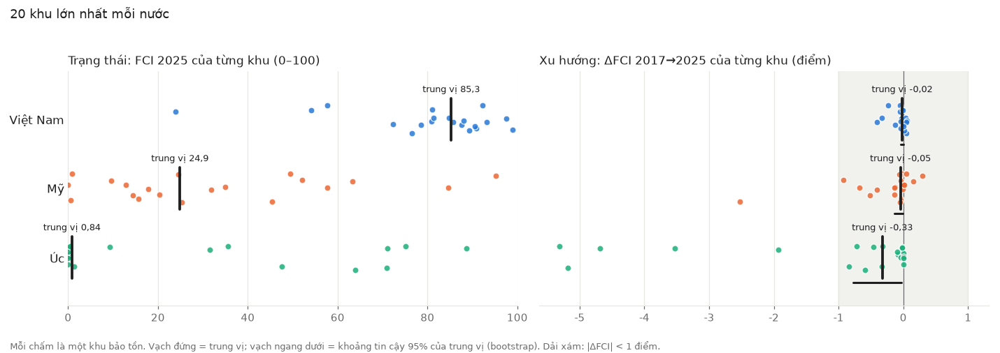
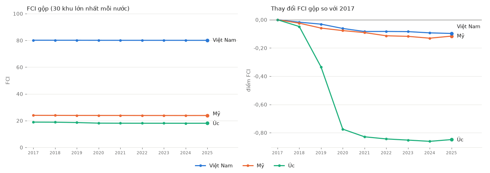
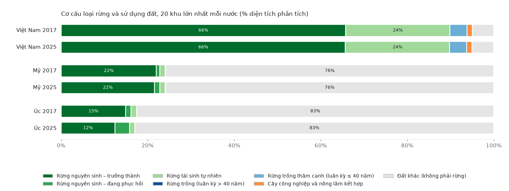
10 khu cỡ vừa mỗi nước
| Chỉ tiêu | Việt Nam | Mỹ | Úc |
|---|---|---|---|
| Số khu · tổng diện tích đất (ha) | 10 · 219.820 | 10 · 967.601 | 10 · 67.203 |
| Tỷ lệ rừng & cây 2025 (gộp) | 95,2% | 34,1% | 44,6% |
| FCI gộp 2017 → 2025 | 79,66 → 79,55 | 32,27 → 32,05 | 31,93 → 31,43 |
| ΔFCI gộp (điểm) | -0,111 | -0,220 | -0,499 |
| FCI 2025 trung vị các khu | 80,1 | 22,8 | 33,5 |
| FCI phần có rừng 2025 (gộp) | 83,6 | 94,1 | 70,4 |
| ΔFCI trung vị (KTC 95%) | -0,045 (-0,146 đến +0,032) | -0,007 (-0,295 đến 0,000) | -0,009 (-1,056 đến -0,001) |
| ΔFCI trung bình | -0,105 | -0,215 | -0,554 |
| ΔFCI so với FCI 2017 (trung vị) | -0,06% | -0,23% | -0,08% |
| % khu có ΔFCI âm | 60% | 70% | 90% |
| Suy giảm / phục hồi / ổn định | 0 / 0 / 10 | 1 / 0 / 9 | 2 / 0 / 8 |
| Thay đổi ròng rừng tự nhiên (gộp) | -0,17% | -0,09% | -0,63% |
| Diện tích đổi lớp 2017→2025 (trung vị) | 0,5% | 0,0% | 0,0% |
Xếp hạng theo từng chỉ tiêu (1 = tốt nhất)
| Nước | FCI 2025 (trung vị các khu) | FCI phần có rừng 2025 (gộp) | ΔFCI 2017→2025 (trung vị các khu) | ΔFCI so với FCI 2017 (trung vị, %) | % khu có ΔFCI âm | Thay đổi ròng rừng tự nhiên (gộp, %) | Điểm trạng thái (FCI, cao = tốt) | Hạng trạng thái | Điểm xu hướng (thấp = tốt) | Điểm chung (thấp = tốt) | Hạng |
|---|---|---|---|---|---|---|---|---|---|---|---|
| Việt Nam | 1 | 2 | 3 | 1 | 1 | 2 | 81,8 | 1 | 1,75 | 1,38 | 1 |
| Mỹ | 3 | 1 | 1 | 3 | 2 | 1 | 58,4 | 2 | 1,75 | 1,88 | 2 |
| Úc | 2 | 3 | 2 | 2 | 3 | 3 | 52,0 | 3 | 2,50 | 2,75 | 3 |
Kiểm định khác biệt ΔFCI giữa các nước
| Cặp nước (A – B) | ΔFCI trung vị A | ΔFCI trung vị B | Chênh A − B | p (hoán vị) |
|---|---|---|---|---|
| Việt Nam – Mỹ | -0,045 | -0,007 | -0,038 | 0,254 |
| Việt Nam – Úc | -0,045 | -0,009 | -0,036 | 0,474 |
| Mỹ – Úc | -0,007 | -0,009 | +0,002 | 0,830 |
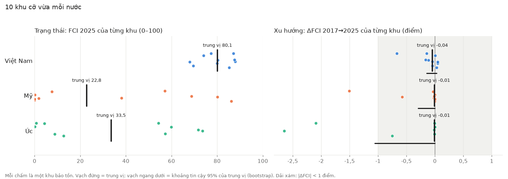
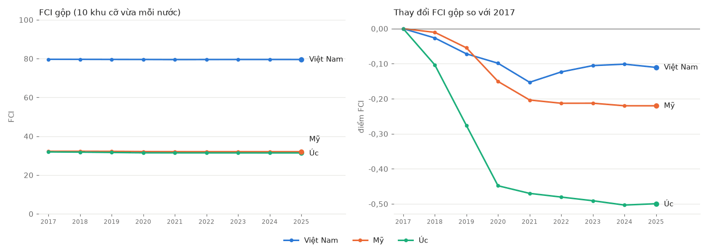
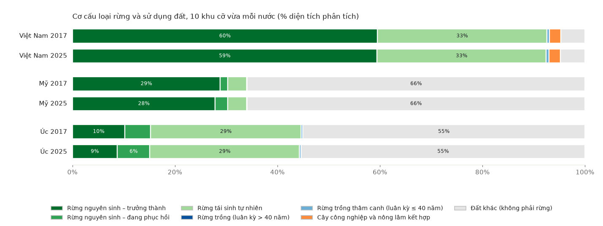
Kiểm tra độ nhạy theo cách chọn khu
| Cách chọn khu | Thứ hạng chung | Điểm chung Việt Nam | Điểm chung Mỹ | Điểm chung Úc | Điểm trạng thái Việt Nam | Điểm trạng thái Mỹ | Điểm trạng thái Úc | p ΔFCI Việt Nam – Mỹ | p ΔFCI Việt Nam – Úc | p ΔFCI Mỹ – Úc |
|---|---|---|---|---|---|---|---|---|---|---|
| 20 khu lớn nhất | Việt Nam > Mỹ > Úc | 1,00 | 2,00 | 3,00 | 85,3 | 60,8 | 46,9 | 0,257 | 0,004 | 0,097 |
| 10 khu cỡ vừa | Việt Nam > Mỹ > Úc | 1,38 | 1,88 | 2,75 | 81,8 | 58,4 | 52,0 | 0,254 | 0,474 | 0,830 |
| 30 khu lớn nhất (kiểm tra) | Việt Nam > Mỹ > Úc | 1,12 | 1,75 | 2,75 | 83,8 | 60,7 | 47,2 | 0,952 | 0,025 | 0,057 |
Bản đồ so sánh
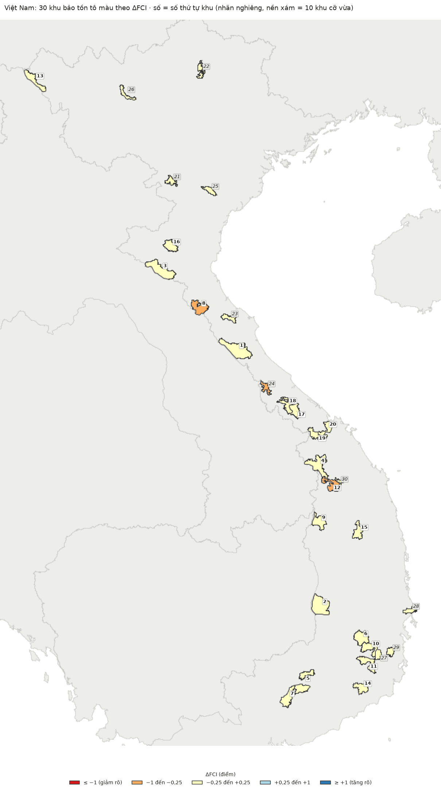
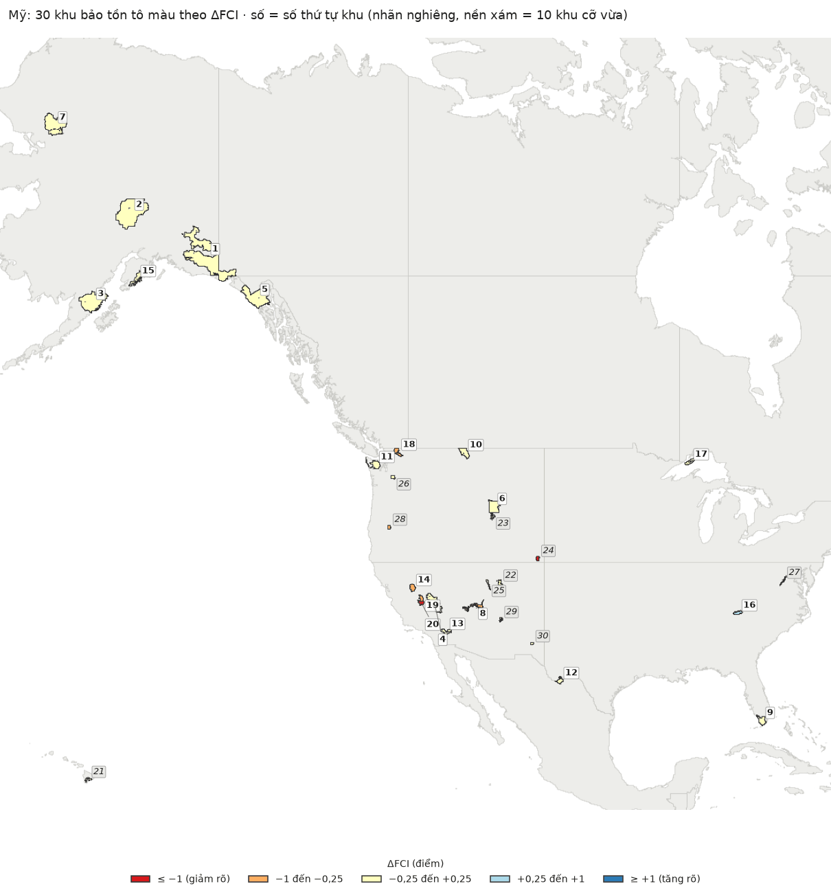
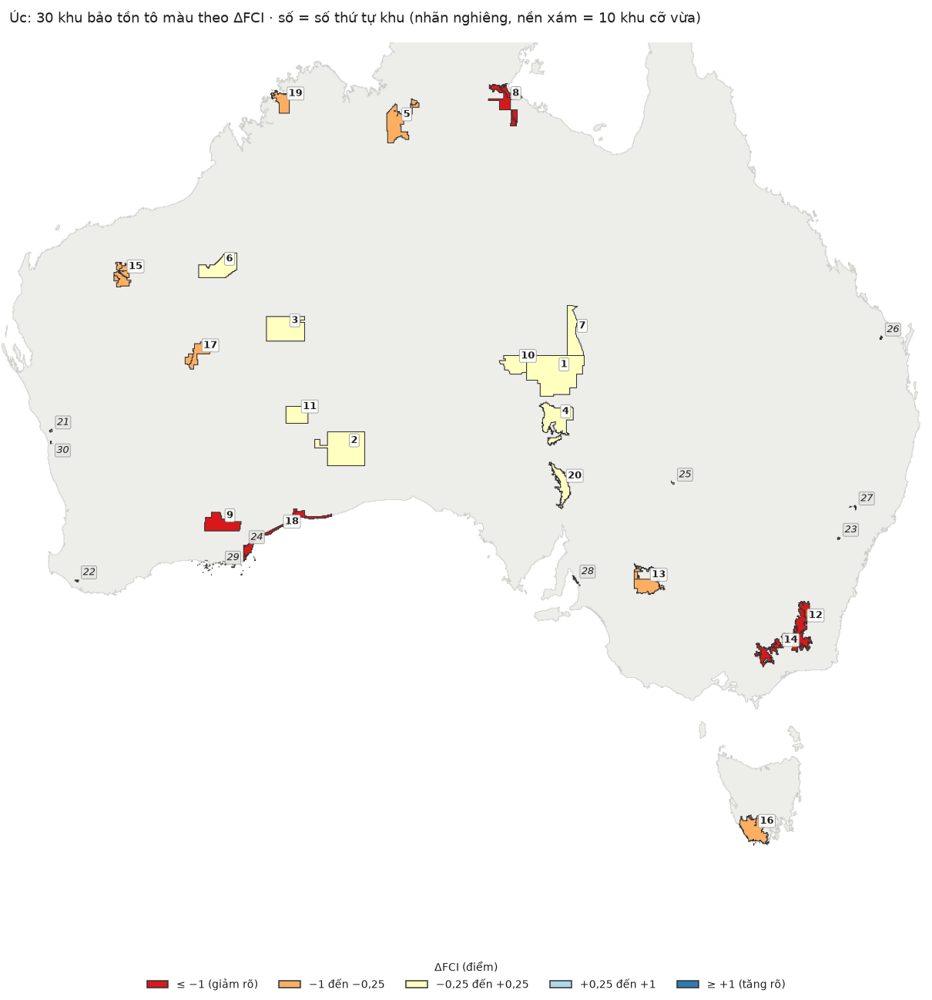
Dữ liệu và phương pháp
Dữ liệu
Forest Typology (ForTy) V2 Beta (projects/nature-trace/assets/forest_typology/v2_beta/<năm>, Google DeepMind,
Google Research, WRI, IIASA): bản đồ loại rừng toàn cầu 10 m theo năm 2017–2025, 7 band xác suất; lớp của mỗi pixel là
band có xác suất cao nhất. Độ chính xác công bố (90% về loại rừng, 95% về rừng/không rừng) là của bản đồ năm 2020; chuỗi
thời gian V2 Beta là bản thử nghiệm, chưa được kiểm định riêng cho biến động theo năm, cũng chưa kiểm định riêng cho Việt
Nam, Mỹ hay Úc.
Khu bảo tồn: WCMC/WDPA/current/polygons. Với mỗi nước (ISO3 = VNM, USA, AUS): trạng thái
Designated/Inscribed, bỏ khu thuần biển, và chỉ giữ các khu có
DESIG_ENG thuộc “Nature Reserve”, “National Park”, “Cultural and Historical Site”:
fc = fc.filter(ee.Filter.inList("DESIG_ENG", ['Nature Reserve', 'National Park', 'Cultural and Historical Site']))
WDPA lưu một số khu thành nhiều mảnh (cùng SITE_ID); các mảnh được gộp thành một khu. Sau khi lọc, các
khu của mỗi nước được xếp từ lớn đến nhỏ theo diện tích đất liền (GIS_AREA − GIS_M_AREA); thứ hạng này là
cột “Hạng diện tích” trong bảng từng nước. Từ danh sách đó chọn hai nhóm:
- 20 khu lớn nhất: 20 khu đứng đầu danh sách.
- 10 khu cỡ vừa: chia danh sách thành 4 nhóm có số khu bằng nhau theo diện tích (đếm từ khu lớn nhất), rồi lấy 10 khu lớn nhất của nhóm thứ 2. Khu nào đã thuộc nhóm lớn nhất thì bỏ qua và lấy khu kế tiếp (gặp ở Mỹ, nơi nhóm 2 bắt đầu từ hạng 17).
Các khu được chọn đánh số thứ tự 1–30 trong mỗi nước (cột “#”, số trên bản đồ và tiêu đề từng khu): 1–20 là khu lớn nhất, 21–30 là khu cỡ vừa, mỗi nhóm xếp theo diện tích.
| Nước | Số khu đủ điều kiện | Khu lớn nhất (hạng diện tích, diện tích) | Nhóm 2 (hạng diện tích) | Khu cỡ vừa (hạng diện tích, diện tích) |
|---|---|---|---|---|
| Việt Nam | 127 | 1–20 (373–1.216 km²) | 33–64 | 33–42 (191–240 km²) |
| Mỹ | 61 | 1–20 (1.646–32.168 km²) | 17–31 | 21–30 (600–1.455 km²) |
| Úc | 1.729 | 1–20 (5.688–36.054 km²) | 434–865 | 434–443 (66–69 km²) |
Ở Mỹ chỉ có National Park và Nature Reserve; “Cultural and Historical Site” chỉ có ở Việt Nam. Các khu lớn nhất của Mỹ và Úc nằm nhiều ở Alaska, sa mạc và vùng khô hạn, còn của Việt Nam là rừng nhiệt đới, nên các nhóm khu khác nhau rất nhiều về sinh cảnh. “Cỡ vừa” là tương đối theo từng nước: Úc có rất nhiều khu nhỏ nên khu cỡ vừa của Úc nhỏ hơn hẳn của Mỹ; ở khu nhỏ, pixel nằm ở mép ranh giới chiếm tỷ lệ lớn hơn nên FCI nhiễu hơn.
Diện tích và chỉ số FCI của từng khu
Diện tích từng lớp mỗi năm tính bằng frequencyHistogram trong hệ UTM của khu ở 10 m (1 pixel = 100 m²).
Các khu của Mỹ và Úc lớn gấp 5–30 lần khu của Việt Nam. Để mỗi request nằm trong giới hạn của GEE, khu nào có hơn
20 triệu pixel ở 10 m được tính ở độ phân giải thô hơn (20, 30 hoặc 60 m; cột
“Độ phân giải” trong bảng từng nước); ở mức này tổng diện tích từng lớp gần như không đổi nhưng các mảng nhỏ hơn
pixel có thể bị gộp vào lớp xung quanh. Bản đồ thay đổi của khu lớn hơn 3.000 km²
được tính từ pixel 30 m.
Bản đồ ΔFCI từng điểm ảnh. Mỗi pixel có ΔFCI = 100 × (trọng số lớp 2025 − trọng số lớp 2017), từ −100 (rừng nguyên sinh trưởng thành thành đất khác) đến +100. Mỗi điểm ảnh trên bản đồ là trung bình của các pixel bên dưới, nên trung bình của cả khu chính là ΔFCI của khu. Màu theo ColorBrewer RdYlBu (đỏ giảm, xanh tăng); điểm ảnh không có pixel nào đổi lớp tô xám. Bản đồ loại rừng dùng ColorBrewer: rừng tự nhiên màu lục, rừng trồng màu lam, cây công nghiệp màu cam. Chỉ số tình trạng rừng (FCI) gán mỗi lớp một trọng số theo mức độ tự nhiên:
FCIt = 100 × Σc wc·Ac,t / Σc Ac,t ΔFCI = FCI2025 − FCI2017
| Lớp | Trọng số w |
|---|---|
| Rừng nguyên sinh – trưởng thành | 1,0 |
| Rừng nguyên sinh – đang phục hồi | 0,8 |
| Rừng tái sinh tự nhiên | 0,6 |
| Rừng trồng (luân kỳ > 40 năm) | 0,3 |
| Rừng trồng thâm canh (luân kỳ ≤ 40 năm) | 0,2 |
| Cây công nghiệp và nông lâm kết hợp | 0,1 |
| Đất khác (không phải rừng) | 0,0 |
Khu được kết luận suy giảm hoặc phục hồi khi |ΔFCI| ≥ 1 điểm và kiểm định Mann–Kendall trên chuỗi 9 năm có p < 0,05; còn lại là ổn định / không rõ. ΔFCI cùng dấu với xu hướng Theil–Sen 9 năm ở 89% số khu.
Cách so sánh giữa các nước
FCI trả lời hai câu hỏi khác nhau, nên được so sánh riêng:
- Trạng thái (FCI 2025): lớp phủ trong khu tự nhiên đến đâu. Chỉ số này phản ánh sinh cảnh nhiều hơn hiệu quả bảo vệ: khu sa mạc, đồng cỏ hay băng tuyết có FCI thấp vì phần lớn là “đất khác”. Vì vậy bài dùng thêm FCI phần có rừng (chỉ tính trên các pixel rừng & cây), cho biết rừng hiện có tự nhiên đến đâu, bất kể khu có bao nhiêu rừng.
- Xu hướng (2017→2025): ΔFCI, ΔFCI so với FCI 2017 (%, để khu có FCI thấp không bị thiệt; chỉ tính cho khu có FCI 2017 ≥ 5, vì ở khu sa mạc FCI gần 0 nên vài phần trăm điểm thay đổi đã thành hàng chục %), tỷ lệ khu có ΔFCI âm và thay đổi ròng của diện tích rừng tự nhiên. Đây là phần quản lý bảo tồn có thể tác động.
Hai nhóm khu được so sánh riêng. Trong mỗi nhóm, mỗi chỉ tiêu được tính theo hai cách: gộp (coi các khu của một nước trong nhóm là một vùng, nên khu lớn có trọng số lớn) và trung vị các khu (mỗi khu một phiếu, ít bị một khu rất lớn chi phối). Khoảng tin cậy 95% của ΔFCI trung vị tính bằng bootstrap (10.000 lần lấy mẫu lại); khác biệt giữa hai nước được kiểm định bằng phép hoán vị (20.000 lần) trên ΔFCI trung vị. Xếp hạng: mỗi nước được xếp hạng 1–3 theo từng chỉ tiêu (1 = tốt nhất). Điểm trạng thái là trung bình cộng của FCI 2025 trung vị các khu và FCI phần có rừng 2025 (cùng thang 0–100, cao là tốt). Điểm này dùng chính giá trị FCI, không dùng thứ hạng, để độ lớn của chênh lệch được tính: nếu lấy trung bình thứ hạng thì hơn 60 điểm ở chỉ tiêu này cũng chỉ được một hạng, ngang với kém 11 điểm ở chỉ tiêu kia. Ba nước được xếp hạng 1–3 theo điểm trạng thái. Điểm xu hướng là trung bình thứ hạng của bốn chỉ tiêu xu hướng. Điểm chung là trung bình của hạng trạng thái và điểm xu hướng, để bốn chỉ tiêu xu hướng không lấn át phần trạng thái; điểm chung càng thấp càng tốt. Bảng chỉ tiêu và bảng thứ hạng từng chỉ tiêu được giữ nguyên để người đọc kiểm tra. Kết quả cũng được kiểm tra lại với cách chọn 30 khu lớn nhất mỗi nước (mục “Kiểm tra độ nhạy”).
Tính bất định: ForTy V2 Beta là dữ liệu thử nghiệm; thứ tự band và định nghĩa lớp có thể đổi. Độ chính xác 90%/95% là của bản 2020, chưa kiểm định cho chuỗi thời gian hay cho từng nước. ΔFCI của phần lớn các khu nhỏ hơn 1 điểm, tức là cùng cỡ với nhiễu phân loại giữa các năm. Trọng số FCI là giả định; thứ hạng và chiều thay đổi đáng tin hơn giá trị tuyệt đối. Mỗi nước chỉ có 20 khu lớn nhất và 10 khu cỡ vừa, không đại diện cho toàn bộ hệ thống khu bảo tồn. Các nhóm khu khác nhau về sinh cảnh, quy mô và áp lực sử dụng đất, nên so sánh không phải là đánh giá hiệu quả quản lý của mỗi nước.
Tài liệu tham khảo
- Neumann, M., Raichuk, A., Potapov, P. et al. Global forest typology at 10-meter resolution for forest and land-use monitoring. Sci Data 13, 1434 (2026). https://doi.org/10.1038/s41597-026-08299-5
- Google DeepMind. Beyond tree cover: mapping the world’s forest types. https://deepmind.google/blog/beyond-tree-cover-mapping-the-worlds-forest-types/
- UNEP-WCMC and IUCN (2026). Protected Planet: The World Database on Protected Areas (WDPA).
www.protectedplanet.net (qua Google Earth Engine,
WCMC/WDPA/current/polygons, 11/2026).
Việt Nam: 30 khu bảo tồn
| # | Khu bảo tồn | Nhóm | Hạng diện tích | Loại | Diện tích đất (ha) | FCI 2017 | FCI 2025 | ΔFCI | ΔFCI/FCI 2017 | p MK | Kết luận | Rừng & cây 2025 | Rừng tự nhiên | Đổi lớp | Độ phân giải (m) |
|---|---|---|---|---|---|---|---|---|---|---|---|---|---|---|---|
| 1 | Phong Nha-Kẻ Bàng | Lớn nhất | 1 | National Park | 121.609 | 97,5 | 97,5 | -0,03 | -0,03% | 0,029 | Ổn định / không rõ | 100% | -0,03% | 0,1% | 10 |
| 2 | Yok Don | Lớn nhất | 2 | National Park | 106.384 | 57,8 | 57,7 | -0,05 | -0,09% | 0,000 | Ổn định / không rõ | 93% | -0,09% | 0,2% | 10 |
| 3 | Pù Mát | Lớn nhất | 3 | National Park | 97.104 | 98,9 | 98,9 | -0,01 | -0,01% | 0,000 | Ổn định / không rõ | 100% | -0,01% | 0,0% | 10 |
| 4 | Sông Thanh | Lớn nhất | 4 | Nature Reserve | 88.547 | 92,4 | 92,2 | -0,24 | -0,26% | 0,001 | Ổn định / không rõ | 98% | -0,31% | 1,0% | 10 |
| 5 | Cát Tiên | Lớn nhất | 5 | National Park | 69.863 | 78,6 | 78,6 | -0,02 | -0,02% | 0,029 | Ổn định / không rõ | 96% | -0,01% | 0,1% | 10 |
| 6 | Chư Yang Sin | Lớn nhất | 6 | National Park | 60.293 | 80,9 | 80,8 | -0,04 | -0,05% | 0,076 | Ổn định / không rõ | 99% | -0,05% | 0,1% | 10 |
| 7 | Văn hóa Đồng Nai | Lớn nhất | 7 | Nature Reserve | 59.086 | 81,0 | 81,0 | -0,02 | -0,03% | 0,175 | Ổn định / không rõ | 97% | +0,06% | 0,9% | 10 |
| 8 | Vũ Quang | Lớn nhất | 8 | National Park | 58.847 | 93,6 | 93,2 | -0,41 | -0,44% | 0,076 | Ổn định / không rõ | 97% | -0,74% | 1,3% | 10 |
| 9 | Chư Mom Ray | Lớn nhất | 9 | National Park | 52.647 | 84,7 | 84,8 | +0,03 | +0,04% | 0,005 | Ổn định / không rõ | 97% | +0,06% | 0,1% | 10 |
| 10 | Bidoup-Núi Bà | Lớn nhất | 10 | National Park | 52.276 | 76,5 | 76,5 | +0,04 | +0,06% | 0,000 | Ổn định / không rõ | 98% | +0,02% | 0,3% | 10 |
| 11 | Rung Thong Da Lat; Lam Bien | Lớn nhất | 11 | Cultural and Historical Site | 51.294 | 23,9 | 23,9 | -0,05 | -0,19% | 0,009 | Ổn định / không rõ | 65% | +0,00% | 1,1% | 10 |
| 12 | Ngọc Linh (Kon Tum) | Lớn nhất | 12 | Nature Reserve | 50.729 | 81,6 | 81,3 | -0,33 | -0,41% | 0,048 | Ổn định / không rõ | 90% | -0,50% | 1,1% | 10 |
| 13 | Mường Nhé | Lớn nhất | 13 | Nature Reserve | 47.766 | 72,4 | 72,4 | -0,00 | -0,00% | 0,348 | Ổn định / không rõ | 84% | +0,01% | 0,1% | 10 |
| 14 | Kalon Song Mao | Lớn nhất | 14 | Nature Reserve | 42.759 | 54,0 | 54,0 | -0,01 | -0,02% | 0,754 | Ổn định / không rõ | 90% | -0,08% | 0,8% | 10 |
| 15 | Kon Ka Kinh | Lớn nhất | 15 | National Park | 42.010 | 87,7 | 87,6 | -0,12 | -0,14% | 0,348 | Ổn định / không rõ | 96% | -0,21% | 0,4% | 10 |
| 16 | Pù Huống | Lớn nhất | 16 | Nature Reserve | 42.004 | 88,0 | 88,1 | +0,05 | +0,06% | 0,009 | Ổn định / không rõ | 99% | +0,10% | 0,2% | 10 |
| 17 | Phong Điền | Lớn nhất | 17 | Nature Reserve | 40.547 | 89,3 | 89,4 | +0,01 | +0,01% | 0,917 | Ổn định / không rõ | 99% | +0,08% | 0,7% | 10 |
| 18 | Đăkrông | Lớn nhất | 18 | Nature Reserve | 38.506 | 85,7 | 85,8 | +0,05 | +0,06% | 0,251 | Ổn định / không rõ | 98% | +0,06% | 1,7% | 10 |
| 19 | Khu Bảo tồn loài Sao La Thừa Thiên Huế | Lớn nhất | 19 | Nature Reserve | 37.572 | 90,9 | 90,8 | -0,05 | -0,05% | 0,754 | Ổn định / không rõ | 98% | -0,07% | 1,4% | 10 |
| 20 | Bạch Mã | Lớn nhất | 20 | National Park | 37.338 | 90,5 | 90,5 | +0,00 | +0,01% | 0,076 | Ổn định / không rõ | 98% | +0,02% | 0,3% | 10 |
| 21 | Pù Hu | Cỡ vừa | 33 | Nature Reserve | 23.996 | 80,4 | 80,3 | -0,11 | -0,14% | 0,001 | Ổn định / không rõ | 99% | -0,13% | 0,3% | 10 |
| 22 | Na Hang | Cỡ vừa | 34 | Nature Reserve | 23.897 | 77,5 | 77,3 | -0,15 | -0,19% | 0,001 | Ổn định / không rõ | 94% | -0,30% | 0,5% | 10 |
| 23 | Kẻ Gỗ | Cỡ vừa | 35 | Nature Reserve | 23.843 | 69,6 | 69,6 | -0,05 | -0,07% | 0,754 | Ổn định / không rõ | 95% | -0,34% | 1,5% | 10 |
| 24 | Bắc Hướng Hóa | Cỡ vừa | 36 | Nature Reserve | 23.375 | 87,7 | 87,1 | -0,67 | -0,77% | 0,076 | Ổn định / không rõ | 98% | -0,82% | 1,5% | 10 |
| 25 | Cúc Phương | Cỡ vừa | 37 | National Park | 22.346 | 79,9 | 79,9 | +0,05 | +0,06% | 0,048 | Ổn định / không rõ | 96% | +0,02% | 0,4% | 10 |
| 26 | Hoàng Liên-Văn Bàn | Cỡ vừa | 38 | Nature Reserve | 21.898 | 88,0 | 87,9 | -0,04 | -0,05% | 0,001 | Ổn định / không rõ | 94% | -0,06% | 0,1% | 10 |
| 27 | Vườn quốc gia Phước Bình | Cỡ vừa | 39 | National Park | 20.919 | 74,1 | 74,1 | +0,00 | +0,00% | 0,348 | Ổn định / không rõ | 93% | +0,02% | 0,3% | 10 |
| 28 | Khu Bảo vệ cảnh quan Đèo Cả - Hòn Nưa | Cỡ vừa | 40 | Cultural and Historical Site | 20.709 | 67,9 | 68,0 | +0,05 | +0,07% | 0,118 | Ổn định / không rõ | 88% | +0,11% | 0,4% | 10 |
| 29 | Hòn Bà | Cỡ vừa | 41 | Nature Reserve | 19.700 | 87,8 | 87,6 | -0,17 | -0,19% | 0,009 | Ổn định / không rõ | 98% | -0,14% | 1,0% | 10 |
| 30 | Ngọc Linh (Quang Nam) | Cỡ vừa | 42 | Nature Reserve | 19.138 | 85,2 | 85,3 | +0,03 | +0,04% | 0,048 | Ổn định / không rõ | 97% | +0,09% | 1,0% | 10 |
1. Phong Nha-Kẻ Bàng
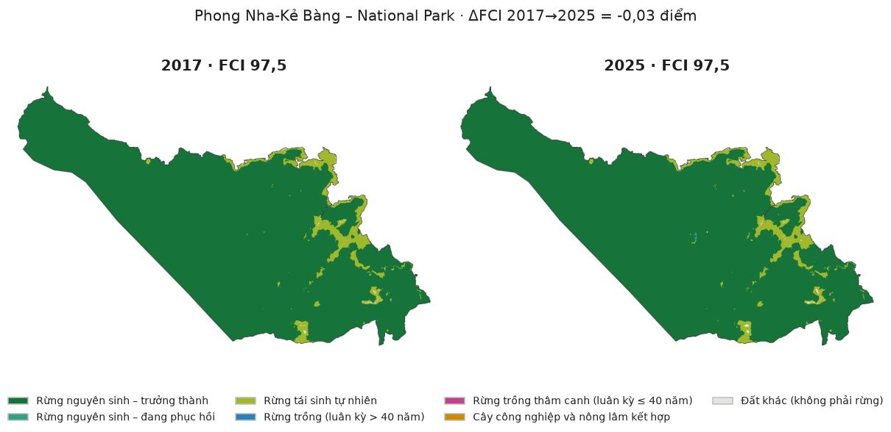
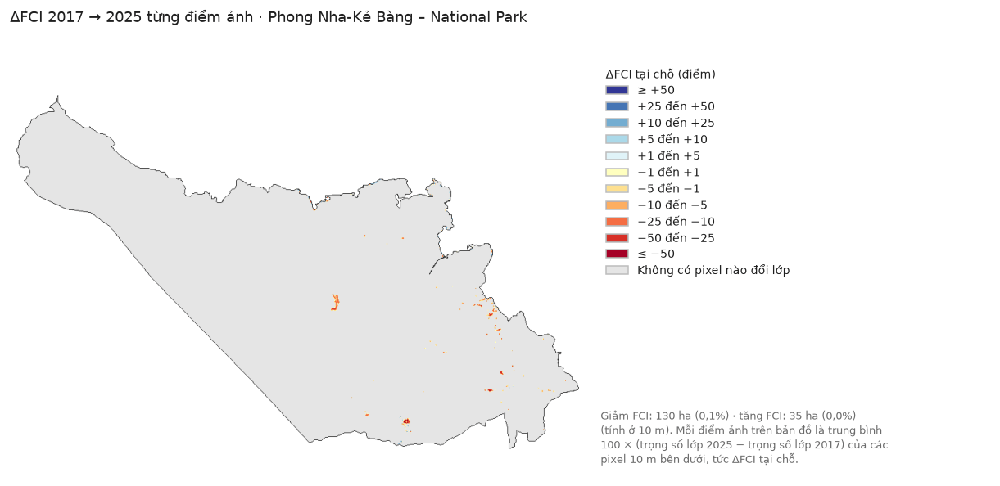
Các chuyển đổi lớp lớn nhất 2017 → 2025
| Từ lớp | Sang lớp | Diện tích (ha) | % diện tích |
|---|---|---|---|
| Rừng tái sinh tự nhiên | Đất khác (không phải rừng) | 53 | 0,04% |
| Rừng nguyên sinh – trưởng thành | Rừng nguyên sinh – đang phục hồi | 51 | 0,04% |
| Đất khác (không phải rừng) | Rừng tái sinh tự nhiên | 26 | 0,02% |
| Rừng nguyên sinh – trưởng thành | Rừng tái sinh tự nhiên | 17 | 0,01% |
| Đất khác (không phải rừng) | Rừng trồng thâm canh (luân kỳ ≤ 40 năm) | 7 | 0,01% |
| Rừng nguyên sinh – trưởng thành | Đất khác (không phải rừng) | 7 | 0,01% |
| Rừng trồng thâm canh (luân kỳ ≤ 40 năm) | Đất khác (không phải rừng) | 1 | 0,00% |
| Đất khác (không phải rừng) | Cây công nghiệp và nông lâm kết hợp | 1 | 0,00% |
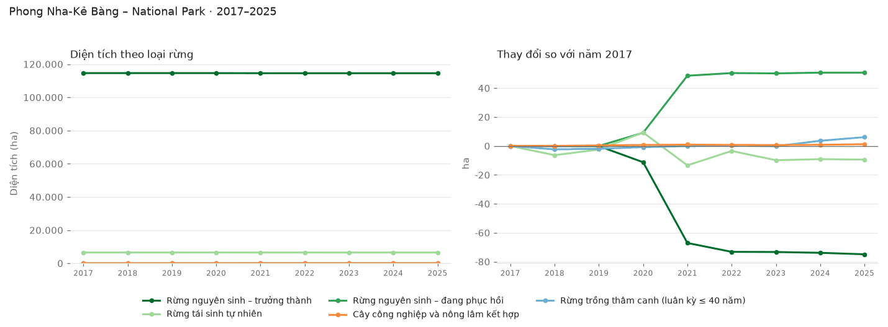
Bảng số liệu (ha)
| Năm | Rừng nguyên sinh – trưởng thành | Rừng nguyên sinh – đang phục hồi | Rừng tái sinh tự nhiên | Rừng trồng thâm canh (luân kỳ ≤ 40 năm) | Cây công nghiệp và nông lâm kết hợp | Tổng |
|---|---|---|---|---|---|---|
| 2017 | 114.622 | 0 | 6.552 | 4 | 46 | 121.224 |
| 2018 | 114.622 | 0 | 6.545 | 2 | 46 | 121.215 |
| 2019 | 114.621 | 0 | 6.549 | 2 | 47 | 121.220 |
| 2020 | 114.610 | 9 | 6.561 | 3 | 47 | 121.231 |
| 2021 | 114.554 | 49 | 6.538 | 4 | 47 | 121.193 |
| 2022 | 114.548 | 50 | 6.548 | 4 | 47 | 121.198 |
| 2023 | 114.548 | 50 | 6.542 | 4 | 47 | 121.191 |
| 2024 | 114.548 | 51 | 6.542 | 8 | 47 | 121.196 |
| 2025 | 114.547 | 51 | 6.542 | 10 | 48 | 121.197 |
2. Yok Don
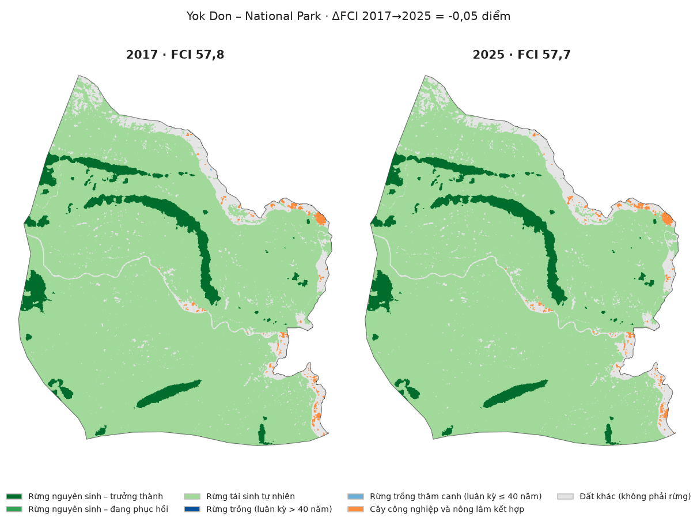
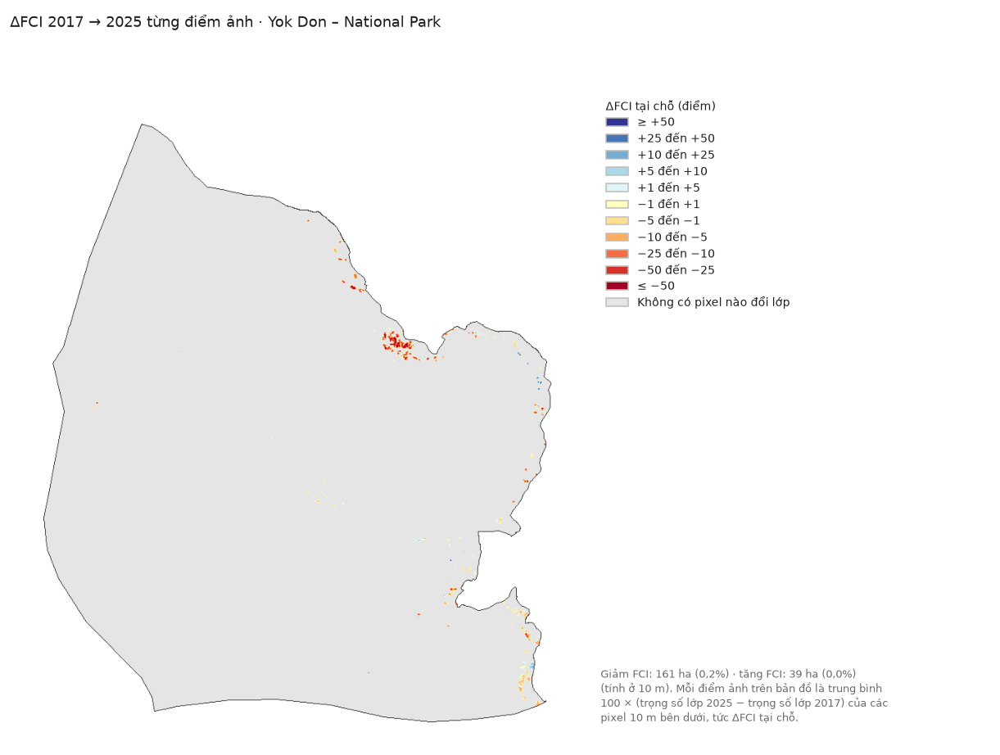
Các chuyển đổi lớp lớn nhất 2017 → 2025
| Từ lớp | Sang lớp | Diện tích (ha) | % diện tích |
|---|---|---|---|
| Rừng tái sinh tự nhiên | Đất khác (không phải rừng) | 90 | 0,08% |
| Cây công nghiệp và nông lâm kết hợp | Đất khác (không phải rừng) | 64 | 0,06% |
| Đất khác (không phải rừng) | Cây công nghiệp và nông lâm kết hợp | 33 | 0,03% |
| Rừng trồng thâm canh (luân kỳ ≤ 40 năm) | Đất khác (không phải rừng) | 7 | 0,01% |
| Đất khác (không phải rừng) | Rừng tái sinh tự nhiên | 5 | 0,01% |
| Rừng tái sinh tự nhiên | Cây công nghiệp và nông lâm kết hợp | 0 | 0,00% |
| Rừng trồng thâm canh (luân kỳ ≤ 40 năm) | Cây công nghiệp và nông lâm kết hợp | 0 | 0,00% |
| Cây công nghiệp và nông lâm kết hợp | Rừng tái sinh tự nhiên | 0 | 0,00% |
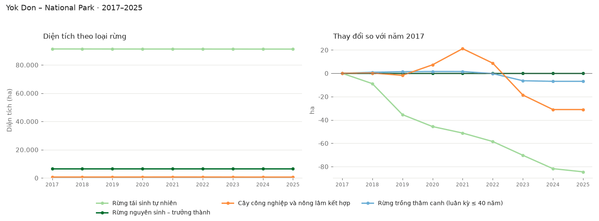
Bảng số liệu (ha)
| Năm | Rừng nguyên sinh – trưởng thành | Rừng tái sinh tự nhiên | Rừng trồng thâm canh (luân kỳ ≤ 40 năm) | Cây công nghiệp và nông lâm kết hợp | Tổng |
|---|---|---|---|---|---|
| 2017 | 6.715 | 91.306 | 7 | 678 | 98.706 |
| 2018 | 6.715 | 91.297 | 8 | 678 | 98.698 |
| 2019 | 6.715 | 91.270 | 8 | 676 | 98.670 |
| 2020 | 6.715 | 91.260 | 8 | 685 | 98.669 |
| 2021 | 6.715 | 91.255 | 8 | 699 | 98.678 |
| 2022 | 6.715 | 91.247 | 7 | 687 | 98.656 |
| 2023 | 6.715 | 91.236 | 1 | 660 | 98.611 |
| 2024 | 6.715 | 91.224 | 0 | 647 | 98.586 |
| 2025 | 6.715 | 91.221 | 0 | 647 | 98.584 |
3. Pù Mát
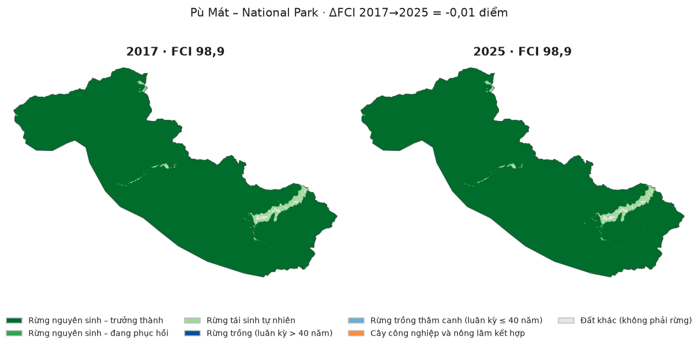
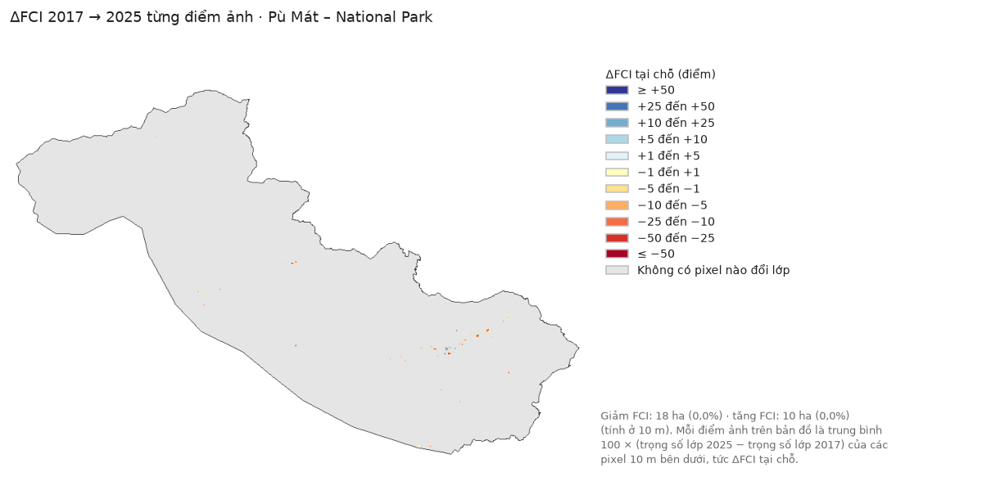
Các chuyển đổi lớp lớn nhất 2017 → 2025
| Từ lớp | Sang lớp | Diện tích (ha) | % diện tích |
|---|---|---|---|
| Rừng tái sinh tự nhiên | Đất khác (không phải rừng) | 12 | 0,01% |
| Đất khác (không phải rừng) | Rừng trồng thâm canh (luân kỳ ≤ 40 năm) | 8 | 0,01% |
| Rừng nguyên sinh – trưởng thành | Đất khác (không phải rừng) | 3 | 0,00% |
| Rừng nguyên sinh – trưởng thành | Rừng nguyên sinh – đang phục hồi | 3 | 0,00% |
| Đất khác (không phải rừng) | Rừng tái sinh tự nhiên | 2 | 0,00% |
| Rừng nguyên sinh – trưởng thành | Rừng tái sinh tự nhiên | 0 | 0,00% |
| Rừng tái sinh tự nhiên | Rừng trồng thâm canh (luân kỳ ≤ 40 năm) | 0 | 0,00% |
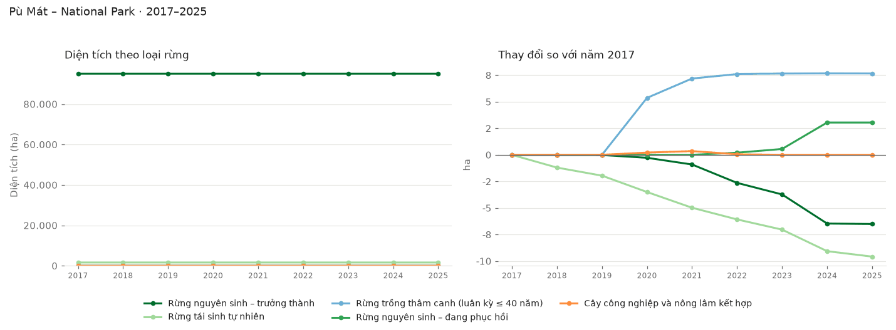
Bảng số liệu (ha)
| Năm | Rừng nguyên sinh – trưởng thành | Rừng nguyên sinh – đang phục hồi | Rừng tái sinh tự nhiên | Rừng trồng thâm canh (luân kỳ ≤ 40 năm) | Cây công nghiệp và nông lâm kết hợp | Tổng |
|---|---|---|---|---|---|---|
| 2017 | 94.990 | 3 | 1.634 | 0 | 0 | 96.627 |
| 2018 | 94.990 | 3 | 1.633 | 0 | 0 | 96.626 |
| 2019 | 94.990 | 3 | 1.632 | 0 | 0 | 96.625 |
| 2020 | 94.990 | 3 | 1.631 | 5 | 0 | 96.629 |
| 2021 | 94.989 | 3 | 1.629 | 7 | 1 | 96.629 |
| 2022 | 94.988 | 3 | 1.628 | 8 | 0 | 96.626 |
| 2023 | 94.987 | 3 | 1.627 | 8 | 0 | 96.625 |
| 2024 | 94.984 | 6 | 1.625 | 8 | 0 | 96.622 |
| 2025 | 94.984 | 6 | 1.625 | 8 | 0 | 96.622 |
4. Sông Thanh
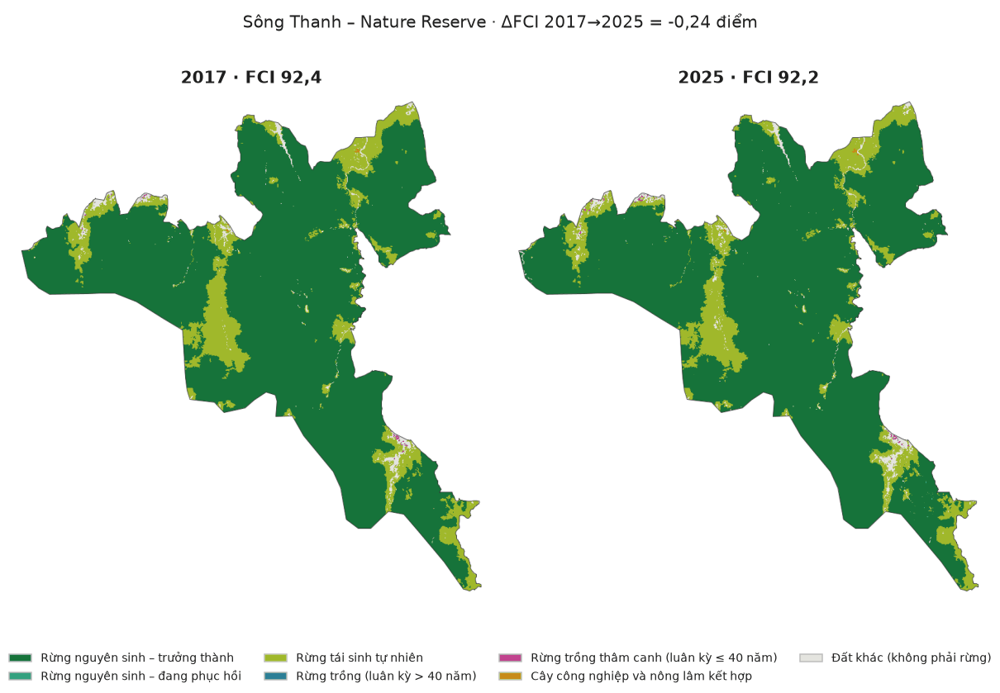
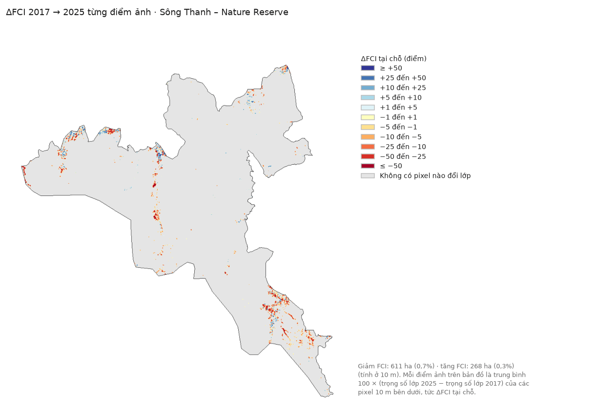
Các chuyển đổi lớp lớn nhất 2017 → 2025
| Từ lớp | Sang lớp | Diện tích (ha) | % diện tích |
|---|---|---|---|
| Rừng tái sinh tự nhiên | Đất khác (không phải rừng) | 422 | 0,48% |
| Đất khác (không phải rừng) | Rừng tái sinh tự nhiên | 221 | 0,25% |
| Rừng nguyên sinh – trưởng thành | Rừng tái sinh tự nhiên | 68 | 0,08% |
| Rừng nguyên sinh – trưởng thành | Đất khác (không phải rừng) | 60 | 0,07% |
| Đất khác (không phải rừng) | Rừng trồng thâm canh (luân kỳ ≤ 40 năm) | 43 | 0,05% |
| Rừng trồng thâm canh (luân kỳ ≤ 40 năm) | Đất khác (không phải rừng) | 24 | 0,03% |
| Rừng nguyên sinh – trưởng thành | Rừng nguyên sinh – đang phục hồi | 23 | 0,03% |
| Rừng tái sinh tự nhiên | Rừng trồng thâm canh (luân kỳ ≤ 40 năm) | 12 | 0,01% |
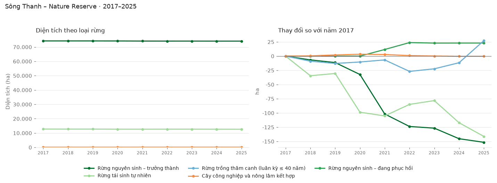
Bảng số liệu (ha)
| Năm | Rừng nguyên sinh – trưởng thành | Rừng nguyên sinh – đang phục hồi | Rừng tái sinh tự nhiên | Rừng trồng thâm canh (luân kỳ ≤ 40 năm) | Cây công nghiệp và nông lâm kết hợp | Tổng |
|---|---|---|---|---|---|---|
| 2017 | 74.259 | 0 | 12.793 | 61 | 30 | 87.143 |
| 2018 | 74.252 | 0 | 12.759 | 52 | 30 | 87.093 |
| 2019 | 74.247 | 0 | 12.763 | 48 | 32 | 87.090 |
| 2020 | 74.226 | 0 | 12.695 | 51 | 33 | 87.005 |
| 2021 | 74.157 | 12 | 12.688 | 54 | 33 | 86.944 |
| 2022 | 74.135 | 24 | 12.709 | 34 | 31 | 86.932 |
| 2023 | 74.132 | 23 | 12.715 | 39 | 30 | 86.939 |
| 2024 | 74.113 | 23 | 12.676 | 49 | 29 | 86.892 |
| 2025 | 74.107 | 23 | 12.652 | 88 | 29 | 86.900 |
5. Cát Tiên
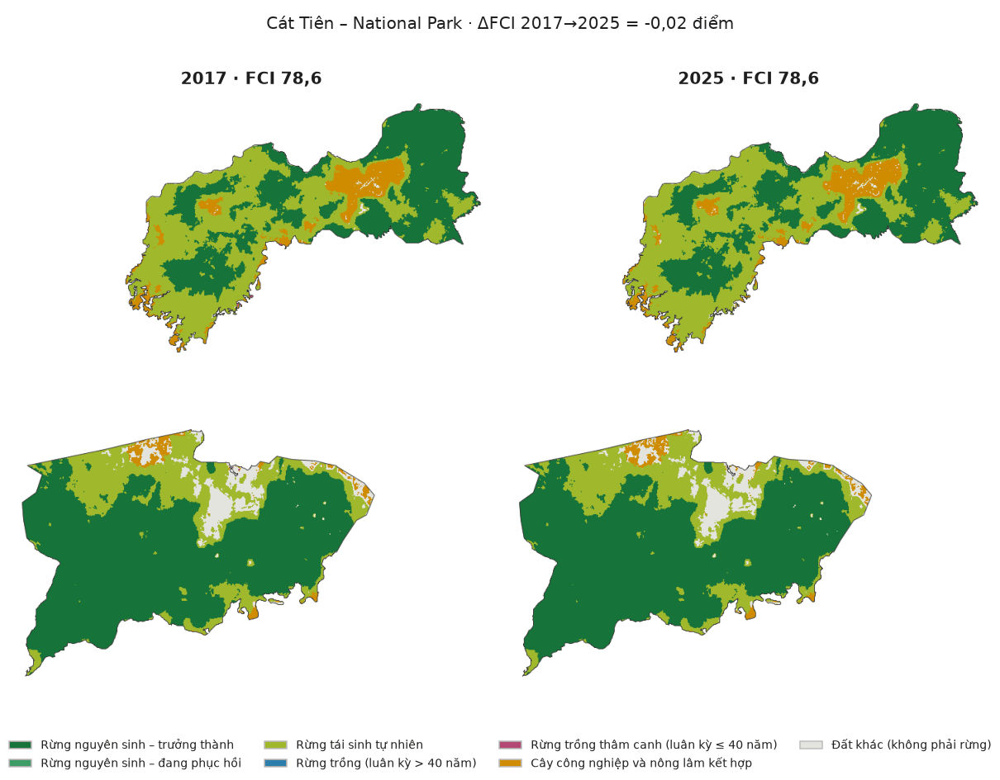
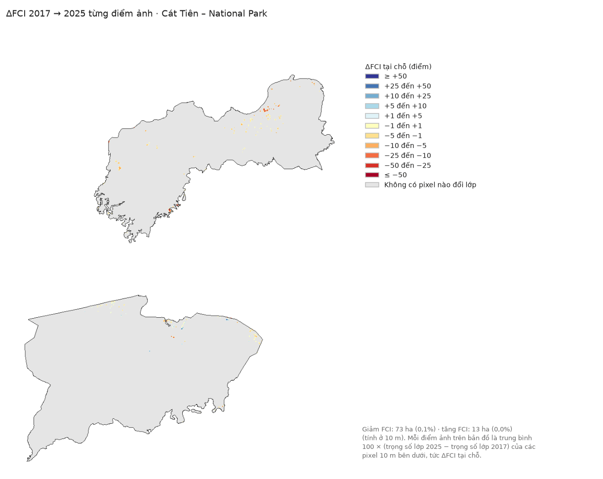
Các chuyển đổi lớp lớn nhất 2017 → 2025
| Từ lớp | Sang lớp | Diện tích (ha) | % diện tích |
|---|---|---|---|
| Cây công nghiệp và nông lâm kết hợp | Đất khác (không phải rừng) | 45 | 0,06% |
| Đất khác (không phải rừng) | Cây công nghiệp và nông lâm kết hợp | 8 | 0,01% |
| Rừng nguyên sinh – trưởng thành | Rừng tái sinh tự nhiên | 8 | 0,01% |
| Rừng tái sinh tự nhiên | Đất khác (không phải rừng) | 6 | 0,01% |
| Rừng trồng thâm canh (luân kỳ ≤ 40 năm) | Đất khác (không phải rừng) | 6 | 0,01% |
| Đất khác (không phải rừng) | Rừng tái sinh tự nhiên | 5 | 0,01% |
| Rừng trồng thâm canh (luân kỳ ≤ 40 năm) | Cây công nghiệp và nông lâm kết hợp | 3 | 0,00% |
| Rừng tái sinh tự nhiên | Cây công nghiệp và nông lâm kết hợp | 3 | 0,00% |
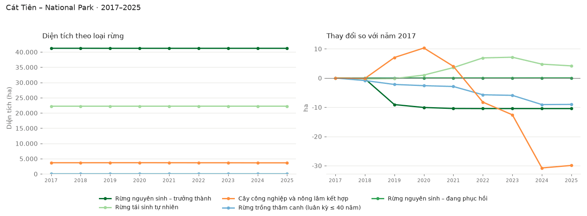
Bảng số liệu (ha)
| Năm | Rừng nguyên sinh – trưởng thành | Rừng nguyên sinh – đang phục hồi | Rừng tái sinh tự nhiên | Rừng trồng thâm canh (luân kỳ ≤ 40 năm) | Cây công nghiệp và nông lâm kết hợp | Tổng |
|---|---|---|---|---|---|---|
| 2017 | 41.228 | 0 | 22.228 | 12 | 3.681 | 67.149 |
| 2018 | 41.228 | 0 | 22.228 | 12 | 3.681 | 67.148 |
| 2019 | 41.219 | 0 | 22.228 | 10 | 3.688 | 67.145 |
| 2020 | 41.218 | 0 | 22.229 | 10 | 3.691 | 67.148 |
| 2021 | 41.218 | 0 | 22.231 | 10 | 3.685 | 67.144 |
| 2022 | 41.218 | 0 | 22.235 | 7 | 3.672 | 67.132 |
| 2023 | 41.218 | 0 | 22.235 | 7 | 3.668 | 67.127 |
| 2024 | 41.218 | 0 | 22.233 | 3 | 3.650 | 67.104 |
| 2025 | 41.218 | 0 | 22.232 | 3 | 3.651 | 67.104 |
6. Chư Yang Sin
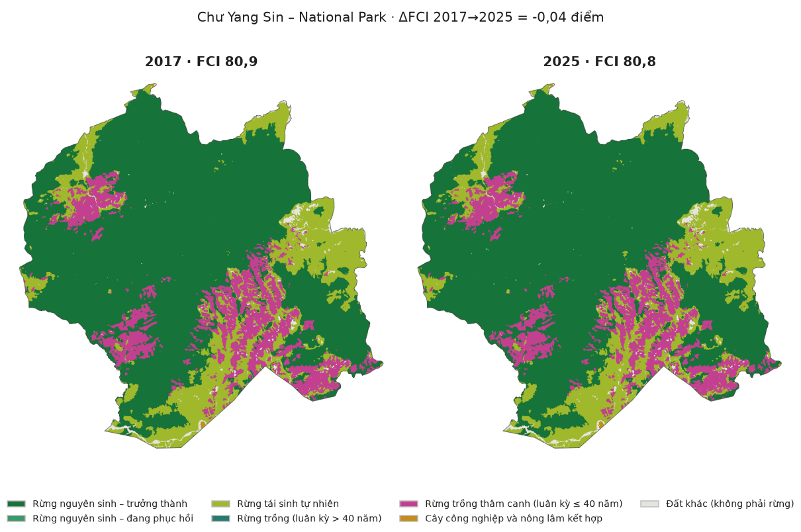
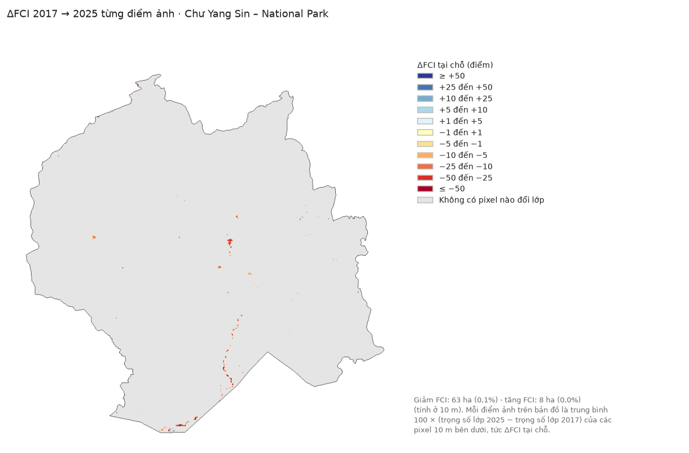
Các chuyển đổi lớp lớn nhất 2017 → 2025
| Từ lớp | Sang lớp | Diện tích (ha) | % diện tích |
|---|---|---|---|
| Rừng tái sinh tự nhiên | Đất khác (không phải rừng) | 31 | 0,05% |
| Rừng nguyên sinh – trưởng thành | Rừng tái sinh tự nhiên | 15 | 0,03% |
| Rừng nguyên sinh – trưởng thành | Rừng nguyên sinh – đang phục hồi | 8 | 0,01% |
| Rừng trồng thâm canh (luân kỳ ≤ 40 năm) | Đất khác (không phải rừng) | 7 | 0,01% |
| Đất khác (không phải rừng) | Rừng tái sinh tự nhiên | 6 | 0,01% |
| Đất khác (không phải rừng) | Rừng trồng thâm canh (luân kỳ ≤ 40 năm) | 2 | 0,00% |
| Rừng nguyên sinh – trưởng thành | Đất khác (không phải rừng) | 1 | 0,00% |
| Rừng trồng thâm canh (luân kỳ ≤ 40 năm) | Rừng tái sinh tự nhiên | 1 | 0,00% |
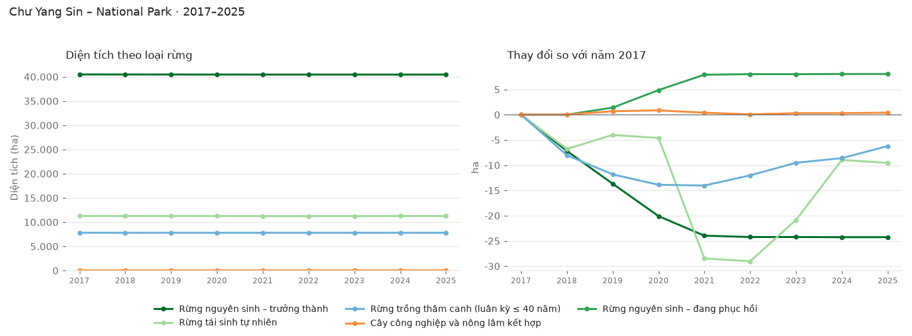
Bảng số liệu (ha)
| Năm | Rừng nguyên sinh – trưởng thành | Rừng nguyên sinh – đang phục hồi | Rừng tái sinh tự nhiên | Rừng trồng thâm canh (luân kỳ ≤ 40 năm) | Cây công nghiệp và nông lâm kết hợp | Tổng |
|---|---|---|---|---|---|---|
| 2017 | 40.482 | 0 | 11.275 | 7.814 | 29 | 59.601 |
| 2018 | 40.475 | 0 | 11.268 | 7.806 | 29 | 59.579 |
| 2019 | 40.469 | 2 | 11.271 | 7.803 | 30 | 59.574 |
| 2020 | 40.462 | 5 | 11.270 | 7.801 | 30 | 59.569 |
| 2021 | 40.458 | 8 | 11.247 | 7.800 | 30 | 59.543 |
| 2022 | 40.458 | 8 | 11.246 | 7.802 | 30 | 59.544 |
| 2023 | 40.458 | 8 | 11.254 | 7.805 | 30 | 59.555 |
| 2024 | 40.458 | 8 | 11.266 | 7.806 | 30 | 59.568 |
| 2025 | 40.458 | 8 | 11.265 | 7.808 | 30 | 59.570 |
7. Văn hóa Đồng Nai
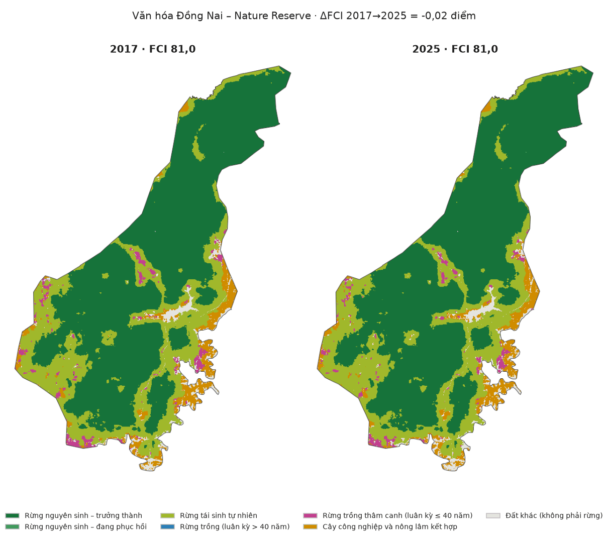
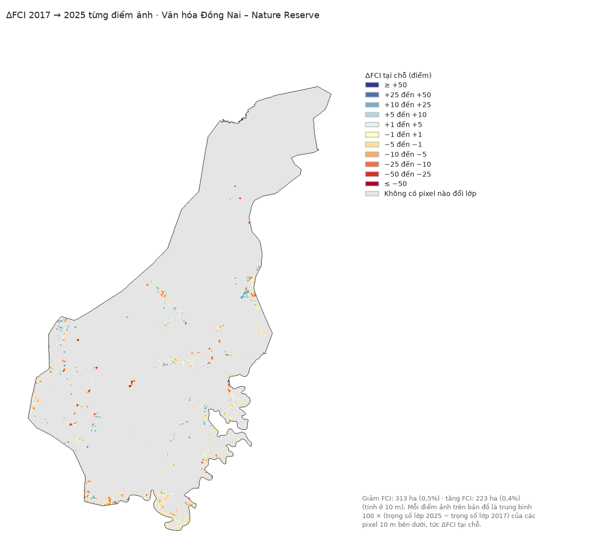
Các chuyển đổi lớp lớn nhất 2017 → 2025
| Từ lớp | Sang lớp | Diện tích (ha) | % diện tích |
|---|---|---|---|
| Rừng trồng thâm canh (luân kỳ ≤ 40 năm) | Đất khác (không phải rừng) | 95 | 0,16% |
| Cây công nghiệp và nông lâm kết hợp | Đất khác (không phải rừng) | 91 | 0,15% |
| Đất khác (không phải rừng) | Rừng trồng thâm canh (luân kỳ ≤ 40 năm) | 82 | 0,14% |
| Rừng trồng thâm canh (luân kỳ ≤ 40 năm) | Rừng tái sinh tự nhiên | 62 | 0,10% |
| Rừng trồng thâm canh (luân kỳ ≤ 40 năm) | Cây công nghiệp và nông lâm kết hợp | 47 | 0,08% |
| Đất khác (không phải rừng) | Cây công nghiệp và nông lâm kết hợp | 44 | 0,07% |
| Rừng tái sinh tự nhiên | Đất khác (không phải rừng) | 37 | 0,06% |
| Đất khác (không phải rừng) | Rừng tái sinh tự nhiên | 32 | 0,05% |
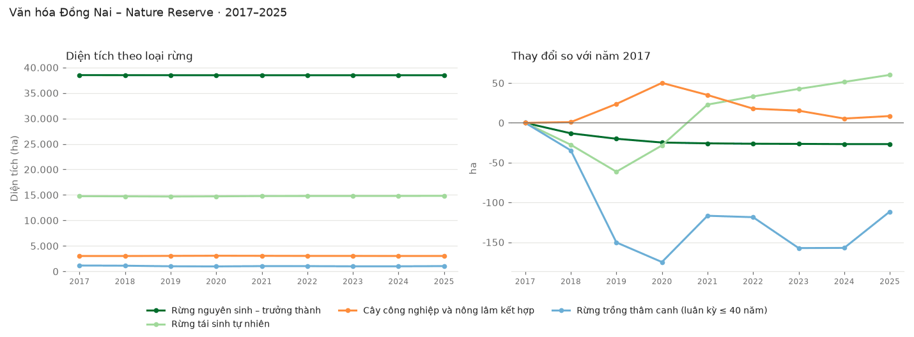
Bảng số liệu (ha)
| Năm | Rừng nguyên sinh – trưởng thành | Rừng tái sinh tự nhiên | Rừng trồng thâm canh (luân kỳ ≤ 40 năm) | Cây công nghiệp và nông lâm kết hợp | Tổng |
|---|---|---|---|---|---|
| 2017 | 38.511 | 14.756 | 1.155 | 3.021 | 57.443 |
| 2018 | 38.498 | 14.728 | 1.120 | 3.022 | 57.368 |
| 2019 | 38.491 | 14.694 | 1.005 | 3.045 | 57.235 |
| 2020 | 38.486 | 14.727 | 980 | 3.071 | 57.265 |
| 2021 | 38.485 | 14.779 | 1.038 | 3.056 | 57.358 |
| 2022 | 38.485 | 14.789 | 1.036 | 3.039 | 57.349 |
| 2023 | 38.484 | 14.798 | 998 | 3.037 | 57.317 |
| 2024 | 38.484 | 14.807 | 998 | 3.027 | 57.316 |
| 2025 | 38.484 | 14.816 | 1.043 | 3.030 | 57.373 |
8. Vũ Quang
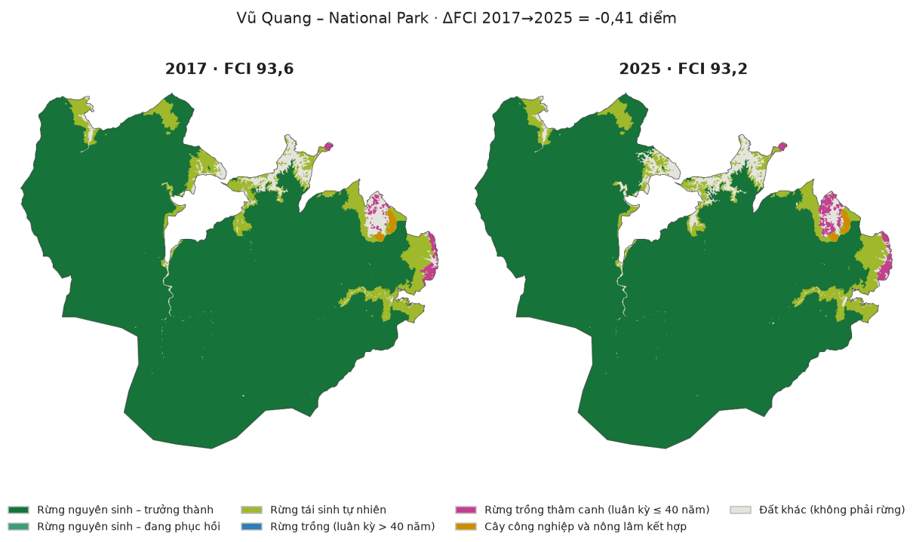
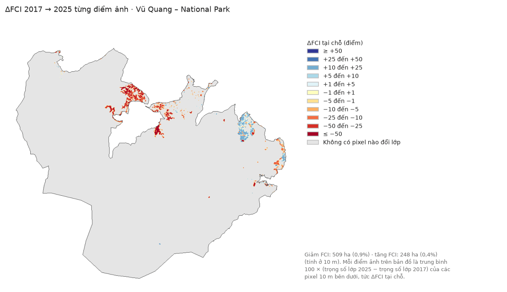
Các chuyển đổi lớp lớn nhất 2017 → 2025
| Từ lớp | Sang lớp | Diện tích (ha) | % diện tích |
|---|---|---|---|
| Rừng tái sinh tự nhiên | Đất khác (không phải rừng) | 369 | 0,63% |
| Đất khác (không phải rừng) | Rừng trồng thâm canh (luân kỳ ≤ 40 năm) | 233 | 0,40% |
| Rừng trồng thâm canh (luân kỳ ≤ 40 năm) | Đất khác (không phải rừng) | 59 | 0,10% |
| Rừng nguyên sinh – trưởng thành | Đất khác (không phải rừng) | 51 | 0,09% |
| Rừng nguyên sinh – trưởng thành | Rừng tái sinh tự nhiên | 16 | 0,03% |
| Đất khác (không phải rừng) | Rừng tái sinh tự nhiên | 13 | 0,02% |
| Rừng tái sinh tự nhiên | Rừng trồng thâm canh (luân kỳ ≤ 40 năm) | 11 | 0,02% |
| Rừng trồng thâm canh (luân kỳ ≤ 40 năm) | Rừng tái sinh tự nhiên | 2 | 0,00% |
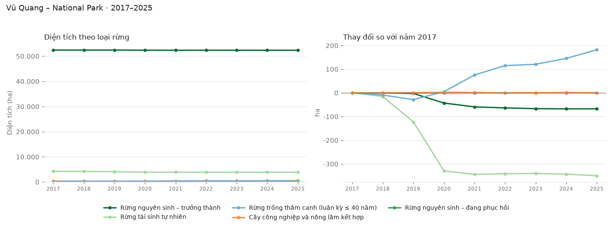
Bảng số liệu (ha)
| Năm | Rừng nguyên sinh – trưởng thành | Rừng nguyên sinh – đang phục hồi | Rừng tái sinh tự nhiên | Rừng trồng thâm canh (luân kỳ ≤ 40 năm) | Cây công nghiệp và nông lâm kết hợp | Tổng |
|---|---|---|---|---|---|---|
| 2017 | 52.419 | 0 | 4.231 | 360 | 142 | 57.152 |
| 2018 | 52.419 | 0 | 4.215 | 351 | 142 | 57.127 |
| 2019 | 52.417 | 0 | 4.108 | 332 | 143 | 56.999 |
| 2020 | 52.376 | 0 | 3.902 | 365 | 145 | 56.788 |
| 2021 | 52.360 | 0 | 3.887 | 436 | 144 | 56.827 |
| 2022 | 52.356 | 0 | 3.890 | 475 | 142 | 56.863 |
| 2023 | 52.352 | 0 | 3.891 | 481 | 143 | 56.867 |
| 2024 | 52.352 | 1 | 3.888 | 506 | 144 | 56.890 |
| 2025 | 52.352 | 1 | 3.881 | 542 | 142 | 56.918 |
9. Chư Mom Ray
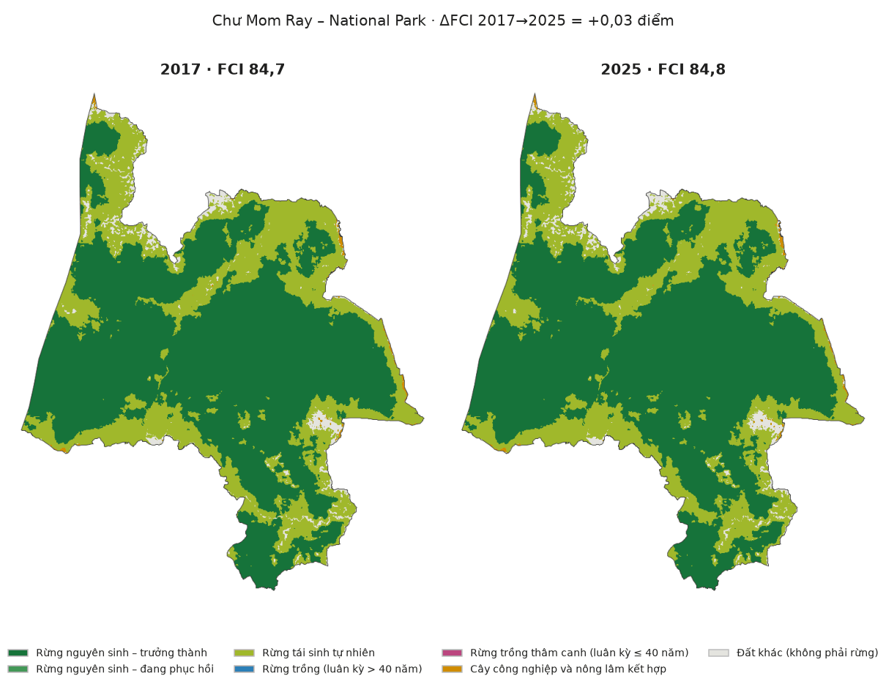
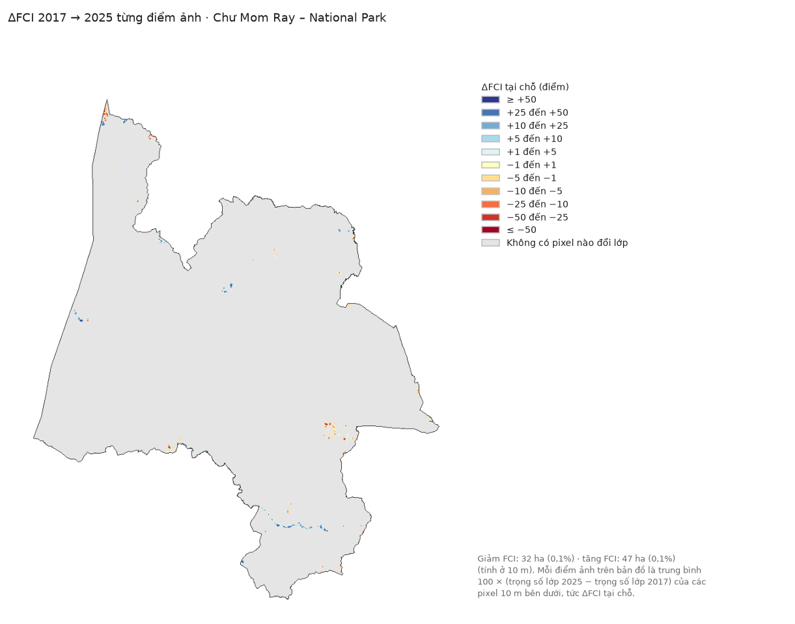
Các chuyển đổi lớp lớn nhất 2017 → 2025
| Từ lớp | Sang lớp | Diện tích (ha) | % diện tích |
|---|---|---|---|
| Đất khác (không phải rừng) | Rừng tái sinh tự nhiên | 44 | 0,08% |
| Cây công nghiệp và nông lâm kết hợp | Đất khác (không phải rừng) | 17 | 0,03% |
| Rừng tái sinh tự nhiên | Đất khác (không phải rừng) | 14 | 0,03% |
| Đất khác (không phải rừng) | Cây công nghiệp và nông lâm kết hợp | 2 | 0,00% |
| Rừng nguyên sinh – trưởng thành | Rừng tái sinh tự nhiên | 1 | 0,00% |
| Rừng tái sinh tự nhiên | Cây công nghiệp và nông lâm kết hợp | 0 | 0,00% |
| Đất khác (không phải rừng) | Rừng trồng thâm canh (luân kỳ ≤ 40 năm) | 0 | 0,00% |
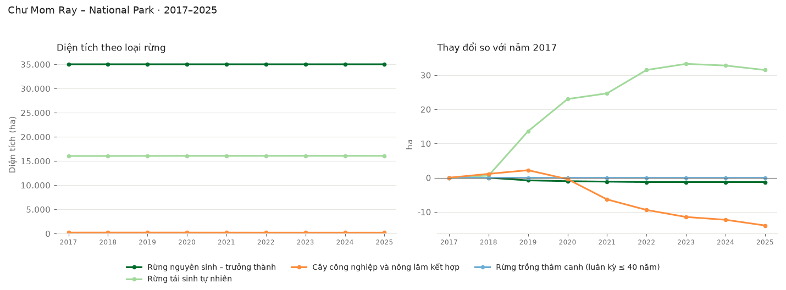
Bảng số liệu (ha)
| Năm | Rừng nguyên sinh – trưởng thành | Rừng tái sinh tự nhiên | Rừng trồng thâm canh (luân kỳ ≤ 40 năm) | Cây công nghiệp và nông lâm kết hợp | Tổng |
|---|---|---|---|---|---|
| 2017 | 35.020 | 16.048 | 0 | 217 | 51.284 |
| 2018 | 35.020 | 16.048 | 0 | 218 | 51.286 |
| 2019 | 35.019 | 16.061 | 0 | 219 | 51.299 |
| 2020 | 35.019 | 16.071 | 0 | 216 | 51.306 |
| 2021 | 35.019 | 16.073 | 0 | 210 | 51.301 |
| 2022 | 35.019 | 16.079 | 0 | 207 | 51.305 |
| 2023 | 35.019 | 16.081 | 0 | 205 | 51.305 |
| 2024 | 35.019 | 16.081 | 0 | 204 | 51.304 |
| 2025 | 35.019 | 16.079 | 0 | 203 | 51.301 |
10. Bidoup-Núi Bà
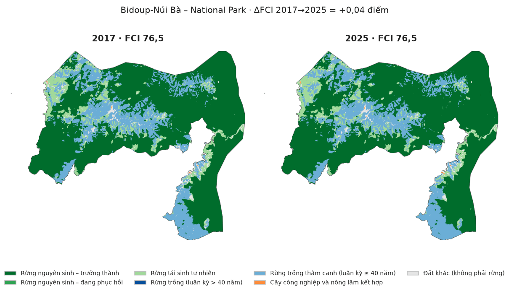
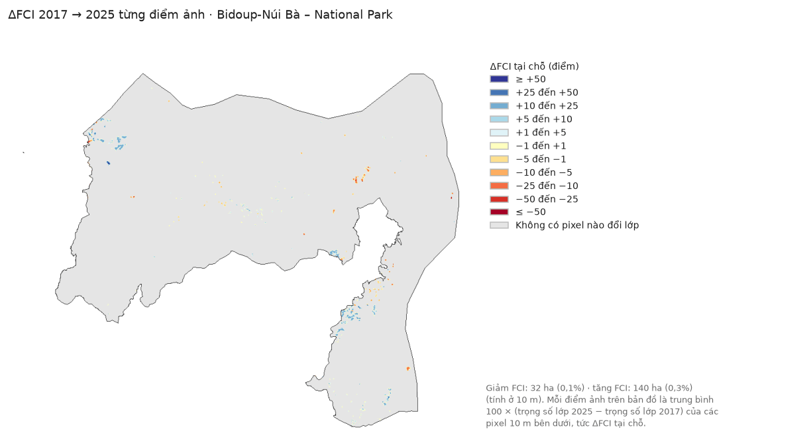
Các chuyển đổi lớp lớn nhất 2017 → 2025
| Từ lớp | Sang lớp | Diện tích (ha) | % diện tích |
|---|---|---|---|
| Đất khác (không phải rừng) | Rừng trồng thâm canh (luân kỳ ≤ 40 năm) | 126 | 0,24% |
| Rừng nguyên sinh – trưởng thành | Rừng nguyên sinh – đang phục hồi | 14 | 0,03% |
| Đất khác (không phải rừng) | Rừng tái sinh tự nhiên | 13 | 0,02% |
| Rừng trồng thâm canh (luân kỳ ≤ 40 năm) | Đất khác (không phải rừng) | 9 | 0,02% |
| Rừng tái sinh tự nhiên | Đất khác (không phải rừng) | 5 | 0,01% |
| Rừng nguyên sinh – trưởng thành | Đất khác (không phải rừng) | 2 | 0,00% |
| Rừng nguyên sinh – trưởng thành | Rừng tái sinh tự nhiên | 1 | 0,00% |
| Rừng trồng thâm canh (luân kỳ ≤ 40 năm) | Rừng tái sinh tự nhiên | 1 | 0,00% |
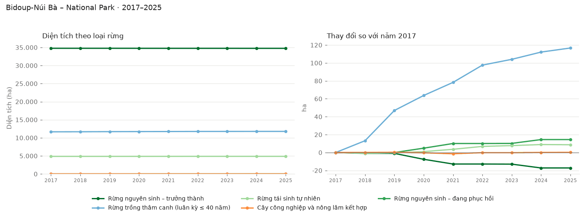
Bảng số liệu (ha)
| Năm | Rừng nguyên sinh – trưởng thành | Rừng nguyên sinh – đang phục hồi | Rừng tái sinh tự nhiên | Rừng trồng thâm canh (luân kỳ ≤ 40 năm) | Cây công nghiệp và nông lâm kết hợp | Tổng |
|---|---|---|---|---|---|---|
| 2017 | 34.766 | 0 | 4.863 | 11.661 | 20 | 51.310 |
| 2018 | 34.765 | 0 | 4.862 | 11.674 | 21 | 51.322 |
| 2019 | 34.765 | 0 | 4.863 | 11.707 | 21 | 51.356 |
| 2020 | 34.759 | 5 | 4.864 | 11.724 | 20 | 51.372 |
| 2021 | 34.753 | 10 | 4.867 | 11.739 | 19 | 51.388 |
| 2022 | 34.753 | 10 | 4.870 | 11.758 | 20 | 51.412 |
| 2023 | 34.753 | 10 | 4.871 | 11.765 | 20 | 51.419 |
| 2024 | 34.749 | 14 | 4.872 | 11.773 | 21 | 51.429 |
| 2025 | 34.749 | 14 | 4.872 | 11.777 | 21 | 51.433 |
11. Rung Thong Da Lat; Lam Bien
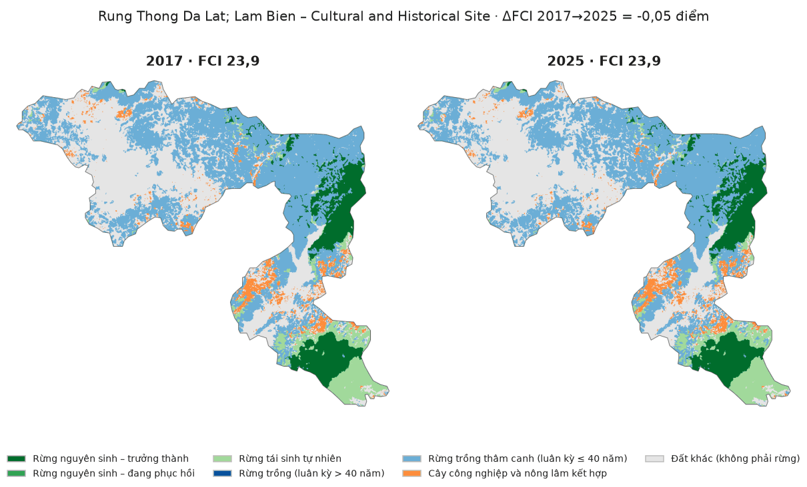
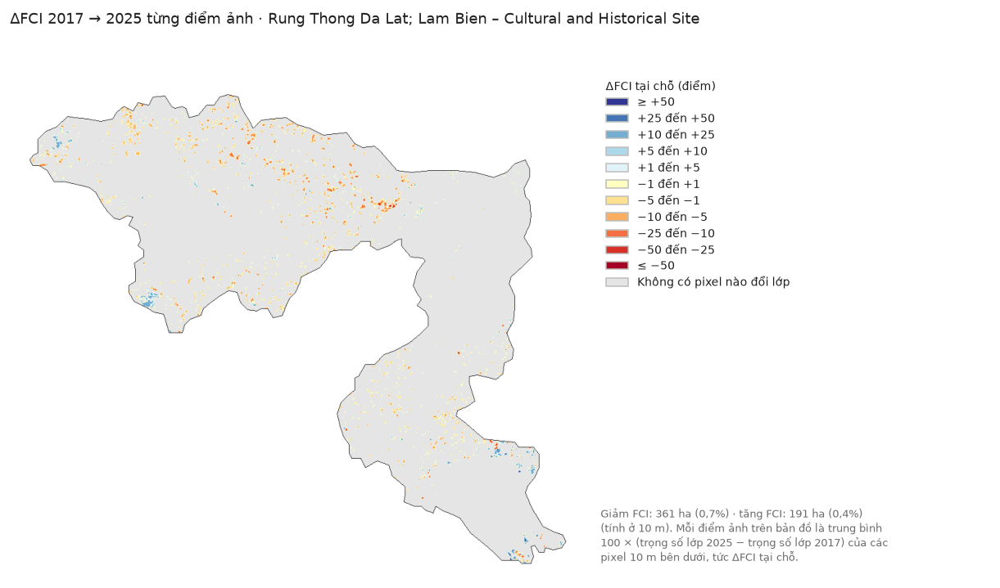
Các chuyển đổi lớp lớn nhất 2017 → 2025
| Từ lớp | Sang lớp | Diện tích (ha) | % diện tích |
|---|---|---|---|
| Rừng trồng thâm canh (luân kỳ ≤ 40 năm) | Đất khác (không phải rừng) | 233 | 0,45% |
| Đất khác (không phải rừng) | Rừng trồng thâm canh (luân kỳ ≤ 40 năm) | 165 | 0,32% |
| Cây công nghiệp và nông lâm kết hợp | Đất khác (không phải rừng) | 103 | 0,20% |
| Đất khác (không phải rừng) | Rừng tái sinh tự nhiên | 21 | 0,04% |
| Rừng tái sinh tự nhiên | Đất khác (không phải rừng) | 19 | 0,04% |
| Rừng trồng thâm canh (luân kỳ ≤ 40 năm) | Cây công nghiệp và nông lâm kết hợp | 4 | 0,01% |
| Đất khác (không phải rừng) | Cây công nghiệp và nông lâm kết hợp | 3 | 0,01% |
| Rừng tái sinh tự nhiên | Cây công nghiệp và nông lâm kết hợp | 2 | 0,00% |
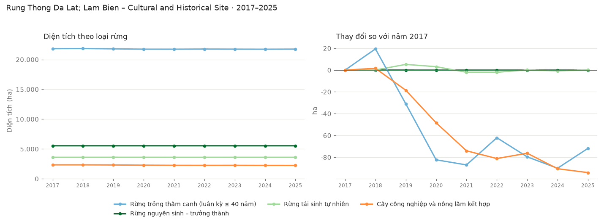
Bảng số liệu (ha)
| Năm | Rừng nguyên sinh – trưởng thành | Rừng tái sinh tự nhiên | Rừng trồng thâm canh (luân kỳ ≤ 40 năm) | Cây công nghiệp và nông lâm kết hợp | Tổng |
|---|---|---|---|---|---|
| 2017 | 5.532 | 3.604 | 21.819 | 2.336 | 33.292 |
| 2018 | 5.532 | 3.604 | 21.838 | 2.338 | 33.313 |
| 2019 | 5.532 | 3.609 | 21.788 | 2.318 | 33.247 |
| 2020 | 5.532 | 3.607 | 21.737 | 2.288 | 33.164 |
| 2021 | 5.532 | 3.602 | 21.732 | 2.262 | 33.128 |
| 2022 | 5.532 | 3.602 | 21.757 | 2.255 | 33.146 |
| 2023 | 5.532 | 3.604 | 21.739 | 2.260 | 33.136 |
| 2024 | 5.532 | 3.603 | 21.729 | 2.246 | 33.110 |
| 2025 | 5.532 | 3.604 | 21.747 | 2.242 | 33.126 |
12. Ngọc Linh (Kon Tum)
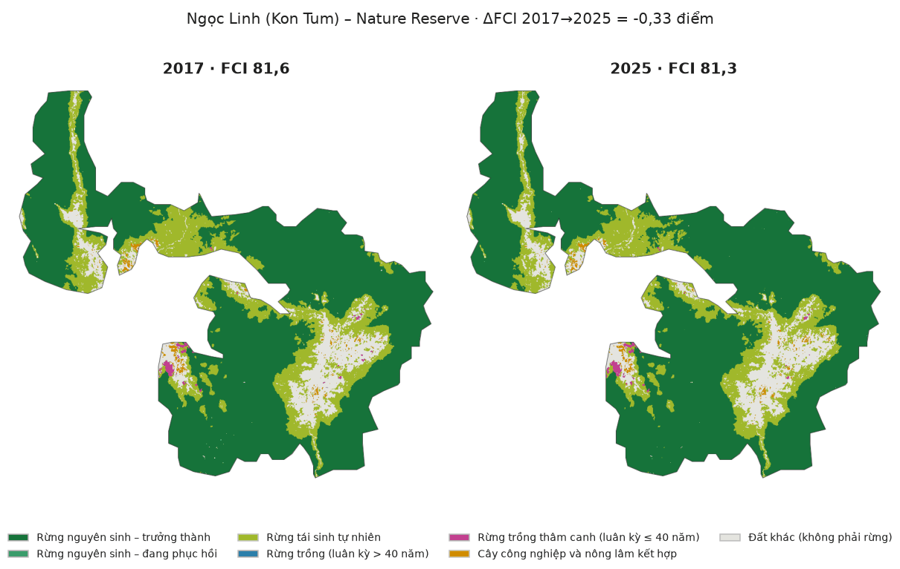
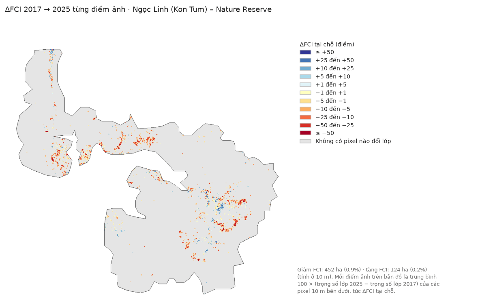
Các chuyển đổi lớp lớn nhất 2017 → 2025
| Từ lớp | Sang lớp | Diện tích (ha) | % diện tích |
|---|---|---|---|
| Rừng tái sinh tự nhiên | Đất khác (không phải rừng) | 312 | 0,61% |
| Đất khác (không phải rừng) | Rừng tái sinh tự nhiên | 104 | 0,20% |
| Rừng nguyên sinh – trưởng thành | Rừng tái sinh tự nhiên | 67 | 0,13% |
| Cây công nghiệp và nông lâm kết hợp | Đất khác (không phải rừng) | 33 | 0,07% |
| Rừng trồng thâm canh (luân kỳ ≤ 40 năm) | Đất khác (không phải rừng) | 16 | 0,03% |
| Rừng tái sinh tự nhiên | Cây công nghiệp và nông lâm kết hợp | 11 | 0,02% |
| Đất khác (không phải rừng) | Rừng trồng thâm canh (luân kỳ ≤ 40 năm) | 10 | 0,02% |
| Rừng nguyên sinh – trưởng thành | Đất khác (không phải rừng) | 9 | 0,02% |
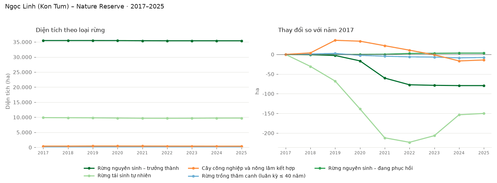
Bảng số liệu (ha)
| Năm | Rừng nguyên sinh – trưởng thành | Rừng nguyên sinh – đang phục hồi | Rừng tái sinh tự nhiên | Rừng trồng thâm canh (luân kỳ ≤ 40 năm) | Cây công nghiệp và nông lâm kết hợp | Tổng |
|---|---|---|---|---|---|---|
| 2017 | 35.473 | 0 | 9.875 | 185 | 413 | 45.945 |
| 2018 | 35.472 | 0 | 9.844 | 186 | 417 | 45.919 |
| 2019 | 35.470 | 0 | 9.807 | 187 | 449 | 45.913 |
| 2020 | 35.456 | 0 | 9.736 | 182 | 447 | 45.821 |
| 2021 | 35.412 | 0 | 9.663 | 180 | 435 | 45.691 |
| 2022 | 35.395 | 2 | 9.651 | 178 | 424 | 45.651 |
| 2023 | 35.394 | 3 | 9.668 | 178 | 412 | 45.655 |
| 2024 | 35.393 | 3 | 9.721 | 176 | 396 | 45.690 |
| 2025 | 35.393 | 3 | 9.725 | 177 | 399 | 45.697 |
13. Mường Nhé
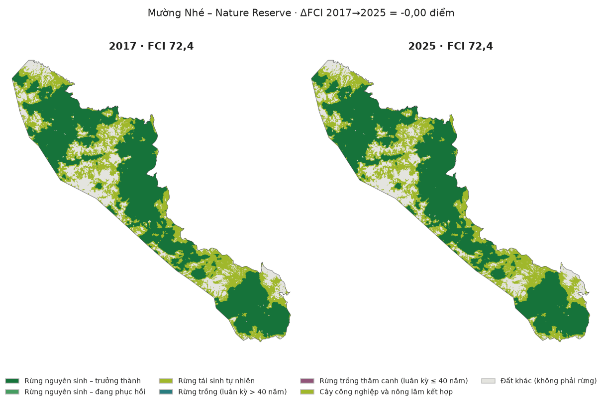
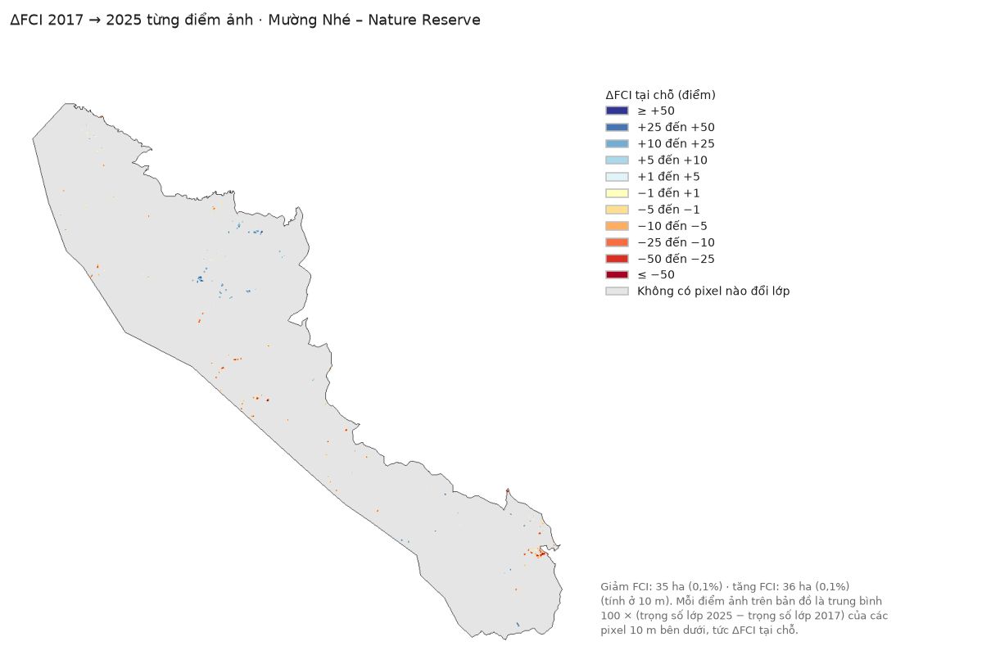
Các chuyển đổi lớp lớn nhất 2017 → 2025
| Từ lớp | Sang lớp | Diện tích (ha) | % diện tích |
|---|---|---|---|
| Đất khác (không phải rừng) | Rừng tái sinh tự nhiên | 35 | 0,07% |
| Rừng tái sinh tự nhiên | Đất khác (không phải rừng) | 24 | 0,05% |
| Rừng nguyên sinh – trưởng thành | Đất khác (không phải rừng) | 6 | 0,01% |
| Rừng nguyên sinh – trưởng thành | Rừng tái sinh tự nhiên | 3 | 0,01% |
| Rừng nguyên sinh – trưởng thành | Rừng nguyên sinh – đang phục hồi | 2 | 0,00% |
| Đất khác (không phải rừng) | Rừng trồng thâm canh (luân kỳ ≤ 40 năm) | 0 | 0,00% |
| Cây công nghiệp và nông lâm kết hợp | Đất khác (không phải rừng) | 0 | 0,00% |
| Đất khác (không phải rừng) | Cây công nghiệp và nông lâm kết hợp | 0 | 0,00% |
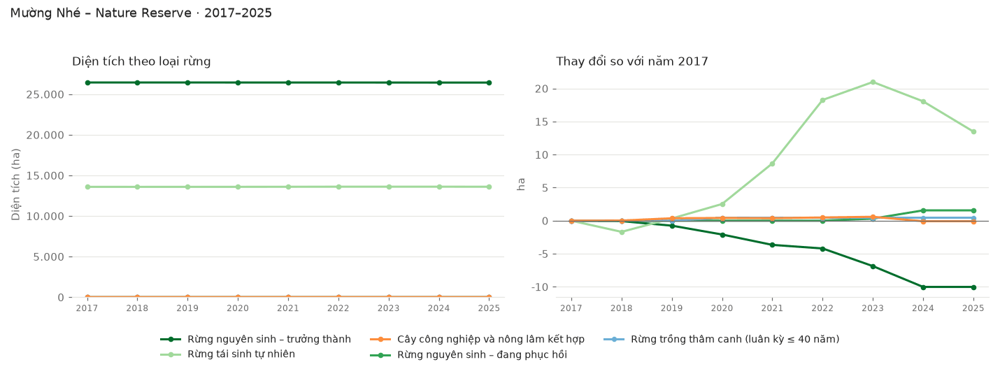
Bảng số liệu (ha)
| Năm | Rừng nguyên sinh – trưởng thành | Rừng nguyên sinh – đang phục hồi | Rừng tái sinh tự nhiên | Rừng trồng thâm canh (luân kỳ ≤ 40 năm) | Cây công nghiệp và nông lâm kết hợp | Tổng |
|---|---|---|---|---|---|---|
| 2017 | 26.442 | 0 | 13.588 | 0 | 8 | 40.038 |
| 2018 | 26.442 | 0 | 13.586 | 0 | 8 | 40.037 |
| 2019 | 26.441 | 0 | 13.588 | 0 | 9 | 40.038 |
| 2020 | 26.440 | 0 | 13.590 | 0 | 9 | 40.040 |
| 2021 | 26.438 | 0 | 13.597 | 0 | 9 | 40.044 |
| 2022 | 26.438 | 0 | 13.606 | 0 | 9 | 40.053 |
| 2023 | 26.435 | 0 | 13.609 | 0 | 9 | 40.054 |
| 2024 | 26.432 | 2 | 13.606 | 0 | 8 | 40.048 |
| 2025 | 26.432 | 2 | 13.601 | 0 | 8 | 40.044 |
14. Kalon Song Mao
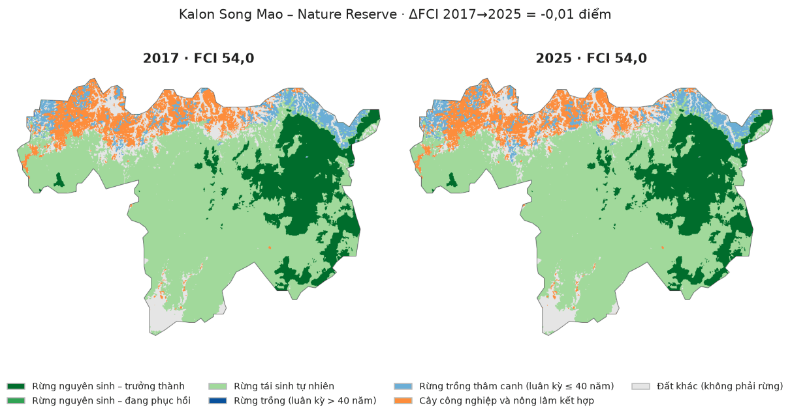
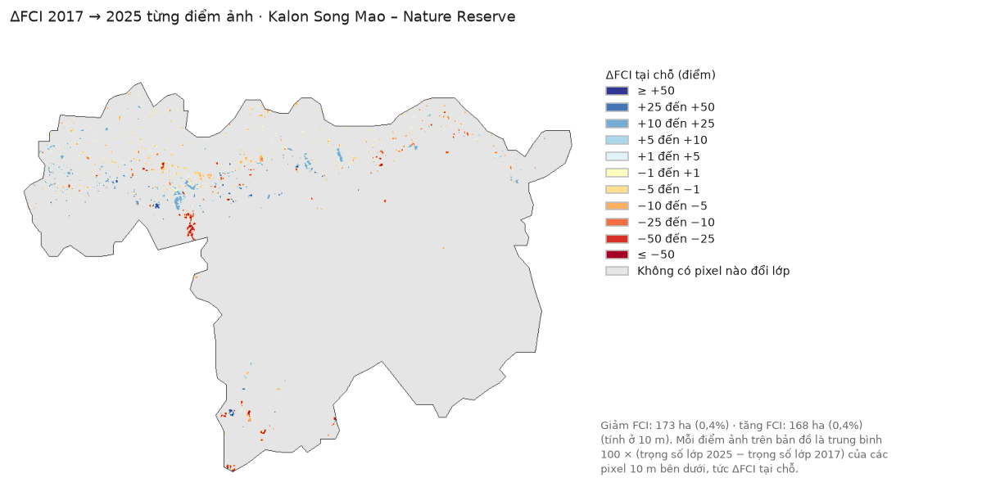
Các chuyển đổi lớp lớn nhất 2017 → 2025
| Từ lớp | Sang lớp | Diện tích (ha) | % diện tích |
|---|---|---|---|
| Đất khác (không phải rừng) | Rừng trồng thâm canh (luân kỳ ≤ 40 năm) | 111 | 0,26% |
| Cây công nghiệp và nông lâm kết hợp | Đất khác (không phải rừng) | 73 | 0,17% |
| Rừng tái sinh tự nhiên | Đất khác (không phải rừng) | 70 | 0,16% |
| Đất khác (không phải rừng) | Rừng tái sinh tự nhiên | 47 | 0,11% |
| Rừng trồng thâm canh (luân kỳ ≤ 40 năm) | Đất khác (không phải rừng) | 21 | 0,05% |
| Cây công nghiệp và nông lâm kết hợp | Rừng trồng thâm canh (luân kỳ ≤ 40 năm) | 5 | 0,01% |
| Đất khác (không phải rừng) | Cây công nghiệp và nông lâm kết hợp | 4 | 0,01% |
| Rừng nguyên sinh – trưởng thành | Rừng tái sinh tự nhiên | 3 | 0,01% |
Bảng số liệu (ha)
| Năm | Rừng nguyên sinh – trưởng thành | Rừng nguyên sinh – đang phục hồi | Rừng tái sinh tự nhiên | Rừng trồng thâm canh (luân kỳ ≤ 40 năm) | Cây công nghiệp và nông lâm kết hợp | Tổng |
|---|---|---|---|---|---|---|
| 2017 | 7.660 | 0 | 24.328 | 2.260 | 4.283 | 38.531 |
| 2018 | 7.660 | 0 | 24.307 | 2.263 | 4.287 | 38.518 |
| 2019 | 7.659 | 0 | 24.308 | 2.278 | 4.298 | 38.543 |
| 2020 | 7.657 | 1 | 24.317 | 2.287 | 4.293 | 38.555 |
| 2021 | 7.657 | 1 | 24.318 | 2.309 | 4.265 | 38.550 |
| 2022 | 7.657 | 1 | 24.331 | 2.336 | 4.244 | 38.567 |
| 2023 | 7.657 | 1 | 24.324 | 2.343 | 4.241 | 38.565 |
| 2024 | 7.656 | 1 | 24.310 | 2.350 | 4.212 | 38.528 |
| 2025 | 7.656 | 1 | 24.305 | 2.356 | 4.211 | 38.529 |
15. Kon Ka Kinh
Các chuyển đổi lớp lớn nhất 2017 → 2025
| Từ lớp | Sang lớp | Diện tích (ha) | % diện tích |
|---|---|---|---|
| Rừng tái sinh tự nhiên | Đất khác (không phải rừng) | 125 | 0,30% |
| Đất khác (không phải rừng) | Rừng tái sinh tự nhiên | 40 | 0,10% |
| Rừng trồng thâm canh (luân kỳ ≤ 40 năm) | Đất khác (không phải rừng) | 3 | 0,01% |
| Cây công nghiệp và nông lâm kết hợp | Đất khác (không phải rừng) | 2 | 0,01% |
| Rừng nguyên sinh – trưởng thành | Rừng nguyên sinh – đang phục hồi | 2 | 0,01% |
| Đất khác (không phải rừng) | Rừng trồng thâm canh (luân kỳ ≤ 40 năm) | 1 | 0,00% |
| Rừng nguyên sinh – trưởng thành | Rừng tái sinh tự nhiên | 1 | 0,00% |
| Đất khác (không phải rừng) | Cây công nghiệp và nông lâm kết hợp | 0 | 0,00% |
Bảng số liệu (ha)
| Năm | Rừng nguyên sinh – trưởng thành | Rừng nguyên sinh – đang phục hồi | Rừng tái sinh tự nhiên | Rừng trồng thâm canh (luân kỳ ≤ 40 năm) | Cây công nghiệp và nông lâm kết hợp | Tổng |
|---|---|---|---|---|---|---|
| 2017 | 31.448 | 0 | 9.001 | 122 | 100 | 40.670 |
| 2018 | 31.448 | 0 | 8.979 | 121 | 100 | 40.648 |
| 2019 | 31.448 | 0 | 8.941 | 120 | 100 | 40.609 |
| 2020 | 31.447 | 0 | 8.898 | 120 | 101 | 40.566 |
| 2021 | 31.446 | 0 | 8.886 | 119 | 101 | 40.553 |
| 2022 | 31.446 | 1 | 8.900 | 120 | 100 | 40.566 |
| 2023 | 31.446 | 1 | 8.914 | 120 | 99 | 40.580 |
| 2024 | 31.444 | 2 | 8.919 | 121 | 98 | 40.585 |
| 2025 | 31.444 | 2 | 8.917 | 120 | 98 | 40.582 |
16. Pù Huống
Các chuyển đổi lớp lớn nhất 2017 → 2025
| Từ lớp | Sang lớp | Diện tích (ha) | % diện tích |
|---|---|---|---|
| Đất khác (không phải rừng) | Rừng tái sinh tự nhiên | 60 | 0,14% |
| Rừng tái sinh tự nhiên | Đất khác (không phải rừng) | 18 | 0,04% |
| Rừng nguyên sinh – trưởng thành | Rừng tái sinh tự nhiên | 6 | 0,01% |
| Rừng tái sinh tự nhiên | Rừng trồng thâm canh (luân kỳ ≤ 40 năm) | 2 | 0,00% |
| Đất khác (không phải rừng) | Rừng trồng thâm canh (luân kỳ ≤ 40 năm) | 1 | 0,00% |
| Rừng nguyên sinh – trưởng thành | Đất khác (không phải rừng) | 0 | 0,00% |
| Rừng trồng thâm canh (luân kỳ ≤ 40 năm) | Đất khác (không phải rừng) | 0 | 0,00% |
Bảng số liệu (ha)
| Năm | Rừng nguyên sinh – trưởng thành | Rừng tái sinh tự nhiên | Rừng trồng thâm canh (luân kỳ ≤ 40 năm) | Cây công nghiệp và nông lâm kết hợp | Tổng |
|---|---|---|---|---|---|
| 2017 | 30.115 | 11.369 | 1 | 0 | 41.484 |
| 2018 | 30.115 | 11.366 | 1 | 0 | 41.481 |
| 2019 | 30.115 | 11.386 | 1 | 0 | 41.502 |
| 2020 | 30.113 | 11.401 | 2 | 0 | 41.516 |
| 2021 | 30.110 | 11.412 | 1 | 0 | 41.523 |
| 2022 | 30.109 | 11.412 | 2 | 0 | 41.523 |
| 2023 | 30.109 | 11.411 | 2 | 0 | 41.522 |
| 2024 | 30.109 | 11.418 | 4 | 0 | 41.530 |
| 2025 | 30.109 | 11.415 | 4 | 0 | 41.527 |
17. Phong Điền
Các chuyển đổi lớp lớn nhất 2017 → 2025
| Từ lớp | Sang lớp | Diện tích (ha) | % diện tích |
|---|---|---|---|
| Đất khác (không phải rừng) | Rừng tái sinh tự nhiên | 89 | 0,22% |
| Rừng trồng thâm canh (luân kỳ ≤ 40 năm) | Đất khác (không phải rừng) | 71 | 0,17% |
| Rừng tái sinh tự nhiên | Đất khác (không phải rừng) | 70 | 0,17% |
| Rừng trồng thâm canh (luân kỳ ≤ 40 năm) | Rừng tái sinh tự nhiên | 19 | 0,05% |
| Đất khác (không phải rừng) | Rừng trồng thâm canh (luân kỳ ≤ 40 năm) | 15 | 0,04% |
| Rừng nguyên sinh – trưởng thành | Đất khác (không phải rừng) | 3 | 0,01% |
| Rừng nguyên sinh – trưởng thành | Rừng nguyên sinh – đang phục hồi | 1 | 0,00% |
| Rừng trồng thâm canh (luân kỳ ≤ 40 năm) | Cây công nghiệp và nông lâm kết hợp | 1 | 0,00% |
Bảng số liệu (ha)
| Năm | Rừng nguyên sinh – trưởng thành | Rừng nguyên sinh – đang phục hồi | Rừng tái sinh tự nhiên | Rừng trồng thâm canh (luân kỳ ≤ 40 năm) | Cây công nghiệp và nông lâm kết hợp | Tổng |
|---|---|---|---|---|---|---|
| 2017 | 30.965 | 0 | 8.595 | 613 | 25 | 40.198 |
| 2018 | 30.964 | 0 | 8.591 | 624 | 25 | 40.204 |
| 2019 | 30.964 | 0 | 8.607 | 617 | 26 | 40.213 |
| 2020 | 30.964 | 0 | 8.585 | 561 | 25 | 40.135 |
| 2021 | 30.961 | 1 | 8.564 | 521 | 25 | 40.072 |
| 2022 | 30.960 | 1 | 8.576 | 512 | 26 | 40.076 |
| 2023 | 30.960 | 1 | 8.611 | 512 | 27 | 40.110 |
| 2024 | 30.960 | 1 | 8.631 | 520 | 27 | 40.139 |
| 2025 | 30.960 | 1 | 8.632 | 538 | 26 | 40.158 |
18. Đăkrông
Các chuyển đổi lớp lớn nhất 2017 → 2025
| Từ lớp | Sang lớp | Diện tích (ha) | % diện tích |
|---|---|---|---|
| Đất khác (không phải rừng) | Rừng tái sinh tự nhiên | 221 | 0,57% |
| Rừng tái sinh tự nhiên | Đất khác (không phải rừng) | 210 | 0,55% |
| Đất khác (không phải rừng) | Rừng trồng thâm canh (luân kỳ ≤ 40 năm) | 117 | 0,30% |
| Rừng trồng thâm canh (luân kỳ ≤ 40 năm) | Đất khác (không phải rừng) | 61 | 0,16% |
| Rừng trồng thâm canh (luân kỳ ≤ 40 năm) | Rừng tái sinh tự nhiên | 22 | 0,06% |
| Rừng tái sinh tự nhiên | Rừng trồng thâm canh (luân kỳ ≤ 40 năm) | 7 | 0,02% |
| Rừng nguyên sinh – trưởng thành | Rừng tái sinh tự nhiên | 3 | 0,01% |
| Rừng nguyên sinh – trưởng thành | Rừng nguyên sinh – đang phục hồi | 3 | 0,01% |
Bảng số liệu (ha)
| Năm | Rừng nguyên sinh – trưởng thành | Rừng nguyên sinh – đang phục hồi | Rừng tái sinh tự nhiên | Rừng trồng thâm canh (luân kỳ ≤ 40 năm) | Cây công nghiệp và nông lâm kết hợp | Tổng |
|---|---|---|---|---|---|---|
| 2017 | 26.654 | 0 | 10.477 | 394 | 2 | 37.527 |
| 2018 | 26.652 | 0 | 10.460 | 419 | 2 | 37.534 |
| 2019 | 26.652 | 0 | 10.441 | 415 | 3 | 37.511 |
| 2020 | 26.651 | 0 | 10.407 | 384 | 3 | 37.445 |
| 2021 | 26.646 | 2 | 10.464 | 373 | 3 | 37.489 |
| 2022 | 26.645 | 3 | 10.541 | 385 | 3 | 37.576 |
| 2023 | 26.645 | 3 | 10.539 | 399 | 2 | 37.589 |
| 2024 | 26.645 | 3 | 10.486 | 419 | 2 | 37.555 |
| 2025 | 26.645 | 3 | 10.506 | 435 | 2 | 37.592 |
19. Khu Bảo tồn loài Sao La Thừa Thiên Huế
Các chuyển đổi lớp lớn nhất 2017 → 2025
| Từ lớp | Sang lớp | Diện tích (ha) | % diện tích |
|---|---|---|---|
| Rừng tái sinh tự nhiên | Đất khác (không phải rừng) | 142 | 0,38% |
| Rừng trồng thâm canh (luân kỳ ≤ 40 năm) | Đất khác (không phải rừng) | 121 | 0,32% |
| Đất khác (không phải rừng) | Rừng tái sinh tự nhiên | 121 | 0,32% |
| Đất khác (không phải rừng) | Rừng trồng thâm canh (luân kỳ ≤ 40 năm) | 120 | 0,32% |
| Rừng tái sinh tự nhiên | Rừng trồng thâm canh (luân kỳ ≤ 40 năm) | 14 | 0,04% |
| Rừng trồng thâm canh (luân kỳ ≤ 40 năm) | Rừng tái sinh tự nhiên | 13 | 0,03% |
| Rừng nguyên sinh – trưởng thành | Rừng tái sinh tự nhiên | 3 | 0,01% |
| Rừng nguyên sinh – trưởng thành | Đất khác (không phải rừng) | 2 | 0,01% |
Bảng số liệu (ha)
| Năm | Rừng nguyên sinh – trưởng thành | Rừng nguyên sinh – đang phục hồi | Rừng tái sinh tự nhiên | Rừng trồng thâm canh (luân kỳ ≤ 40 năm) | Cây công nghiệp và nông lâm kết hợp | Tổng |
|---|---|---|---|---|---|---|
| 2017 | 30.783 | 0 | 5.516 | 412 | 15 | 36.725 |
| 2018 | 30.783 | 0 | 5.493 | 392 | 15 | 36.683 |
| 2019 | 30.783 | 0 | 5.488 | 361 | 15 | 36.647 |
| 2020 | 30.782 | 0 | 5.479 | 324 | 15 | 36.600 |
| 2021 | 30.779 | 1 | 5.490 | 321 | 15 | 36.606 |
| 2022 | 30.778 | 1 | 5.530 | 323 | 15 | 36.646 |
| 2023 | 30.777 | 1 | 5.522 | 304 | 15 | 36.620 |
| 2024 | 30.777 | 1 | 5.492 | 342 | 15 | 36.627 |
| 2025 | 30.777 | 1 | 5.496 | 412 | 15 | 36.701 |
20. Bạch Mã
Các chuyển đổi lớp lớn nhất 2017 → 2025
| Từ lớp | Sang lớp | Diện tích (ha) | % diện tích |
|---|---|---|---|
| Đất khác (không phải rừng) | Rừng tái sinh tự nhiên | 38 | 0,10% |
| Rừng tái sinh tự nhiên | Đất khác (không phải rừng) | 25 | 0,07% |
| Đất khác (không phải rừng) | Rừng trồng thâm canh (luân kỳ ≤ 40 năm) | 18 | 0,05% |
| Rừng nguyên sinh – trưởng thành | Đất khác (không phải rừng) | 9 | 0,03% |
| Rừng trồng thâm canh (luân kỳ ≤ 40 năm) | Đất khác (không phải rừng) | 8 | 0,02% |
| Rừng trồng thâm canh (luân kỳ ≤ 40 năm) | Rừng tái sinh tự nhiên | 4 | 0,01% |
| Rừng nguyên sinh – trưởng thành | Rừng nguyên sinh – đang phục hồi | 2 | 0,01% |
| Cây công nghiệp và nông lâm kết hợp | Đất khác (không phải rừng) | 0 | 0,00% |
Bảng số liệu (ha)
| Năm | Rừng nguyên sinh – trưởng thành | Rừng nguyên sinh – đang phục hồi | Rừng tái sinh tự nhiên | Rừng trồng thâm canh (luân kỳ ≤ 40 năm) | Cây công nghiệp và nông lâm kết hợp | Tổng |
|---|---|---|---|---|---|---|
| 2017 | 29.518 | 0 | 7.212 | 20 | 10 | 36.759 |
| 2018 | 29.518 | 0 | 7.209 | 15 | 10 | 36.751 |
| 2019 | 29.518 | 0 | 7.210 | 19 | 11 | 36.758 |
| 2020 | 29.518 | 0 | 7.219 | 24 | 11 | 36.772 |
| 2021 | 29.515 | 0 | 7.219 | 27 | 11 | 36.773 |
| 2022 | 29.511 | 1 | 7.227 | 27 | 11 | 36.777 |
| 2023 | 29.509 | 1 | 7.231 | 27 | 11 | 36.780 |
| 2024 | 29.507 | 2 | 7.239 | 29 | 10 | 36.787 |
| 2025 | 29.506 | 2 | 7.229 | 25 | 10 | 36.773 |
21. Pù Hu
Các chuyển đổi lớp lớn nhất 2017 → 2025
| Từ lớp | Sang lớp | Diện tích (ha) | % diện tích |
|---|---|---|---|
| Rừng tái sinh tự nhiên | Đất khác (không phải rừng) | 36 | 0,15% |
| Rừng nguyên sinh – trưởng thành | Rừng tái sinh tự nhiên | 15 | 0,06% |
| Đất khác (không phải rừng) | Rừng tái sinh tự nhiên | 13 | 0,05% |
| Rừng nguyên sinh – trưởng thành | Đất khác (không phải rừng) | 7 | 0,03% |
| Cây công nghiệp và nông lâm kết hợp | Đất khác (không phải rừng) | 0 | 0,00% |
| Rừng tái sinh tự nhiên | Cây công nghiệp và nông lâm kết hợp | 0 | 0,00% |
| Đất khác (không phải rừng) | Cây công nghiệp và nông lâm kết hợp | 0 | 0,00% |
Bảng số liệu (ha)
| Năm | Rừng nguyên sinh – trưởng thành | Rừng tái sinh tự nhiên | Cây công nghiệp và nông lâm kết hợp | Tổng |
|---|---|---|---|---|
| 2017 | 12.476 | 11.354 | 10 | 23.840 |
| 2018 | 12.476 | 11.347 | 10 | 23.833 |
| 2019 | 12.476 | 11.342 | 9 | 23.827 |
| 2020 | 12.474 | 11.338 | 9 | 23.821 |
| 2021 | 12.473 | 11.337 | 9 | 23.819 |
| 2022 | 12.461 | 11.346 | 9 | 23.817 |
| 2023 | 12.457 | 11.349 | 9 | 23.815 |
| 2024 | 12.455 | 11.345 | 9 | 23.809 |
| 2025 | 12.454 | 11.346 | 9 | 23.810 |
22. Na Hang
Các chuyển đổi lớp lớn nhất 2017 → 2025
| Từ lớp | Sang lớp | Diện tích (ha) | % diện tích |
|---|---|---|---|
| Rừng tái sinh tự nhiên | Đất khác (không phải rừng) | 55 | 0,23% |
| Rừng tái sinh tự nhiên | Rừng trồng thâm canh (luân kỳ ≤ 40 năm) | 26 | 0,11% |
| Đất khác (không phải rừng) | Rừng trồng thâm canh (luân kỳ ≤ 40 năm) | 15 | 0,06% |
| Đất khác (không phải rừng) | Rừng tái sinh tự nhiên | 14 | 0,06% |
| Rừng trồng thâm canh (luân kỳ ≤ 40 năm) | Đất khác (không phải rừng) | 9 | 0,04% |
| Rừng nguyên sinh – trưởng thành | Rừng nguyên sinh – đang phục hồi | 1 | 0,00% |
| Rừng nguyên sinh – trưởng thành | Rừng tái sinh tự nhiên | 1 | 0,00% |
| Cây công nghiệp và nông lâm kết hợp | Đất khác (không phải rừng) | 1 | 0,00% |
Bảng số liệu (ha)
| Năm | Rừng nguyên sinh – trưởng thành | Rừng nguyên sinh – đang phục hồi | Rừng tái sinh tự nhiên | Rừng trồng thâm canh (luân kỳ ≤ 40 năm) | Cây công nghiệp và nông lâm kết hợp | Tổng |
|---|---|---|---|---|---|---|
| 2017 | 12.639 | 0 | 9.722 | 105 | 13 | 22.478 |
| 2018 | 12.639 | 0 | 9.718 | 106 | 13 | 22.476 |
| 2019 | 12.638 | 0 | 9.715 | 108 | 14 | 22.475 |
| 2020 | 12.638 | 0 | 9.703 | 116 | 14 | 22.472 |
| 2021 | 12.638 | 0 | 9.679 | 118 | 13 | 22.448 |
| 2022 | 12.638 | 0 | 9.664 | 124 | 13 | 22.438 |
| 2023 | 12.638 | 0 | 9.655 | 128 | 13 | 22.435 |
| 2024 | 12.637 | 1 | 9.656 | 135 | 14 | 22.442 |
| 2025 | 12.637 | 1 | 9.655 | 137 | 13 | 22.442 |
23. Kẻ Gỗ
Các chuyển đổi lớp lớn nhất 2017 → 2025
| Từ lớp | Sang lớp | Diện tích (ha) | % diện tích |
|---|---|---|---|
| Đất khác (không phải rừng) | Rừng trồng thâm canh (luân kỳ ≤ 40 năm) | 169 | 0,71% |
| Cây công nghiệp và nông lâm kết hợp | Đất khác (không phải rừng) | 46 | 0,19% |
| Rừng tái sinh tự nhiên | Đất khác (không phải rừng) | 35 | 0,15% |
| Rừng tái sinh tự nhiên | Cây công nghiệp và nông lâm kết hợp | 34 | 0,14% |
| Rừng trồng thâm canh (luân kỳ ≤ 40 năm) | Đất khác (không phải rừng) | 22 | 0,09% |
| Đất khác (không phải rừng) | Cây công nghiệp và nông lâm kết hợp | 18 | 0,08% |
| Rừng nguyên sinh – trưởng thành | Rừng tái sinh tự nhiên | 9 | 0,04% |
| Đất khác (không phải rừng) | Rừng tái sinh tự nhiên | 9 | 0,04% |
Bảng số liệu (ha)
| Năm | Rừng nguyên sinh – trưởng thành | Rừng tái sinh tự nhiên | Rừng trồng thâm canh (luân kỳ ≤ 40 năm) | Cây công nghiệp và nông lâm kết hợp | Tổng |
|---|---|---|---|---|---|
| 2017 | 13.301 | 4.702 | 76 | 4.556 | 22.635 |
| 2018 | 13.298 | 4.702 | 72 | 4.563 | 22.635 |
| 2019 | 13.291 | 4.639 | 61 | 4.547 | 22.538 |
| 2020 | 13.291 | 4.633 | 53 | 4.530 | 22.507 |
| 2021 | 13.291 | 4.646 | 64 | 4.564 | 22.564 |
| 2022 | 13.291 | 4.664 | 121 | 4.559 | 22.636 |
| 2023 | 13.291 | 4.665 | 145 | 4.559 | 22.660 |
| 2024 | 13.291 | 4.657 | 201 | 4.552 | 22.700 |
| 2025 | 13.291 | 4.651 | 224 | 4.561 | 22.727 |
24. Bắc Hướng Hóa
Các chuyển đổi lớp lớn nhất 2017 → 2025
| Từ lớp | Sang lớp | Diện tích (ha) | % diện tích |
|---|---|---|---|
| Rừng tái sinh tự nhiên | Đất khác (không phải rừng) | 175 | 0,75% |
| Rừng nguyên sinh – trưởng thành | Đất khác (không phải rừng) | 59 | 0,25% |
| Rừng nguyên sinh – trưởng thành | Rừng tái sinh tự nhiên | 46 | 0,20% |
| Đất khác (không phải rừng) | Rừng tái sinh tự nhiên | 46 | 0,20% |
| Rừng nguyên sinh – trưởng thành | Rừng nguyên sinh – đang phục hồi | 14 | 0,06% |
| Đất khác (không phải rừng) | Rừng trồng thâm canh (luân kỳ ≤ 40 năm) | 2 | 0,01% |
| Rừng tái sinh tự nhiên | Rừng trồng thâm canh (luân kỳ ≤ 40 năm) | 0 | 0,00% |
| Rừng tái sinh tự nhiên | Cây công nghiệp và nông lâm kết hợp | 0 | 0,00% |
Bảng số liệu (ha)
| Năm | Rừng nguyên sinh – trưởng thành | Rừng nguyên sinh – đang phục hồi | Rừng tái sinh tự nhiên | Rừng trồng thâm canh (luân kỳ ≤ 40 năm) | Cây công nghiệp và nông lâm kết hợp | Tổng |
|---|---|---|---|---|---|---|
| 2017 | 16.794 | 0 | 6.185 | 0 | 0 | 22.979 |
| 2018 | 16.793 | 0 | 6.165 | 0 | 0 | 22.958 |
| 2019 | 16.791 | 0 | 6.116 | 0 | 0 | 22.906 |
| 2020 | 16.779 | 0 | 6.078 | 0 | 0 | 22.858 |
| 2021 | 16.696 | 5 | 5.987 | 0 | 0 | 22.689 |
| 2022 | 16.677 | 14 | 6.041 | 1 | 0 | 22.733 |
| 2023 | 16.675 | 13 | 6.083 | 2 | 0 | 22.774 |
| 2024 | 16.675 | 14 | 6.111 | 2 | 0 | 22.802 |
| 2025 | 16.675 | 14 | 6.103 | 2 | 0 | 22.794 |
25. Cúc Phương
Các chuyển đổi lớp lớn nhất 2017 → 2025
| Từ lớp | Sang lớp | Diện tích (ha) | % diện tích |
|---|---|---|---|
| Đất khác (không phải rừng) | Rừng trồng thâm canh (luân kỳ ≤ 40 năm) | 50 | 0,22% |
| Đất khác (không phải rừng) | Rừng tái sinh tự nhiên | 9 | 0,04% |
| Rừng trồng thâm canh (luân kỳ ≤ 40 năm) | Đất khác (không phải rừng) | 8 | 0,03% |
| Đất khác (không phải rừng) | Cây công nghiệp và nông lâm kết hợp | 6 | 0,03% |
| Rừng tái sinh tự nhiên | Đất khác (không phải rừng) | 5 | 0,02% |
| Rừng tái sinh tự nhiên | Rừng trồng thâm canh (luân kỳ ≤ 40 năm) | 1 | 0,01% |
| Cây công nghiệp và nông lâm kết hợp | Đất khác (không phải rừng) | 1 | 0,00% |
| Rừng trồng thâm canh (luân kỳ ≤ 40 năm) | Rừng tái sinh tự nhiên | 1 | 0,00% |
Bảng số liệu (ha)
| Năm | Rừng nguyên sinh – trưởng thành | Rừng tái sinh tự nhiên | Rừng trồng thâm canh (luân kỳ ≤ 40 năm) | Cây công nghiệp và nông lâm kết hợp | Tổng |
|---|---|---|---|---|---|
| 2017 | 12.653 | 8.606 | 69 | 47 | 21.375 |
| 2018 | 12.653 | 8.608 | 70 | 47 | 21.378 |
| 2019 | 12.653 | 8.610 | 73 | 47 | 21.384 |
| 2020 | 12.653 | 8.613 | 75 | 51 | 21.392 |
| 2021 | 12.653 | 8.616 | 105 | 65 | 21.440 |
| 2022 | 12.653 | 8.622 | 123 | 64 | 21.462 |
| 2023 | 12.653 | 8.619 | 126 | 58 | 21.456 |
| 2024 | 12.653 | 8.612 | 116 | 50 | 21.431 |
| 2025 | 12.653 | 8.610 | 111 | 52 | 21.426 |
26. Hoàng Liên-Văn Bàn
Các chuyển đổi lớp lớn nhất 2017 → 2025
| Từ lớp | Sang lớp | Diện tích (ha) | % diện tích |
|---|---|---|---|
| Rừng tái sinh tự nhiên | Đất khác (không phải rừng) | 11 | 0,05% |
| Rừng nguyên sinh – trưởng thành | Đất khác (không phải rừng) | 3 | 0,01% |
| Đất khác (không phải rừng) | Rừng tái sinh tự nhiên | 2 | 0,01% |
| Rừng nguyên sinh – trưởng thành | Rừng tái sinh tự nhiên | 2 | 0,01% |
| Rừng nguyên sinh – trưởng thành | Rừng nguyên sinh – đang phục hồi | 0 | 0,00% |
Bảng số liệu (ha)
| Năm | Rừng nguyên sinh – trưởng thành | Rừng nguyên sinh – đang phục hồi | Rừng tái sinh tự nhiên | Tổng |
|---|---|---|---|---|
| 2017 | 17.215 | 0 | 3.392 | 20.607 |
| 2018 | 17.213 | 0 | 3.392 | 20.605 |
| 2019 | 17.213 | 0 | 3.393 | 20.605 |
| 2020 | 17.212 | 0 | 3.394 | 20.606 |
| 2021 | 17.212 | 0 | 3.391 | 20.603 |
| 2022 | 17.212 | 0 | 3.387 | 20.599 |
| 2023 | 17.212 | 0 | 3.387 | 20.599 |
| 2024 | 17.211 | 0 | 3.386 | 20.597 |
| 2025 | 17.210 | 0 | 3.385 | 20.595 |
27. Vườn quốc gia Phước Bình
Các chuyển đổi lớp lớn nhất 2017 → 2025
| Từ lớp | Sang lớp | Diện tích (ha) | % diện tích |
|---|---|---|---|
| Đất khác (không phải rừng) | Rừng tái sinh tự nhiên | 24 | 0,11% |
| Rừng tái sinh tự nhiên | Đất khác (không phải rừng) | 21 | 0,10% |
| Cây công nghiệp và nông lâm kết hợp | Đất khác (không phải rừng) | 10 | 0,05% |
| Rừng trồng thâm canh (luân kỳ ≤ 40 năm) | Rừng tái sinh tự nhiên | 1 | 0,01% |
| Đất khác (không phải rừng) | Cây công nghiệp và nông lâm kết hợp | 1 | 0,01% |
| Rừng tái sinh tự nhiên | Cây công nghiệp và nông lâm kết hợp | 0 | 0,00% |
| Rừng nguyên sinh – trưởng thành | Đất khác (không phải rừng) | 0 | 0,00% |
| Rừng nguyên sinh – trưởng thành | Rừng nguyên sinh – đang phục hồi | 0 | 0,00% |
Bảng số liệu (ha)
| Năm | Rừng nguyên sinh – trưởng thành | Rừng nguyên sinh – đang phục hồi | Rừng tái sinh tự nhiên | Rừng trồng thâm canh (luân kỳ ≤ 40 năm) | Cây công nghiệp và nông lâm kết hợp | Tổng |
|---|---|---|---|---|---|---|
| 2017 | 10.541 | 0 | 7.992 | 733 | 218 | 19.484 |
| 2018 | 10.541 | 0 | 7.991 | 733 | 219 | 19.483 |
| 2019 | 10.541 | 0 | 7.994 | 733 | 221 | 19.488 |
| 2020 | 10.541 | 0 | 7.989 | 732 | 218 | 19.479 |
| 2021 | 10.540 | 0 | 7.987 | 732 | 216 | 19.475 |
| 2022 | 10.540 | 0 | 7.994 | 732 | 215 | 19.481 |
| 2023 | 10.540 | 0 | 8.002 | 732 | 212 | 19.485 |
| 2024 | 10.540 | 0 | 7.999 | 732 | 209 | 19.480 |
| 2025 | 10.540 | 0 | 7.996 | 732 | 210 | 19.478 |
28. Khu Bảo vệ cảnh quan Đèo Cả - Hòn Nưa
Các chuyển đổi lớp lớn nhất 2017 → 2025
| Từ lớp | Sang lớp | Diện tích (ha) | % diện tích |
|---|---|---|---|
| Đất khác (không phải rừng) | Rừng tái sinh tự nhiên | 46 | 0,21% |
| Rừng tái sinh tự nhiên | Đất khác (không phải rừng) | 28 | 0,13% |
| Rừng nguyên sinh – trưởng thành | Rừng tái sinh tự nhiên | 4 | 0,02% |
| Rừng trồng thâm canh (luân kỳ ≤ 40 năm) | Rừng tái sinh tự nhiên | 3 | 0,01% |
| Đất khác (không phải rừng) | Rừng trồng thâm canh (luân kỳ ≤ 40 năm) | 2 | 0,01% |
| Đất khác (không phải rừng) | Cây công nghiệp và nông lâm kết hợp | 1 | 0,00% |
| Rừng trồng thâm canh (luân kỳ ≤ 40 năm) | Đất khác (không phải rừng) | 0 | 0,00% |
| Rừng nguyên sinh – trưởng thành | Rừng nguyên sinh – đang phục hồi | 0 | 0,00% |
Bảng số liệu (ha)
| Năm | Rừng nguyên sinh – trưởng thành | Rừng nguyên sinh – đang phục hồi | Rừng tái sinh tự nhiên | Rừng trồng thâm canh (luân kỳ ≤ 40 năm) | Cây công nghiệp và nông lâm kết hợp | Tổng |
|---|---|---|---|---|---|---|
| 2017 | 8.319 | 0 | 10.392 | 13 | 9 | 18.733 |
| 2018 | 8.319 | 0 | 10.376 | 10 | 9 | 18.714 |
| 2019 | 8.319 | 0 | 10.368 | 6 | 9 | 18.702 |
| 2020 | 8.317 | 0 | 10.365 | 7 | 10 | 18.699 |
| 2021 | 8.316 | 0 | 10.368 | 9 | 9 | 18.703 |
| 2022 | 8.316 | 0 | 10.389 | 10 | 10 | 18.725 |
| 2023 | 8.316 | 0 | 10.407 | 10 | 9 | 18.742 |
| 2024 | 8.316 | 0 | 10.416 | 10 | 9 | 18.751 |
| 2025 | 8.316 | 0 | 10.416 | 11 | 9 | 18.753 |
29. Hòn Bà
Các chuyển đổi lớp lớn nhất 2017 → 2025
| Từ lớp | Sang lớp | Diện tích (ha) | % diện tích |
|---|---|---|---|
| Rừng trồng thâm canh (luân kỳ ≤ 40 năm) | Đất khác (không phải rừng) | 89 | 0,45% |
| Rừng tái sinh tự nhiên | Đất khác (không phải rừng) | 52 | 0,26% |
| Đất khác (không phải rừng) | Rừng tái sinh tự nhiên | 27 | 0,14% |
| Đất khác (không phải rừng) | Rừng trồng thâm canh (luân kỳ ≤ 40 năm) | 16 | 0,08% |
| Rừng nguyên sinh – trưởng thành | Đất khác (không phải rừng) | 4 | 0,02% |
| Cây công nghiệp và nông lâm kết hợp | Đất khác (không phải rừng) | 3 | 0,02% |
| Rừng trồng thâm canh (luân kỳ ≤ 40 năm) | Cây công nghiệp và nông lâm kết hợp | 3 | 0,01% |
| Rừng trồng thâm canh (luân kỳ ≤ 40 năm) | Rừng tái sinh tự nhiên | 2 | 0,01% |
Bảng số liệu (ha)
| Năm | Rừng nguyên sinh – trưởng thành | Rừng tái sinh tự nhiên | Rừng trồng thâm canh (luân kỳ ≤ 40 năm) | Cây công nghiệp và nông lâm kết hợp | Tổng |
|---|---|---|---|---|---|
| 2017 | 14.467 | 4.675 | 144 | 43 | 19.328 |
| 2018 | 14.467 | 4.672 | 140 | 43 | 19.321 |
| 2019 | 14.466 | 4.658 | 129 | 44 | 19.296 |
| 2020 | 14.466 | 4.644 | 125 | 44 | 19.279 |
| 2021 | 14.465 | 4.653 | 125 | 44 | 19.288 |
| 2022 | 14.465 | 4.667 | 110 | 47 | 19.290 |
| 2023 | 14.465 | 4.670 | 77 | 48 | 19.259 |
| 2024 | 14.464 | 4.654 | 65 | 44 | 19.227 |
| 2025 | 14.463 | 4.652 | 67 | 44 | 19.225 |
30. Ngọc Linh (Quang Nam)
Các chuyển đổi lớp lớn nhất 2017 → 2025
| Từ lớp | Sang lớp | Diện tích (ha) | % diện tích |
|---|---|---|---|
| Đất khác (không phải rừng) | Rừng tái sinh tự nhiên | 100 | 0,52% |
| Rừng tái sinh tự nhiên | Đất khác (không phải rừng) | 78 | 0,41% |
| Rừng nguyên sinh – trưởng thành | Rừng tái sinh tự nhiên | 5 | 0,03% |
| Rừng nguyên sinh – trưởng thành | Đất khác (không phải rừng) | 4 | 0,02% |
| Rừng trồng thâm canh (luân kỳ ≤ 40 năm) | Đất khác (không phải rừng) | 2 | 0,01% |
| Rừng nguyên sinh – trưởng thành | Rừng nguyên sinh – đang phục hồi | 2 | 0,01% |
| Rừng tái sinh tự nhiên | Rừng trồng thâm canh (luân kỳ ≤ 40 năm) | 2 | 0,01% |
| Rừng trồng thâm canh (luân kỳ ≤ 40 năm) | Rừng tái sinh tự nhiên | 2 | 0,01% |
Bảng số liệu (ha)
| Năm | Rừng nguyên sinh – trưởng thành | Rừng nguyên sinh – đang phục hồi | Rừng tái sinh tự nhiên | Rừng trồng thâm canh (luân kỳ ≤ 40 năm) | Cây công nghiệp và nông lâm kết hợp | Tổng |
|---|---|---|---|---|---|---|
| 2017 | 12.855 | 0 | 5.803 | 5 | 9 | 18.671 |
| 2018 | 12.854 | 0 | 5.767 | 4 | 9 | 18.634 |
| 2019 | 12.854 | 0 | 5.767 | 2 | 8 | 18.631 |
| 2020 | 12.852 | 0 | 5.778 | 2 | 8 | 18.640 |
| 2021 | 12.849 | 1 | 5.790 | 2 | 8 | 18.649 |
| 2022 | 12.844 | 2 | 5.812 | 4 | 8 | 18.671 |
| 2023 | 12.844 | 2 | 5.832 | 5 | 9 | 18.692 |
| 2024 | 12.844 | 2 | 5.845 | 5 | 8 | 18.704 |
| 2025 | 12.844 | 2 | 5.829 | 3 | 8 | 18.687 |
Mỹ: 30 khu bảo tồn
| # | Khu bảo tồn | Nhóm | Hạng diện tích | Loại | Diện tích đất (ha) | FCI 2017 | FCI 2025 | ΔFCI | ΔFCI/FCI 2017 | p MK | Kết luận | Rừng & cây 2025 | Rừng tự nhiên | Đổi lớp | Độ phân giải (m) |
|---|---|---|---|---|---|---|---|---|---|---|---|---|---|---|---|
| 1 | Wrangell-St. Elias | Lớn nhất | 1 | National Park | 3.216.813 | 9,7 | 9,6 | -0,04 | -0,43% | 0,005 | Ổn định / không rõ | 10% | -0,42% | 0,1% | 60 |
| 2 | Denali | Lớn nhất | 2 | National Park | 1.894.227 | 20,4 | 20,3 | -0,14 | -0,67% | 0,754 | Ổn định / không rõ | 21% | +0,28% | 1,3% | 60 |
| 3 | Katmai Bay | Lớn nhất | 3 | National Park | 1.465.529 | 17,8 | 17,8 | -0,00 | -0,02% | 1,000 | Ổn định / không rõ | 18% | +0,03% | 0,4% | 30 |
| 4 | Death Valley | Lớn nhất | 4 | National Park | 1.368.228 | 0,9 | 0,9 | -0,02 | – | 0,000 | Ổn định / không rõ | 1% | -1,59% | 0,0% | 30 |
| 5 | Glacier Bay | Lớn nhất | 5 | National Park | 1.099.580 | 24,6 | 24,5 | -0,06 | -0,25% | 0,009 | Ổn định / không rõ | 25% | -0,24% | 0,2% | 30 |
| 6 | Yellowstone | Lớn nhất | 6 | National Park | 890.087 | 63,2 | 63,3 | +0,16 | +0,25% | 0,016 | Ổn định / không rõ | 64% | +0,30% | 0,8% | 30 |
| 7 | Kobuk Valley | Lớn nhất | 7 | National Park | 694.329 | 35,1 | 34,9 | -0,12 | -0,35% | 0,001 | Ổn định / không rõ | 35% | -0,24% | 0,5% | 20 |
| 8 | Grand Canyon | Lớn nhất | 8 | National Park | 476.656 | 14,9 | 14,4 | -0,52 | -3,48% | 0,000 | Ổn định / không rõ | 18% | -1,45% | 2,1% | 20 |
| 9 | Everglades | Lớn nhất | 9 | National Park | 411.444 | 15,7 | 15,6 | -0,04 | -0,23% | 0,251 | Ổn định / không rõ | 17% | +0,20% | 0,8% | 20 |
| 10 | Glacier | Lớn nhất | 10 | National Park | 407.859 | 49,3 | 49,4 | +0,05 | +0,09% | 0,175 | Ổn định / không rõ | 56% | +0,11% | 2,0% | 20 |
| 11 | Olympic | Lớn nhất | 11 | National Park | 367.639 | 84,8 | 84,6 | -0,14 | -0,17% | 0,000 | Ổn định / không rõ | 87% | -0,03% | 0,9% | 20 |
| 12 | Big Bend | Lớn nhất | 12 | National Park | 317.716 | 0,6 | 0,6 | -0,04 | – | 0,000 | Ổn định / không rõ | 1% | -8,23% | 0,1% | 20 |
| 13 | Joshua Tree | Lớn nhất | 13 | National Park | 317.420 | 0,0 | 0,0 | 0,00 | – | 1,000 | Ổn định / không rõ | 0% | – | 0,0% | 20 |
| 14 | Yosemite | Lớn nhất | 14 | National Park | 299.909 | 53,0 | 52,0 | -0,93 | -1,75% | 0,000 | Ổn định / không rõ | 55% | -1,17% | 2,8% | 20 |
| 15 | Kenai Fjords | Lớn nhất | 15 | National Park | 241.424 | 12,8 | 12,9 | +0,01 | +0,09% | 1,000 | Ổn định / không rõ | 13% | +0,09% | 0,1% | 20 |
| 16 | Great Smoky Mountains | Lớn nhất | 16 | National Park | 210.709 | 94,9 | 95,2 | +0,29 | +0,31% | 0,001 | Ổn định / không rõ | 99% | +0,45% | 0,6% | 20 |
| 17 | Isle Royale | Lớn nhất | 17 | National Park | 207.223 | 25,3 | 25,2 | -0,05 | -0,19% | 0,005 | Ổn định / không rõ | 34% | -0,17% | 0,3% | 20 |
| 18 | North Cascades | Lớn nhất | 18 | National Park | 202.847 | 58,4 | 57,7 | -0,68 | -1,16% | 0,001 | Ổn định / không rõ | 59% | -0,03% | 3,6% | 20 |
| 19 | Kings Canyon | Lớn nhất | 19 | National Park | 185.838 | 32,3 | 31,8 | -0,41 | -1,28% | 0,001 | Ổn định / không rõ | 33% | -0,77% | 1,5% | 10 |
| 20 | Sequoia | Lớn nhất | 20 | National Park | 164.570 | 48,0 | 45,5 | -2,53 | -5,27% | 0,001 | Suy giảm | 51% | -4,57% | 7,5% | 10 |
| 21 | Hawai'i Volcanoes | Cỡ vừa | 21 | National Park | 145.465 | 7,6 | 7,6 | -0,03 | -0,40% | 0,175 | Ổn định / không rõ | 9% | +0,05% | 0,2% | 10 |
| 22 | Canyonlands | Cỡ vừa | 22 | National Park | 135.377 | 0,2 | 0,2 | -0,00 | – | 0,005 | Ổn định / không rõ | 0% | -0,26% | 0,0% | 10 |
| 23 | Grand Teton | Cỡ vừa | 23 | National Park | 111.578 | 38,1 | 38,0 | -0,02 | -0,05% | 0,000 | Ổn định / không rõ | 39% | -0,03% | 0,1% | 10 |
| 24 | Rocky Mountain | Cỡ vừa | 24 | National Park | 107.438 | 58,7 | 57,1 | -1,51 | -2,57% | 0,000 | Suy giảm | 60% | -0,19% | 7,2% | 10 |
| 25 | Capitol Reef | Cỡ vừa | 25 | National Park | 98.796 | 1,7 | 1,7 | -0,00 | – | 0,001 | Ổn định / không rõ | 2% | -0,03% | 0,0% | 10 |
| 26 | Mount Rainier | Cỡ vừa | 26 | National Park | 95.665 | 68,7 | 68,7 | -0,01 | -0,02% | 0,000 | Ổn định / không rõ | 69% | -0,01% | 0,0% | 10 |
| 27 | Shenandoah | Cỡ vừa | 27 | National Park | 79.233 | 86,1 | 86,1 | +0,00 | +0,00% | 0,175 | Ổn định / không rõ | 100% | +0,01% | 0,1% | 10 |
| 28 | Crater Lake | Cỡ vừa | 28 | National Park | 74.074 | 80,7 | 80,2 | -0,58 | -0,72% | 0,000 | Ổn định / không rõ | 84% | -0,25% | 2,3% | 10 |
| 29 | Petrified Forest | Cỡ vừa | 29 | National Park | 59.989 | 0,0 | 0,0 | 0,00 | – | 1,000 | Ổn định / không rõ | 0% | – | 0,0% | 10 |
| 30 | White Sands | Cỡ vừa | 30 | National Park | 59.987 | 0,0 | 0,0 | 0,00 | – | 1,000 | Ổn định / không rõ | 0% | – | 0,0% | 10 |
1. Wrangell-St. Elias
Các chuyển đổi lớp lớn nhất 2017 → 2025
| Từ lớp | Sang lớp | Diện tích (ha) | % diện tích |
|---|---|---|---|
| Rừng nguyên sinh – trưởng thành | Đất khác (không phải rừng) | 2.568 | 0,08% |
| Đất khác (không phải rừng) | Rừng nguyên sinh – trưởng thành | 1.212 | 0,04% |
| Đất khác (không phải rừng) | Rừng nguyên sinh – đang phục hồi | 108 | 0,00% |
| Rừng nguyên sinh – trưởng thành | Rừng nguyên sinh – đang phục hồi | 75 | 0,00% |
| Rừng nguyên sinh – đang phục hồi | Đất khác (không phải rừng) | 62 | 0,00% |
| Rừng nguyên sinh – đang phục hồi | Rừng nguyên sinh – trưởng thành | 40 | 0,00% |
Bảng số liệu (ha)
| Năm | Rừng nguyên sinh – trưởng thành | Rừng nguyên sinh – đang phục hồi | Tổng |
|---|---|---|---|
| 2017 | 304.204 | 8.500 | 312.704 |
| 2018 | 303.904 | 8.453 | 312.357 |
| 2019 | 303.475 | 8.444 | 311.920 |
| 2020 | 303.221 | 8.439 | 311.660 |
| 2021 | 302.985 | 8.451 | 311.436 |
| 2022 | 302.686 | 8.468 | 311.154 |
| 2023 | 302.540 | 8.492 | 311.032 |
| 2024 | 302.588 | 8.532 | 311.120 |
| 2025 | 302.813 | 8.580 | 311.393 |
2. Denali
Các chuyển đổi lớp lớn nhất 2017 → 2025
| Từ lớp | Sang lớp | Diện tích (ha) | % diện tích |
|---|---|---|---|
| Rừng nguyên sinh – trưởng thành | Rừng nguyên sinh – đang phục hồi | 17.350 | 0,92% |
| Rừng nguyên sinh – trưởng thành | Đất khác (không phải rừng) | 3.226 | 0,17% |
| Đất khác (không phải rừng) | Rừng nguyên sinh – trưởng thành | 3.085 | 0,16% |
| Đất khác (không phải rừng) | Rừng nguyên sinh – đang phục hồi | 1.492 | 0,08% |
| Rừng nguyên sinh – đang phục hồi | Đất khác (không phải rừng) | 273 | 0,01% |
| Rừng nguyên sinh – đang phục hồi | Rừng nguyên sinh – trưởng thành | 122 | 0,01% |
Bảng số liệu (ha)
| Năm | Rừng nguyên sinh – trưởng thành | Rừng nguyên sinh – đang phục hồi | Tổng |
|---|---|---|---|
| 2017 | 379.473 | 9.441 | 388.914 |
| 2018 | 377.810 | 9.399 | 387.209 |
| 2019 | 368.998 | 17.303 | 386.302 |
| 2020 | 366.350 | 19.657 | 386.007 |
| 2021 | 366.095 | 19.924 | 386.019 |
| 2022 | 366.265 | 20.111 | 386.375 |
| 2023 | 366.531 | 20.584 | 387.114 |
| 2024 | 361.073 | 27.381 | 388.454 |
| 2025 | 362.104 | 27.888 | 389.992 |
3. Katmai Bay
Các chuyển đổi lớp lớn nhất 2017 → 2025
| Từ lớp | Sang lớp | Diện tích (ha) | % diện tích |
|---|---|---|---|
| Đất khác (không phải rừng) | Rừng nguyên sinh – trưởng thành | 2.547 | 0,17% |
| Rừng nguyên sinh – trưởng thành | Đất khác (không phải rừng) | 2.503 | 0,17% |
| Rừng nguyên sinh – trưởng thành | Rừng nguyên sinh – đang phục hồi | 597 | 0,04% |
| Đất khác (không phải rừng) | Rừng nguyên sinh – đang phục hồi | 39 | 0,00% |
| Rừng nguyên sinh – trưởng thành | Rừng tái sinh tự nhiên | 1 | 0,00% |
| Đất khác (không phải rừng) | Rừng tái sinh tự nhiên | 1 | 0,00% |
| Rừng tái sinh tự nhiên | Rừng nguyên sinh – trưởng thành | 1 | 0,00% |
| Rừng nguyên sinh – đang phục hồi | Rừng nguyên sinh – trưởng thành | 0 | 0,00% |
Bảng số liệu (ha)
| Năm | Rừng nguyên sinh – trưởng thành | Rừng nguyên sinh – đang phục hồi | Rừng tái sinh tự nhiên | Tổng |
|---|---|---|---|---|
| 2017 | 260.799 | 7 | 17 | 260.823 |
| 2018 | 260.461 | 8 | 17 | 260.486 |
| 2019 | 260.076 | 30 | 17 | 260.123 |
| 2020 | 259.837 | 31 | 17 | 259.884 |
| 2021 | 259.783 | 30 | 17 | 259.830 |
| 2022 | 259.881 | 28 | 17 | 259.926 |
| 2023 | 260.115 | 31 | 17 | 260.163 |
| 2024 | 259.864 | 617 | 18 | 260.498 |
| 2025 | 260.246 | 643 | 18 | 260.906 |
4. Death Valley
Các chuyển đổi lớp lớn nhất 2017 → 2025
| Từ lớp | Sang lớp | Diện tích (ha) | % diện tích |
|---|---|---|---|
| Rừng nguyên sinh – trưởng thành | Đất khác (không phải rừng) | 281 | 0,02% |
| Đất khác (không phải rừng) | Rừng nguyên sinh – trưởng thành | 64 | 0,00% |
| Đất khác (không phải rừng) | Rừng tái sinh tự nhiên | 13 | 0,00% |
| Rừng tái sinh tự nhiên | Rừng nguyên sinh – trưởng thành | 5 | 0,00% |
| Rừng nguyên sinh – trưởng thành | Rừng tái sinh tự nhiên | 4 | 0,00% |
| Rừng tái sinh tự nhiên | Đất khác (không phải rừng) | 3 | 0,00% |
| Rừng nguyên sinh – trưởng thành | Rừng nguyên sinh – đang phục hồi | 0 | 0,00% |
| Cây công nghiệp và nông lâm kết hợp | Đất khác (không phải rừng) | 0 | 0,00% |
Bảng số liệu (ha)
| Năm | Rừng nguyên sinh – trưởng thành | Rừng nguyên sinh – đang phục hồi | Rừng tái sinh tự nhiên | Cây công nghiệp và nông lâm kết hợp | Tổng |
|---|---|---|---|---|---|
| 2017 | 12.053 | 0 | 1.003 | 0 | 13.056 |
| 2018 | 12.051 | 0 | 1.005 | 0 | 13.057 |
| 2019 | 12.045 | 0 | 1.007 | 0 | 13.053 |
| 2020 | 12.024 | 0 | 1.009 | 0 | 13.033 |
| 2021 | 12.001 | 0 | 1.011 | 0 | 13.012 |
| 2022 | 11.962 | 0 | 1.012 | 0 | 12.974 |
| 2023 | 11.919 | 0 | 1.013 | 0 | 12.933 |
| 2024 | 11.880 | 0 | 1.013 | 0 | 12.894 |
| 2025 | 11.836 | 0 | 1.012 | 0 | 12.849 |
5. Glacier Bay
Các chuyển đổi lớp lớn nhất 2017 → 2025
| Từ lớp | Sang lớp | Diện tích (ha) | % diện tích |
|---|---|---|---|
| Rừng nguyên sinh – trưởng thành | Đất khác (không phải rừng) | 1.683 | 0,13% |
| Đất khác (không phải rừng) | Rừng nguyên sinh – trưởng thành | 914 | 0,07% |
| Rừng nguyên sinh – trưởng thành | Rừng nguyên sinh – đang phục hồi | 105 | 0,01% |
| Rừng nguyên sinh – đang phục hồi | Rừng nguyên sinh – trưởng thành | 8 | 0,00% |
| Đất khác (không phải rừng) | Rừng nguyên sinh – đang phục hồi | 1 | 0,00% |
| Rừng nguyên sinh – trưởng thành | Rừng tái sinh tự nhiên | 0 | 0,00% |
| Rừng tái sinh tự nhiên | Rừng nguyên sinh – trưởng thành | 0 | 0,00% |
| Đất khác (không phải rừng) | Rừng tái sinh tự nhiên | 0 | 0,00% |
Bảng số liệu (ha)
| Năm | Rừng nguyên sinh – trưởng thành | Rừng nguyên sinh – đang phục hồi | Rừng tái sinh tự nhiên | Tổng |
|---|---|---|---|---|
| 2017 | 320.024 | 63 | 9 | 320.097 |
| 2018 | 319.901 | 63 | 9 | 319.974 |
| 2019 | 319.678 | 63 | 9 | 319.750 |
| 2020 | 319.486 | 61 | 9 | 319.556 |
| 2021 | 319.288 | 66 | 9 | 319.364 |
| 2022 | 318.906 | 110 | 9 | 319.025 |
| 2023 | 318.888 | 128 | 9 | 319.026 |
| 2024 | 318.965 | 157 | 9 | 319.132 |
| 2025 | 319.159 | 162 | 9 | 319.330 |
6. Yellowstone
Các chuyển đổi lớp lớn nhất 2017 → 2025
| Từ lớp | Sang lớp | Diện tích (ha) | % diện tích |
|---|---|---|---|
| Đất khác (không phải rừng) | Rừng nguyên sinh – trưởng thành | 2.437 | 0,27% |
| Rừng nguyên sinh – trưởng thành | Rừng nguyên sinh – đang phục hồi | 2.335 | 0,26% |
| Rừng nguyên sinh – trưởng thành | Đất khác (không phải rừng) | 527 | 0,06% |
| Rừng nguyên sinh – đang phục hồi | Đất khác (không phải rừng) | 488 | 0,06% |
| Rừng nguyên sinh – đang phục hồi | Rừng nguyên sinh – trưởng thành | 395 | 0,04% |
| Đất khác (không phải rừng) | Rừng nguyên sinh – đang phục hồi | 269 | 0,03% |
| Đất khác (không phải rừng) | Rừng tái sinh tự nhiên | 100 | 0,01% |
| Rừng tái sinh tự nhiên | Rừng nguyên sinh – trưởng thành | 82 | 0,01% |
Bảng số liệu (ha)
| Năm | Rừng nguyên sinh – trưởng thành | Rừng nguyên sinh – đang phục hồi | Rừng tái sinh tự nhiên | Rừng trồng (luân kỳ > 40 năm) | Tổng |
|---|---|---|---|---|---|
| 2017 | 534.095 | 28.306 | 7.018 | 102 | 569.522 |
| 2018 | 533.933 | 28.415 | 6.993 | 103 | 569.444 |
| 2019 | 533.266 | 29.100 | 6.977 | 103 | 569.445 |
| 2020 | 533.080 | 29.422 | 6.970 | 103 | 569.575 |
| 2021 | 532.703 | 30.022 | 6.970 | 102 | 569.796 |
| 2022 | 533.010 | 30.027 | 6.971 | 100 | 570.108 |
| 2023 | 533.395 | 30.006 | 6.979 | 100 | 570.481 |
| 2024 | 533.737 | 30.031 | 6.998 | 101 | 570.868 |
| 2025 | 534.106 | 30.026 | 7.017 | 101 | 571.251 |
7. Kobuk Valley
Các chuyển đổi lớp lớn nhất 2017 → 2025
| Từ lớp | Sang lớp | Diện tích (ha) | % diện tích |
|---|---|---|---|
| Rừng nguyên sinh – trưởng thành | Đất khác (không phải rừng) | 1.401 | 0,20% |
| Rừng nguyên sinh – trưởng thành | Rừng nguyên sinh – đang phục hồi | 1.244 | 0,18% |
| Đất khác (không phải rừng) | Rừng nguyên sinh – trưởng thành | 780 | 0,11% |
| Đất khác (không phải rừng) | Rừng nguyên sinh – đang phục hồi | 46 | 0,01% |
| Rừng nguyên sinh – đang phục hồi | Đất khác (không phải rừng) | 16 | 0,00% |
| Rừng nguyên sinh – đang phục hồi | Rừng nguyên sinh – trưởng thành | 4 | 0,00% |
Bảng số liệu (ha)
| Năm | Rừng nguyên sinh – trưởng thành | Rừng nguyên sinh – đang phục hồi | Tổng |
|---|---|---|---|
| 2017 | 241.542 | 2.207 | 243.749 |
| 2018 | 241.304 | 2.220 | 243.524 |
| 2019 | 241.098 | 2.235 | 243.333 |
| 2020 | 240.934 | 2.250 | 243.184 |
| 2021 | 240.815 | 2.262 | 243.077 |
| 2022 | 240.746 | 2.268 | 243.014 |
| 2023 | 240.739 | 2.269 | 243.008 |
| 2024 | 239.689 | 3.365 | 243.053 |
| 2025 | 239.681 | 3.477 | 243.158 |
8. Grand Canyon
Các chuyển đổi lớp lớn nhất 2017 → 2025
| Từ lớp | Sang lớp | Diện tích (ha) | % diện tích |
|---|---|---|---|
| Rừng nguyên sinh – trưởng thành | Rừng nguyên sinh – đang phục hồi | 7.688 | 1,61% |
| Rừng nguyên sinh – trưởng thành | Đất khác (không phải rừng) | 736 | 0,15% |
| Rừng tái sinh tự nhiên | Đất khác (không phải rừng) | 710 | 0,15% |
| Rừng tái sinh tự nhiên | Rừng nguyên sinh – đang phục hồi | 338 | 0,07% |
| Rừng tái sinh tự nhiên | Rừng nguyên sinh – trưởng thành | 118 | 0,02% |
| Đất khác (không phải rừng) | Rừng nguyên sinh – trưởng thành | 114 | 0,02% |
| Rừng nguyên sinh – trưởng thành | Rừng tái sinh tự nhiên | 111 | 0,02% |
| Đất khác (không phải rừng) | Rừng tái sinh tự nhiên | 101 | 0,02% |
Bảng số liệu (ha)
| Năm | Rừng nguyên sinh – trưởng thành | Rừng nguyên sinh – đang phục hồi | Rừng tái sinh tự nhiên | Tổng |
|---|---|---|---|---|
| 2017 | 46.836 | 2.818 | 36.455 | 86.109 |
| 2018 | 46.827 | 2.839 | 36.430 | 86.095 |
| 2019 | 46.420 | 3.201 | 36.406 | 86.027 |
| 2020 | 46.192 | 3.386 | 36.395 | 85.974 |
| 2021 | 45.978 | 3.559 | 36.385 | 85.922 |
| 2022 | 45.832 | 3.615 | 36.399 | 85.846 |
| 2023 | 45.710 | 3.676 | 36.400 | 85.786 |
| 2024 | 39.269 | 9.886 | 36.424 | 85.579 |
| 2025 | 38.537 | 10.824 | 35.500 | 84.861 |
9. Everglades
Các chuyển đổi lớp lớn nhất 2017 → 2025
| Từ lớp | Sang lớp | Diện tích (ha) | % diện tích |
|---|---|---|---|
| Rừng nguyên sinh – trưởng thành | Rừng nguyên sinh – đang phục hồi | 2.024 | 0,34% |
| Rừng nguyên sinh – trưởng thành | Đất khác (không phải rừng) | 892 | 0,15% |
| Đất khác (không phải rừng) | Rừng nguyên sinh – trưởng thành | 891 | 0,15% |
| Rừng nguyên sinh – đang phục hồi | Rừng nguyên sinh – trưởng thành | 259 | 0,04% |
| Đất khác (không phải rừng) | Rừng nguyên sinh – đang phục hồi | 178 | 0,03% |
| Đất khác (không phải rừng) | Rừng tái sinh tự nhiên | 172 | 0,03% |
| Rừng tái sinh tự nhiên | Đất khác (không phải rừng) | 111 | 0,02% |
| Rừng nguyên sinh – đang phục hồi | Đất khác (không phải rừng) | 49 | 0,01% |
Bảng số liệu (ha)
| Năm | Rừng nguyên sinh – trưởng thành | Rừng nguyên sinh – đang phục hồi | Rừng tái sinh tự nhiên | Rừng trồng thâm canh (luân kỳ ≤ 40 năm) | Tổng |
|---|---|---|---|---|---|
| 2017 | 75.278 | 21.417 | 1.984 | 11 | 98.690 |
| 2018 | 74.741 | 21.446 | 1.929 | 8 | 98.124 |
| 2019 | 74.512 | 21.618 | 1.904 | 2 | 98.037 |
| 2020 | 74.860 | 21.347 | 1.926 | 1 | 98.134 |
| 2021 | 75.259 | 21.048 | 1.959 | 1 | 98.267 |
| 2022 | 75.358 | 21.025 | 1.991 | 2 | 98.377 |
| 2023 | 75.271 | 21.248 | 2.025 | 1 | 98.545 |
| 2024 | 73.700 | 22.962 | 2.047 | 1 | 98.710 |
| 2025 | 73.513 | 23.306 | 2.053 | 1 | 98.873 |
10. Glacier
Các chuyển đổi lớp lớn nhất 2017 → 2025
| Từ lớp | Sang lớp | Diện tích (ha) | % diện tích |
|---|---|---|---|
| Rừng nguyên sinh – trưởng thành | Rừng nguyên sinh – đang phục hồi | 3.891 | 0,95% |
| Đất khác (không phải rừng) | Rừng trồng (luân kỳ > 40 năm) | 1.798 | 0,44% |
| Đất khác (không phải rừng) | Rừng nguyên sinh – trưởng thành | 563 | 0,14% |
| Rừng tái sinh tự nhiên | Đất khác (không phải rừng) | 452 | 0,11% |
| Đất khác (không phải rừng) | Rừng tái sinh tự nhiên | 388 | 0,10% |
| Rừng nguyên sinh – trưởng thành | Đất khác (không phải rừng) | 195 | 0,05% |
| Rừng tái sinh tự nhiên | Rừng nguyên sinh – trưởng thành | 177 | 0,04% |
| Rừng tái sinh tự nhiên | Rừng trồng (luân kỳ > 40 năm) | 174 | 0,04% |
Bảng số liệu (ha)
| Năm | Rừng nguyên sinh – trưởng thành | Rừng nguyên sinh – đang phục hồi | Rừng tái sinh tự nhiên | Rừng trồng (luân kỳ > 40 năm) | Tổng |
|---|---|---|---|---|---|
| 2017 | 157.109 | 19.288 | 45.320 | 5.258 | 226.975 |
| 2018 | 156.976 | 19.431 | 45.253 | 5.407 | 227.067 |
| 2019 | 154.989 | 21.461 | 44.995 | 5.870 | 227.316 |
| 2020 | 154.613 | 21.875 | 45.026 | 6.354 | 227.868 |
| 2021 | 154.629 | 21.925 | 45.008 | 6.642 | 228.204 |
| 2022 | 154.476 | 22.162 | 44.976 | 6.819 | 228.434 |
| 2023 | 153.966 | 22.756 | 44.976 | 6.976 | 228.674 |
| 2024 | 153.800 | 23.024 | 44.994 | 7.119 | 228.937 |
| 2025 | 153.845 | 23.107 | 45.013 | 7.189 | 229.154 |
11. Olympic
Các chuyển đổi lớp lớn nhất 2017 → 2025
| Từ lớp | Sang lớp | Diện tích (ha) | % diện tích |
|---|---|---|---|
| Rừng nguyên sinh – trưởng thành | Rừng nguyên sinh – đang phục hồi | 1.998 | 0,54% |
| Rừng nguyên sinh – trưởng thành | Đất khác (không phải rừng) | 357 | 0,10% |
| Đất khác (không phải rừng) | Rừng tái sinh tự nhiên | 194 | 0,05% |
| Đất khác (không phải rừng) | Rừng nguyên sinh – trưởng thành | 188 | 0,05% |
| Rừng trồng (luân kỳ > 40 năm) | Đất khác (không phải rừng) | 130 | 0,04% |
| Rừng tái sinh tự nhiên | Đất khác (không phải rừng) | 127 | 0,03% |
| Rừng tái sinh tự nhiên | Rừng nguyên sinh – trưởng thành | 107 | 0,03% |
| Rừng nguyên sinh – trưởng thành | Rừng tái sinh tự nhiên | 36 | 0,01% |
Bảng số liệu (ha)
| Năm | Rừng nguyên sinh – trưởng thành | Rừng nguyên sinh – đang phục hồi | Rừng tái sinh tự nhiên | Rừng trồng (luân kỳ > 40 năm) | Tổng |
|---|---|---|---|---|---|
| 2017 | 303.461 | 1.580 | 10.347 | 3.584 | 318.973 |
| 2018 | 303.407 | 1.593 | 10.324 | 3.592 | 318.916 |
| 2019 | 303.338 | 1.627 | 10.304 | 3.581 | 318.850 |
| 2020 | 303.295 | 1.639 | 10.304 | 3.576 | 318.814 |
| 2021 | 303.281 | 1.648 | 10.311 | 3.568 | 318.807 |
| 2022 | 303.271 | 1.643 | 10.333 | 3.533 | 318.780 |
| 2023 | 303.006 | 1.905 | 10.358 | 3.527 | 318.796 |
| 2024 | 301.574 | 3.343 | 10.397 | 3.525 | 318.839 |
| 2025 | 301.401 | 3.533 | 10.376 | 3.447 | 318.757 |
12. Big Bend
Các chuyển đổi lớp lớn nhất 2017 → 2025
| Từ lớp | Sang lớp | Diện tích (ha) | % diện tích |
|---|---|---|---|
| Rừng tái sinh tự nhiên | Đất khác (không phải rừng) | 87 | 0,03% |
| Rừng nguyên sinh – trưởng thành | Đất khác (không phải rừng) | 77 | 0,02% |
| Rừng nguyên sinh – trưởng thành | Rừng nguyên sinh – đang phục hồi | 25 | 0,01% |
| Đất khác (không phải rừng) | Rừng nguyên sinh – trưởng thành | 3 | 0,00% |
| Rừng nguyên sinh – trưởng thành | Rừng tái sinh tự nhiên | 1 | 0,00% |
| Đất khác (không phải rừng) | Rừng tái sinh tự nhiên | 0 | 0,00% |
Bảng số liệu (ha)
| Năm | Rừng nguyên sinh – trưởng thành | Rừng nguyên sinh – đang phục hồi | Rừng tái sinh tự nhiên | Tổng |
|---|---|---|---|---|
| 2017 | 1.823 | 0 | 131 | 1.954 |
| 2018 | 1.815 | 0 | 105 | 1.920 |
| 2019 | 1.804 | 0 | 81 | 1.885 |
| 2020 | 1.791 | 0 | 79 | 1.869 |
| 2021 | 1.757 | 13 | 76 | 1.845 |
| 2022 | 1.739 | 21 | 74 | 1.834 |
| 2023 | 1.734 | 21 | 74 | 1.829 |
| 2024 | 1.728 | 24 | 54 | 1.805 |
| 2025 | 1.723 | 25 | 46 | 1.793 |
13. Joshua Tree
Bảng số liệu (ha)
| Năm | Tổng |
|---|---|
| 2017 | 0 |
| 2018 | 0 |
| 2019 | 0 |
| 2020 | 0 |
| 2021 | 0 |
| 2022 | 0 |
| 2023 | 0 |
| 2024 | 0 |
| 2025 | 0 |
14. Yosemite
Các chuyển đổi lớp lớn nhất 2017 → 2025
| Từ lớp | Sang lớp | Diện tích (ha) | % diện tích |
|---|---|---|---|
| Rừng nguyên sinh – trưởng thành | Rừng nguyên sinh – đang phục hồi | 5.762 | 1,92% |
| Rừng nguyên sinh – trưởng thành | Đất khác (không phải rừng) | 1.253 | 0,42% |
| Rừng tái sinh tự nhiên | Đất khác (không phải rừng) | 540 | 0,18% |
| Rừng nguyên sinh – đang phục hồi | Đất khác (không phải rừng) | 318 | 0,11% |
| Rừng tái sinh tự nhiên | Rừng nguyên sinh – đang phục hồi | 170 | 0,06% |
| Đất khác (không phải rừng) | Rừng nguyên sinh – trưởng thành | 104 | 0,03% |
| Rừng tái sinh tự nhiên | Rừng nguyên sinh – trưởng thành | 80 | 0,03% |
| Rừng nguyên sinh – đang phục hồi | Rừng nguyên sinh – trưởng thành | 49 | 0,02% |
Bảng số liệu (ha)
| Năm | Rừng nguyên sinh – trưởng thành | Rừng nguyên sinh – đang phục hồi | Rừng tái sinh tự nhiên | Tổng |
|---|---|---|---|---|
| 2017 | 137.570 | 17.279 | 12.596 | 167.445 |
| 2018 | 137.279 | 17.404 | 12.477 | 167.160 |
| 2019 | 136.109 | 18.369 | 12.198 | 166.677 |
| 2020 | 135.471 | 18.799 | 12.158 | 166.428 |
| 2021 | 134.439 | 19.618 | 12.118 | 166.176 |
| 2022 | 133.375 | 20.459 | 12.010 | 165.845 |
| 2023 | 131.660 | 22.059 | 11.917 | 165.636 |
| 2024 | 130.960 | 22.680 | 11.890 | 165.530 |
| 2025 | 130.754 | 22.859 | 11.871 | 165.484 |
15. Kenai Fjords
Các chuyển đổi lớp lớn nhất 2017 → 2025
| Từ lớp | Sang lớp | Diện tích (ha) | % diện tích |
|---|---|---|---|
| Đất khác (không phải rừng) | Rừng nguyên sinh – trưởng thành | 183 | 0,08% |
| Rừng nguyên sinh – trưởng thành | Đất khác (không phải rừng) | 155 | 0,06% |
| Rừng nguyên sinh – trưởng thành | Rừng nguyên sinh – đang phục hồi | 1 | 0,00% |
Bảng số liệu (ha)
| Năm | Rừng nguyên sinh – trưởng thành | Rừng nguyên sinh – đang phục hồi | Tổng |
|---|---|---|---|
| 2017 | 31.223 | 0 | 31.223 |
| 2018 | 31.228 | 0 | 31.228 |
| 2019 | 31.224 | 0 | 31.224 |
| 2020 | 31.215 | 0 | 31.215 |
| 2021 | 31.208 | 0 | 31.208 |
| 2022 | 31.204 | 0 | 31.204 |
| 2023 | 31.209 | 0 | 31.209 |
| 2024 | 31.225 | 1 | 31.225 |
| 2025 | 31.250 | 1 | 31.251 |
16. Great Smoky Mountains
Các chuyển đổi lớp lớn nhất 2017 → 2025
| Từ lớp | Sang lớp | Diện tích (ha) | % diện tích |
|---|---|---|---|
| Đất khác (không phải rừng) | Rừng tái sinh tự nhiên | 937 | 0,44% |
| Đất khác (không phải rừng) | Rừng trồng thâm canh (luân kỳ ≤ 40 năm) | 181 | 0,09% |
| Rừng tái sinh tự nhiên | Rừng nguyên sinh – trưởng thành | 111 | 0,05% |
| Rừng nguyên sinh – trưởng thành | Rừng tái sinh tự nhiên | 56 | 0,03% |
| Rừng tái sinh tự nhiên | Đất khác (không phải rừng) | 18 | 0,01% |
| Đất khác (không phải rừng) | Rừng trồng (luân kỳ > 40 năm) | 9 | 0,00% |
| Đất khác (không phải rừng) | Rừng nguyên sinh – trưởng thành | 6 | 0,00% |
| Rừng trồng thâm canh (luân kỳ ≤ 40 năm) | Rừng tái sinh tự nhiên | 2 | 0,00% |
Bảng số liệu (ha)
| Năm | Rừng nguyên sinh – trưởng thành | Rừng nguyên sinh – đang phục hồi | Rừng tái sinh tự nhiên | Rừng trồng (luân kỳ > 40 năm) | Rừng trồng thâm canh (luân kỳ ≤ 40 năm) | Tổng |
|---|---|---|---|---|---|---|
| 2017 | 189.093 | 3 | 18.113 | 16 | 45 | 207.270 |
| 2018 | 189.116 | 4 | 18.134 | 16 | 45 | 207.314 |
| 2019 | 189.138 | 5 | 18.369 | 16 | 45 | 207.573 |
| 2020 | 189.159 | 4 | 18.634 | 17 | 71 | 207.885 |
| 2021 | 189.173 | 3 | 18.815 | 20 | 173 | 208.184 |
| 2022 | 189.179 | 2 | 18.899 | 23 | 199 | 208.301 |
| 2023 | 189.175 | 1 | 18.926 | 24 | 203 | 208.329 |
| 2024 | 189.165 | 1 | 18.964 | 25 | 217 | 208.372 |
| 2025 | 189.154 | 1 | 18.977 | 27 | 224 | 208.384 |
17. Isle Royale
Các chuyển đổi lớp lớn nhất 2017 → 2025
| Từ lớp | Sang lớp | Diện tích (ha) | % diện tích |
|---|---|---|---|
| Rừng nguyên sinh – trưởng thành | Rừng nguyên sinh – đang phục hồi | 142 | 0,09% |
| Rừng tái sinh tự nhiên | Đất khác (không phải rừng) | 103 | 0,07% |
| Rừng tái sinh tự nhiên | Rừng nguyên sinh – trưởng thành | 95 | 0,06% |
| Rừng nguyên sinh – trưởng thành | Rừng tái sinh tự nhiên | 64 | 0,04% |
| Đất khác (không phải rừng) | Rừng tái sinh tự nhiên | 21 | 0,01% |
| Rừng nguyên sinh – trưởng thành | Đất khác (không phải rừng) | 18 | 0,01% |
| Đất khác (không phải rừng) | Rừng nguyên sinh – trưởng thành | 10 | 0,01% |
| Rừng tái sinh tự nhiên | Rừng nguyên sinh – đang phục hồi | 0 | 0,00% |
Bảng số liệu (ha)
| Năm | Rừng nguyên sinh – trưởng thành | Rừng nguyên sinh – đang phục hồi | Rừng tái sinh tự nhiên | Tổng |
|---|---|---|---|---|
| 2017 | 17.439 | 0 | 34.050 | 51.489 |
| 2018 | 17.450 | 0 | 34.023 | 51.473 |
| 2019 | 17.455 | 1 | 33.992 | 51.448 |
| 2020 | 17.458 | 4 | 33.965 | 51.427 |
| 2021 | 17.404 | 58 | 33.944 | 51.406 |
| 2022 | 17.338 | 122 | 33.931 | 51.392 |
| 2023 | 17.324 | 134 | 33.929 | 51.387 |
| 2024 | 17.322 | 139 | 33.930 | 51.391 |
| 2025 | 17.320 | 142 | 33.937 | 51.399 |
18. North Cascades
Các chuyển đổi lớp lớn nhất 2017 → 2025
| Từ lớp | Sang lớp | Diện tích (ha) | % diện tích |
|---|---|---|---|
| Rừng nguyên sinh – trưởng thành | Rừng nguyên sinh – đang phục hồi | 6.665 | 3,29% |
| Rừng nguyên sinh – trưởng thành | Đất khác (không phải rừng) | 323 | 0,16% |
| Đất khác (không phải rừng) | Rừng nguyên sinh – trưởng thành | 268 | 0,13% |
| Đất khác (không phải rừng) | Rừng nguyên sinh – đang phục hồi | 12 | 0,01% |
| Rừng nguyên sinh – đang phục hồi | Rừng nguyên sinh – trưởng thành | 12 | 0,01% |
| Rừng tái sinh tự nhiên | Rừng nguyên sinh – trưởng thành | 9 | 0,00% |
| Rừng nguyên sinh – đang phục hồi | Đất khác (không phải rừng) | 4 | 0,00% |
| Đất khác (không phải rừng) | Rừng tái sinh tự nhiên | 4 | 0,00% |
Bảng số liệu (ha)
| Năm | Rừng nguyên sinh – trưởng thành | Rừng nguyên sinh – đang phục hồi | Rừng tái sinh tự nhiên | Rừng trồng (luân kỳ > 40 năm) | Tổng |
|---|---|---|---|---|---|
| 2017 | 117.702 | 574 | 317 | 149 | 118.742 |
| 2018 | 117.678 | 578 | 316 | 150 | 118.721 |
| 2019 | 117.435 | 804 | 315 | 150 | 118.704 |
| 2020 | 117.270 | 962 | 313 | 150 | 118.696 |
| 2021 | 117.084 | 1.141 | 312 | 149 | 118.687 |
| 2022 | 116.649 | 1.553 | 312 | 148 | 118.662 |
| 2023 | 112.716 | 5.477 | 312 | 147 | 118.652 |
| 2024 | 111.080 | 7.131 | 314 | 146 | 118.671 |
| 2025 | 111.000 | 7.236 | 316 | 146 | 118.698 |
19. Kings Canyon
Các chuyển đổi lớp lớn nhất 2017 → 2025
| Từ lớp | Sang lớp | Diện tích (ha) | % diện tích |
|---|---|---|---|
| Rừng nguyên sinh – trưởng thành | Rừng nguyên sinh – đang phục hồi | 2.331 | 1,25% |
| Rừng tái sinh tự nhiên | Đất khác (không phải rừng) | 424 | 0,23% |
| Rừng nguyên sinh – trưởng thành | Đất khác (không phải rừng) | 44 | 0,02% |
| Rừng nguyên sinh – đang phục hồi | Đất khác (không phải rừng) | 1 | 0,00% |
Bảng số liệu (ha)
| Năm | Rừng nguyên sinh – trưởng thành | Rừng nguyên sinh – đang phục hồi | Rừng tái sinh tự nhiên | Tổng |
|---|---|---|---|---|
| 2017 | 57.305 | 1.530 | 2.334 | 61.169 |
| 2018 | 57.304 | 1.530 | 2.335 | 61.169 |
| 2019 | 57.289 | 1.544 | 2.335 | 61.167 |
| 2020 | 57.246 | 1.585 | 2.334 | 61.166 |
| 2021 | 56.368 | 2.456 | 2.328 | 61.151 |
| 2022 | 55.352 | 3.446 | 1.968 | 60.767 |
| 2023 | 55.055 | 3.736 | 1.918 | 60.709 |
| 2024 | 54.930 | 3.860 | 1.912 | 60.702 |
| 2025 | 54.930 | 3.860 | 1.910 | 60.699 |
20. Sequoia
Các chuyển đổi lớp lớn nhất 2017 → 2025
| Từ lớp | Sang lớp | Diện tích (ha) | % diện tích |
|---|---|---|---|
| Rừng nguyên sinh – trưởng thành | Rừng nguyên sinh – đang phục hồi | 8.300 | 5,05% |
| Rừng tái sinh tự nhiên | Đất khác (không phải rừng) | 3.699 | 2,25% |
| Rừng nguyên sinh – trưởng thành | Đất khác (không phải rừng) | 277 | 0,17% |
| Rừng nguyên sinh – đang phục hồi | Đất khác (không phải rừng) | 5 | 0,00% |
Bảng số liệu (ha)
| Năm | Rừng nguyên sinh – trưởng thành | Rừng nguyên sinh – đang phục hồi | Rừng tái sinh tự nhiên | Tổng |
|---|---|---|---|---|
| 2017 | 66.371 | 440 | 20.402 | 87.212 |
| 2018 | 66.369 | 440 | 20.402 | 87.211 |
| 2019 | 66.281 | 515 | 20.409 | 87.206 |
| 2020 | 65.294 | 1.467 | 20.402 | 87.163 |
| 2021 | 62.450 | 4.208 | 20.075 | 86.734 |
| 2022 | 59.735 | 6.806 | 16.909 | 83.451 |
| 2023 | 58.613 | 7.918 | 16.711 | 83.242 |
| 2024 | 57.794 | 8.735 | 16.675 | 83.204 |
| 2025 | 57.793 | 8.735 | 16.703 | 83.231 |
21. Hawai'i Volcanoes
Các chuyển đổi lớp lớn nhất 2017 → 2025
| Từ lớp | Sang lớp | Diện tích (ha) | % diện tích |
|---|---|---|---|
| Rừng nguyên sinh – trưởng thành | Rừng nguyên sinh – đang phục hồi | 120 | 0,08% |
| Rừng nguyên sinh – trưởng thành | Rừng tái sinh tự nhiên | 46 | 0,03% |
| Rừng trồng thâm canh (luân kỳ ≤ 40 năm) | Rừng tái sinh tự nhiên | 35 | 0,02% |
| Đất khác (không phải rừng) | Rừng trồng thâm canh (luân kỳ ≤ 40 năm) | 34 | 0,02% |
| Rừng tái sinh tự nhiên | Đất khác (không phải rừng) | 29 | 0,02% |
| Đất khác (không phải rừng) | Rừng tái sinh tự nhiên | 14 | 0,01% |
| Rừng nguyên sinh – trưởng thành | Đất khác (không phải rừng) | 13 | 0,01% |
| Rừng trồng thâm canh (luân kỳ ≤ 40 năm) | Đất khác (không phải rừng) | 3 | 0,00% |
Bảng số liệu (ha)
| Năm | Rừng nguyên sinh – trưởng thành | Rừng nguyên sinh – đang phục hồi | Rừng tái sinh tự nhiên | Rừng trồng thâm canh (luân kỳ ≤ 40 năm) | Tổng |
|---|---|---|---|---|---|
| 2017 | 8.580 | 102 | 4.009 | 208 | 12.899 |
| 2018 | 8.544 | 102 | 3.931 | 124 | 12.701 |
| 2019 | 8.458 | 176 | 3.926 | 120 | 12.679 |
| 2020 | 8.451 | 174 | 4.013 | 161 | 12.800 |
| 2021 | 8.451 | 172 | 4.037 | 172 | 12.832 |
| 2022 | 8.449 | 173 | 4.037 | 177 | 12.836 |
| 2023 | 8.426 | 195 | 4.065 | 185 | 12.871 |
| 2024 | 8.401 | 220 | 4.080 | 198 | 12.899 |
| 2025 | 8.401 | 220 | 4.076 | 206 | 12.903 |
22. Canyonlands
Các chuyển đổi lớp lớn nhất 2017 → 2025
| Từ lớp | Sang lớp | Diện tích (ha) | % diện tích |
|---|---|---|---|
| Rừng nguyên sinh – trưởng thành | Đất khác (không phải rừng) | 1 | 0,00% |
Bảng số liệu (ha)
| Năm | Rừng nguyên sinh – trưởng thành | Rừng tái sinh tự nhiên | Tổng |
|---|---|---|---|
| 2017 | 120 | 157 | 277 |
| 2018 | 120 | 157 | 277 |
| 2019 | 120 | 157 | 277 |
| 2020 | 120 | 157 | 277 |
| 2021 | 120 | 157 | 277 |
| 2022 | 120 | 157 | 277 |
| 2023 | 120 | 157 | 277 |
| 2024 | 119 | 157 | 276 |
| 2025 | 119 | 157 | 276 |
23. Grand Teton
Các chuyển đổi lớp lớn nhất 2017 → 2025
| Từ lớp | Sang lớp | Diện tích (ha) | % diện tích |
|---|---|---|---|
| Rừng nguyên sinh – trưởng thành | Rừng nguyên sinh – đang phục hồi | 52 | 0,05% |
| Rừng nguyên sinh – trưởng thành | Đất khác (không phải rừng) | 11 | 0,01% |
| Rừng nguyên sinh – đang phục hồi | Đất khác (không phải rừng) | 0 | 0,00% |
| Đất khác (không phải rừng) | Rừng tái sinh tự nhiên | 0 | 0,00% |
| Rừng tái sinh tự nhiên | Đất khác (không phải rừng) | 0 | 0,00% |
Bảng số liệu (ha)
| Năm | Rừng nguyên sinh – trưởng thành | Rừng nguyên sinh – đang phục hồi | Rừng tái sinh tự nhiên | Tổng |
|---|---|---|---|---|
| 2017 | 39.860 | 3.022 | 256 | 43.138 |
| 2018 | 39.859 | 3.022 | 256 | 43.137 |
| 2019 | 39.848 | 3.027 | 256 | 43.132 |
| 2020 | 39.844 | 3.029 | 256 | 43.130 |
| 2021 | 39.830 | 3.042 | 256 | 43.129 |
| 2022 | 39.813 | 3.057 | 256 | 43.127 |
| 2023 | 39.806 | 3.064 | 256 | 43.126 |
| 2024 | 39.797 | 3.073 | 256 | 43.126 |
| 2025 | 39.797 | 3.073 | 256 | 43.126 |
24. Rocky Mountain
Các chuyển đổi lớp lớn nhất 2017 → 2025
| Từ lớp | Sang lớp | Diện tích (ha) | % diện tích |
|---|---|---|---|
| Rừng nguyên sinh – trưởng thành | Rừng nguyên sinh – đang phục hồi | 7.567 | 7,05% |
| Rừng nguyên sinh – trưởng thành | Đất khác (không phải rừng) | 86 | 0,08% |
| Rừng tái sinh tự nhiên | Đất khác (không phải rừng) | 36 | 0,03% |
| Rừng nguyên sinh – đang phục hồi | Đất khác (không phải rừng) | 0 | 0,00% |
| Đất khác (không phải rừng) | Rừng tái sinh tự nhiên | 0 | 0,00% |
Bảng số liệu (ha)
| Năm | Rừng nguyên sinh – trưởng thành | Rừng nguyên sinh – đang phục hồi | Rừng tái sinh tự nhiên | Tổng |
|---|---|---|---|---|
| 2017 | 60.342 | 2.068 | 1.630 | 64.040 |
| 2018 | 60.342 | 2.068 | 1.630 | 64.040 |
| 2019 | 59.989 | 2.417 | 1.629 | 64.035 |
| 2020 | 55.302 | 7.098 | 1.625 | 64.025 |
| 2021 | 53.029 | 9.317 | 1.602 | 63.947 |
| 2022 | 52.734 | 9.592 | 1.595 | 63.921 |
| 2023 | 52.711 | 9.614 | 1.594 | 63.919 |
| 2024 | 52.690 | 9.635 | 1.593 | 63.918 |
| 2025 | 52.690 | 9.635 | 1.593 | 63.918 |
25. Capitol Reef
Các chuyển đổi lớp lớn nhất 2017 → 2025
| Từ lớp | Sang lớp | Diện tích (ha) | % diện tích |
|---|---|---|---|
| Rừng nguyên sinh – trưởng thành | Đất khác (không phải rừng) | 1 | 0,00% |
Bảng số liệu (ha)
| Năm | Rừng nguyên sinh – trưởng thành | Rừng tái sinh tự nhiên | Cây công nghiệp và nông lâm kết hợp | Tổng |
|---|---|---|---|---|
| 2017 | 1.389 | 545 | 2 | 1.935 |
| 2018 | 1.389 | 545 | 2 | 1.935 |
| 2019 | 1.389 | 545 | 2 | 1.935 |
| 2020 | 1.388 | 545 | 2 | 1.935 |
| 2021 | 1.388 | 545 | 2 | 1.935 |
| 2022 | 1.388 | 545 | 2 | 1.935 |
| 2023 | 1.388 | 545 | 2 | 1.935 |
| 2024 | 1.388 | 545 | 2 | 1.935 |
| 2025 | 1.388 | 545 | 2 | 1.935 |
26. Mount Rainier
Các chuyển đổi lớp lớn nhất 2017 → 2025
| Từ lớp | Sang lớp | Diện tích (ha) | % diện tích |
|---|---|---|---|
| Rừng nguyên sinh – trưởng thành | Rừng nguyên sinh – đang phục hồi | 29 | 0,03% |
| Rừng nguyên sinh – trưởng thành | Đất khác (không phải rừng) | 5 | 0,01% |
| Rừng trồng (luân kỳ > 40 năm) | Đất khác (không phải rừng) | 1 | 0,00% |
| Rừng tái sinh tự nhiên | Đất khác (không phải rừng) | 1 | 0,00% |
| Rừng trồng (luân kỳ > 40 năm) | Rừng tái sinh tự nhiên | 0 | 0,00% |
| Đất khác (không phải rừng) | Rừng trồng (luân kỳ > 40 năm) | 0 | 0,00% |
Bảng số liệu (ha)
| Năm | Rừng nguyên sinh – trưởng thành | Rừng nguyên sinh – đang phục hồi | Rừng tái sinh tự nhiên | Rừng trồng (luân kỳ > 40 năm) | Tổng |
|---|---|---|---|---|---|
| 2017 | 65.150 | 37 | 630 | 471 | 66.288 |
| 2018 | 65.150 | 37 | 630 | 471 | 66.288 |
| 2019 | 65.136 | 51 | 630 | 471 | 66.287 |
| 2020 | 65.129 | 58 | 630 | 470 | 66.287 |
| 2021 | 65.123 | 63 | 629 | 470 | 66.285 |
| 2022 | 65.119 | 66 | 629 | 470 | 66.283 |
| 2023 | 65.117 | 66 | 629 | 469 | 66.281 |
| 2024 | 65.115 | 67 | 629 | 470 | 66.281 |
| 2025 | 65.115 | 67 | 629 | 469 | 66.280 |
27. Shenandoah
Các chuyển đổi lớp lớn nhất 2017 → 2025
| Từ lớp | Sang lớp | Diện tích (ha) | % diện tích |
|---|---|---|---|
| Đất khác (không phải rừng) | Rừng tái sinh tự nhiên | 24 | 0,03% |
| Rừng nguyên sinh – trưởng thành | Đất khác (không phải rừng) | 13 | 0,02% |
| Rừng nguyên sinh – trưởng thành | Rừng nguyên sinh – đang phục hồi | 2 | 0,00% |
| Rừng tái sinh tự nhiên | Đất khác (không phải rừng) | 1 | 0,00% |
| Rừng nguyên sinh – trưởng thành | Rừng tái sinh tự nhiên | 1 | 0,00% |
Bảng số liệu (ha)
| Năm | Rừng nguyên sinh – trưởng thành | Rừng nguyên sinh – đang phục hồi | Rừng tái sinh tự nhiên | Rừng trồng thâm canh (luân kỳ ≤ 40 năm) | Tổng |
|---|---|---|---|---|---|
| 2017 | 52.050 | 0 | 27.020 | 2 | 79.072 |
| 2018 | 52.050 | 0 | 27.020 | 2 | 79.072 |
| 2019 | 52.050 | 0 | 27.030 | 2 | 79.082 |
| 2020 | 52.050 | 0 | 27.032 | 2 | 79.084 |
| 2021 | 52.050 | 0 | 27.033 | 2 | 79.085 |
| 2022 | 52.050 | 0 | 27.038 | 2 | 79.089 |
| 2023 | 52.047 | 0 | 27.044 | 2 | 79.093 |
| 2024 | 52.035 | 2 | 27.044 | 2 | 79.083 |
| 2025 | 52.035 | 2 | 27.044 | 2 | 79.082 |
28. Crater Lake
Các chuyển đổi lớp lớn nhất 2017 → 2025
| Từ lớp | Sang lớp | Diện tích (ha) | % diện tích |
|---|---|---|---|
| Rừng nguyên sinh – trưởng thành | Rừng nguyên sinh – đang phục hồi | 1.571 | 2,12% |
| Rừng nguyên sinh – đang phục hồi | Đất khác (không phải rừng) | 94 | 0,13% |
| Rừng tái sinh tự nhiên | Đất khác (không phải rừng) | 62 | 0,08% |
| Rừng nguyên sinh – trưởng thành | Đất khác (không phải rừng) | 1 | 0,00% |
| Đất khác (không phải rừng) | Rừng tái sinh tự nhiên | 1 | 0,00% |
Bảng số liệu (ha)
| Năm | Rừng nguyên sinh – trưởng thành | Rừng nguyên sinh – đang phục hồi | Rừng tái sinh tự nhiên | Tổng |
|---|---|---|---|---|
| 2017 | 51.602 | 8.862 | 1.779 | 62.243 |
| 2018 | 51.602 | 8.862 | 1.777 | 62.240 |
| 2019 | 50.539 | 9.834 | 1.721 | 62.095 |
| 2020 | 50.398 | 9.973 | 1.716 | 62.088 |
| 2021 | 50.358 | 10.014 | 1.716 | 62.088 |
| 2022 | 50.336 | 10.032 | 1.716 | 62.084 |
| 2023 | 50.324 | 10.045 | 1.716 | 62.084 |
| 2024 | 50.030 | 10.339 | 1.717 | 62.086 |
| 2025 | 50.030 | 10.339 | 1.717 | 62.086 |
29. Petrified Forest
Bảng số liệu (ha)
| Năm | Tổng |
|---|---|
| 2017 | 0 |
| 2018 | 0 |
| 2019 | 0 |
| 2020 | 0 |
| 2021 | 0 |
| 2022 | 0 |
| 2023 | 0 |
| 2024 | 0 |
| 2025 | 0 |
30. White Sands
Bảng số liệu (ha)
| Năm | Tổng |
|---|---|
| 2017 | 0 |
| 2018 | 0 |
| 2019 | 0 |
| 2020 | 0 |
| 2021 | 0 |
| 2022 | 0 |
| 2023 | 0 |
| 2024 | 0 |
| 2025 | 0 |
Úc: 30 khu bảo tồn
| # | Khu bảo tồn | Nhóm | Hạng diện tích | Loại | Diện tích đất (ha) | FCI 2017 | FCI 2025 | ΔFCI | ΔFCI/FCI 2017 | p MK | Kết luận | Rừng & cây 2025 | Rừng tự nhiên | Đổi lớp | Độ phân giải (m) |
|---|---|---|---|---|---|---|---|---|---|---|---|---|---|---|---|
| 1 | Munga-Thirri—Simpson Desert | Lớn nhất | 1 | National Park | 3.605.436 | 0,0 | 0,0 | 0,00 | – | 1,000 | Ổn định / không rõ | 0% | – | 0,0% | 60 |
| 2 | Great Victoria Desert | Lớn nhất | 2 | Nature Reserve | 2.417.122 | 0,0 | 0,0 | -0,02 | – | 0,000 | Ổn định / không rõ | 0% | -89,78% | 0,0% | 60 |
| 3 | Gibson Desert | Lớn nhất | 3 | Nature Reserve | 1.842.053 | 0,2 | 0,1 | -0,08 | – | 0,001 | Ổn định / không rõ | 0% | -53,61% | 0,1% | 60 |
| 4 | Kati Thanda-Lake Eyre | Lớn nhất | 4 | National Park | 1.350.740 | 0,0 | 0,0 | 0,00 | – | 1,000 | Ổn định / không rõ | 0% | – | 0,0% | 30 |
| 5 | Judbarra / Gregory | Lớn nhất | 5 | National Park | 1.300.574 | 9,7 | 9,2 | -0,46 | -4,73% | 0,002 | Ổn định / không rõ | 9% | -4,73% | 0,6% | 30 |
| 6 | Karlamilyi | Lớn nhất | 6 | National Park | 1.283.729 | 0,2 | 0,1 | -0,04 | – | 0,001 | Ổn định / không rõ | 0% | -25,55% | 0,0% | 30 |
| 7 | Munga-Thirri | Lớn nhất | 7 | National Park | 1.014.436 | 0,0 | 0,0 | 0,00 | – | 1,000 | Ổn định / không rõ | 0% | – | 0,0% | 30 |
| 8 | Limmen | Lớn nhất | 8 | National Park | 956.790 | 33,4 | 31,5 | -1,93 | -5,77% | 0,001 | Suy giảm | 31% | -5,77% | 2,1% | 30 |
| 9 | Dundas | Lớn nhất | 9 | Nature Reserve | 785.183 | 76,1 | 70,9 | -5,19 | -6,82% | 0,001 | Suy giảm | 81% | -0,24% | 26,0% | 20 |
| 10 | Witjira | Lớn nhất | 10 | National Park | 768.161 | 0,1 | 0,1 | -0,02 | – | 0,251 | Ổn định / không rõ | 0% | -14,57% | 0,0% | 20 |
| 11 | Neale Junction | Lớn nhất | 11 | Nature Reserve | 724.491 | 0,1 | 0,0 | -0,09 | – | 0,005 | Ổn định / không rõ | 0% | -96,36% | 0,1% | 20 |
| 12 | Kosciuszko | Lớn nhất | 12 | National Park | 688.945 | 75,8 | 71,1 | -4,68 | -6,18% | 0,251 | Ổn định / không rõ | 82% | -2,25% | 20,2% | 20 |
| 13 | Murray - Sunset | Lớn nhất | 13 | National Park | 665.847 | 48,4 | 47,5 | -0,84 | -1,74% | 0,175 | Ổn định / không rõ | 52% | -1,79% | 1,5% | 20 |
| 14 | Alpine | Lớn nhất | 14 | National Park | 662.436 | 92,2 | 88,7 | -3,53 | -3,83% | 0,000 | Suy giảm | 96% | -0,06% | 18,1% | 20 |
| 15 | Karijini | Lớn nhất | 15 | National Park | 624.428 | 1,7 | 1,3 | -0,33 | – | 0,000 | Ổn định / không rõ | 1% | -19,83% | 0,3% | 20 |
| 16 | Southwest | Lớn nhất | 16 | National Park | 623.027 | 64,6 | 64,0 | -0,59 | -0,91% | 0,348 | Ổn định / không rõ | 65% | +0,13% | 3,7% | 30 |
| 17 | Matuwa Kurrara Kurrara | Lớn nhất | 17 | National Park | 609.321 | 1,1 | 0,3 | -0,72 | – | 0,002 | Ổn định / không rõ | 0% | -68,16% | 0,7% | 20 |
| 18 | Nuytsland | Lớn nhất | 18 | Nature Reserve | 603.927 | 40,9 | 35,6 | -5,31 | -12,98% | 0,009 | Suy giảm | 39% | -10,92% | 8,4% | 20 |
| 19 | Prince Regent | Lớn nhất | 19 | National Park | 571.790 | 75,5 | 75,1 | -0,32 | -0,42% | 1,000 | Ổn định / không rõ | 75% | -0,42% | 0,8% | 20 |
| 20 | Lake Torrens | Lớn nhất | 20 | National Park | 568.759 | 0,0 | 0,0 | 0,00 | – | 1,000 | Ổn định / không rõ | 0% | – | 0,0% | 20 |
| 21 | Burma Road | Cỡ vừa | 434 | Nature Reserve | 6.888 | 0,1 | 0,1 | 0,00 | – | 1,000 | Ổn định / không rõ | 0% | 0,00% | 0,0% | 10 |
| 22 | Jane | Cỡ vừa | 435 | National Park | 6.868 | 57,2 | 57,2 | -0,01 | -0,01% | 0,016 | Ổn định / không rõ | 98% | -0,01% | 0,0% | 10 |
| 23 | Capertee | Cỡ vừa | 436 | National Park | 6.776 | 76,2 | 73,6 | -2,65 | -3,48% | 0,001 | Suy giảm | 94% | -0,01% | 13,2% | 10 |
| 24 | Unnamed WA41934 | Cỡ vừa | 437 | Nature Reserve | 6.760 | 56,4 | 54,3 | -2,10 | -3,72% | 0,000 | Suy giảm | 66% | -2,54% | 4,5% | 10 |
| 25 | Mutawintji | Cỡ vừa | 438 | Nature Reserve | 6.721 | 4,3 | 4,3 | -0,00 | – | 0,012 | Ổn định / không rõ | 5% | -0,03% | 0,0% | 10 |
| 26 | Good Night Scrub | Cỡ vừa | 439 | National Park | 6.672 | 59,9 | 59,9 | -0,00 | -0,00% | 0,677 | Ổn định / không rõ | 100% | -0,00% | 0,0% | 10 |
| 27 | Towarri | Cỡ vừa | 440 | National Park | 6.669 | 71,7 | 71,7 | -0,01 | -0,02% | 0,002 | Ổn định / không rõ | 96% | -0,01% | 0,1% | 10 |
| 28 | Adelaide International Bird Sanctuary -Winaityinaityi Pangkara | Cỡ vừa | 441 | National Park | 6.656 | 8,9 | 8,9 | -0,01 | -0,08% | 0,005 | Ổn định / không rõ | 10% | -0,11% | 0,0% | 10 |
| 29 | Recherche Archipelago | Cỡ vừa | 442 | Nature Reserve | 6.605 | 13,5 | 12,8 | -0,75 | -5,55% | 0,466 | Ổn định / không rõ | 20% | -5,91% | 1,4% | 10 |
| 30 | Yardanogo | Cỡ vừa | 443 | Nature Reserve | 6.589 | 0,7 | 0,7 | -0,01 | – | 0,251 | Ổn định / không rõ | 1% | -1,58% | 0,1% | 10 |
1. Munga-Thirri—Simpson Desert
Bảng số liệu (ha)
| Năm | Tổng |
|---|---|
| 2017 | 0 |
| 2018 | 0 |
| 2019 | 0 |
| 2020 | 0 |
| 2021 | 0 |
| 2022 | 0 |
| 2023 | 0 |
| 2024 | 0 |
| 2025 | 0 |
2. Great Victoria Desert
Các chuyển đổi lớp lớn nhất 2017 → 2025
| Từ lớp | Sang lớp | Diện tích (ha) | % diện tích |
|---|---|---|---|
| Rừng nguyên sinh – trưởng thành | Đất khác (không phải rừng) | 364 | 0,02% |
| Rừng nguyên sinh – trưởng thành | Rừng nguyên sinh – đang phục hồi | 1 | 0,00% |
| Rừng tái sinh tự nhiên | Đất khác (không phải rừng) | 0 | 0,00% |
| Đất khác (không phải rừng) | Rừng nguyên sinh – trưởng thành | 0 | 0,00% |
| Đất khác (không phải rừng) | Rừng tái sinh tự nhiên | 0 | 0,00% |
Bảng số liệu (ha)
| Năm | Rừng nguyên sinh – trưởng thành | Rừng nguyên sinh – đang phục hồi | Rừng tái sinh tự nhiên | Tổng |
|---|---|---|---|---|
| 2017 | 401 | 0 | 4 | 405 |
| 2018 | 383 | 0 | 4 | 387 |
| 2019 | 187 | 0 | 4 | 191 |
| 2020 | 81 | 0 | 4 | 85 |
| 2021 | 59 | 0 | 4 | 63 |
| 2022 | 49 | 0 | 4 | 53 |
| 2023 | 44 | 0 | 4 | 48 |
| 2024 | 37 | 1 | 4 | 41 |
| 2025 | 37 | 1 | 4 | 41 |
3. Gibson Desert
Các chuyển đổi lớp lớn nhất 2017 → 2025
| Từ lớp | Sang lớp | Diện tích (ha) | % diện tích |
|---|---|---|---|
| Rừng nguyên sinh – trưởng thành | Đất khác (không phải rừng) | 1.512 | 0,08% |
| Đất khác (không phải rừng) | Rừng nguyên sinh – trưởng thành | 25 | 0,00% |
Bảng số liệu (ha)
| Năm | Rừng nguyên sinh – trưởng thành | Tổng |
|---|---|---|
| 2017 | 2.775 | 2.775 |
| 2018 | 2.529 | 2.529 |
| 2019 | 1.501 | 1.501 |
| 2020 | 1.370 | 1.370 |
| 2021 | 1.333 | 1.333 |
| 2022 | 1.311 | 1.311 |
| 2023 | 1.297 | 1.297 |
| 2024 | 1.287 | 1.287 |
| 2025 | 1.287 | 1.287 |
4. Kati Thanda-Lake Eyre
Bảng số liệu (ha)
| Năm | Tổng |
|---|---|
| 2017 | 0 |
| 2018 | 0 |
| 2019 | 0 |
| 2020 | 0 |
| 2021 | 0 |
| 2022 | 0 |
| 2023 | 0 |
| 2024 | 0 |
| 2025 | 0 |
5. Judbarra / Gregory
Các chuyển đổi lớp lớn nhất 2017 → 2025
| Từ lớp | Sang lớp | Diện tích (ha) | % diện tích |
|---|---|---|---|
| Rừng nguyên sinh – trưởng thành | Đất khác (không phải rừng) | 6.985 | 0,54% |
| Đất khác (không phải rừng) | Rừng nguyên sinh – trưởng thành | 1.013 | 0,08% |
| Rừng nguyên sinh – trưởng thành | Rừng nguyên sinh – đang phục hồi | 1 | 0,00% |
Bảng số liệu (ha)
| Năm | Rừng nguyên sinh – trưởng thành | Rừng nguyên sinh – đang phục hồi | Tổng |
|---|---|---|---|
| 2017 | 126.208 | 0 | 126.208 |
| 2018 | 125.033 | 0 | 125.033 |
| 2019 | 121.598 | 0 | 121.598 |
| 2020 | 120.917 | 0 | 120.917 |
| 2021 | 120.509 | 0 | 120.509 |
| 2022 | 120.084 | 0 | 120.084 |
| 2023 | 119.879 | 0 | 119.879 |
| 2024 | 119.860 | 0 | 119.861 |
| 2025 | 120.235 | 1 | 120.235 |
6. Karlamilyi
Các chuyển đổi lớp lớn nhất 2017 → 2025
| Từ lớp | Sang lớp | Diện tích (ha) | % diện tích |
|---|---|---|---|
| Rừng nguyên sinh – trưởng thành | Đất khác (không phải rừng) | 507 | 0,04% |
| Đất khác (không phải rừng) | Rừng nguyên sinh – trưởng thành | 5 | 0,00% |
Bảng số liệu (ha)
| Năm | Rừng nguyên sinh – trưởng thành | Tổng |
|---|---|---|
| 2017 | 1.961 | 1.961 |
| 2018 | 1.884 | 1.884 |
| 2019 | 1.546 | 1.546 |
| 2020 | 1.489 | 1.489 |
| 2021 | 1.482 | 1.482 |
| 2022 | 1.477 | 1.477 |
| 2023 | 1.474 | 1.474 |
| 2024 | 1.455 | 1.455 |
| 2025 | 1.460 | 1.460 |
7. Munga-Thirri
Bảng số liệu (ha)
| Năm | Tổng |
|---|---|
| 2017 | 0 |
| 2018 | 0 |
| 2019 | 0 |
| 2020 | 0 |
| 2021 | 0 |
| 2022 | 0 |
| 2023 | 0 |
| 2024 | 0 |
| 2025 | 0 |
8. Limmen
Các chuyển đổi lớp lớn nhất 2017 → 2025
| Từ lớp | Sang lớp | Diện tích (ha) | % diện tích |
|---|---|---|---|
| Rừng nguyên sinh – trưởng thành | Đất khác (không phải rừng) | 19.096 | 1,99% |
| Đất khác (không phải rừng) | Rừng nguyên sinh – trưởng thành | 639 | 0,07% |
| Rừng nguyên sinh – trưởng thành | Rừng nguyên sinh – đang phục hồi | 1 | 0,00% |
Bảng số liệu (ha)
| Năm | Rừng nguyên sinh – trưởng thành | Rừng nguyên sinh – đang phục hồi | Tổng |
|---|---|---|---|
| 2017 | 319.776 | 0 | 319.776 |
| 2018 | 317.077 | 0 | 317.077 |
| 2019 | 307.614 | 0 | 307.614 |
| 2020 | 305.609 | 0 | 305.610 |
| 2021 | 303.612 | 0 | 303.612 |
| 2022 | 301.617 | 0 | 301.617 |
| 2023 | 301.252 | 0 | 301.253 |
| 2024 | 301.017 | 0 | 301.017 |
| 2025 | 301.319 | 1 | 301.320 |
9. Dundas
Các chuyển đổi lớp lớn nhất 2017 → 2025
| Từ lớp | Sang lớp | Diện tích (ha) | % diện tích |
|---|---|---|---|
| Rừng nguyên sinh – trưởng thành | Rừng nguyên sinh – đang phục hồi | 196.443 | 25,04% |
| Đất khác (không phải rừng) | Rừng nguyên sinh – đang phục hồi | 2.338 | 0,30% |
| Rừng nguyên sinh – trưởng thành | Đất khác (không phải rừng) | 2.104 | 0,27% |
| Rừng nguyên sinh – đang phục hồi | Đất khác (không phải rừng) | 2.005 | 0,26% |
| Rừng nguyên sinh – đang phục hồi | Rừng nguyên sinh – trưởng thành | 922 | 0,12% |
| Đất khác (không phải rừng) | Rừng nguyên sinh – trưởng thành | 244 | 0,03% |
| Rừng tái sinh tự nhiên | Rừng nguyên sinh – trưởng thành | 53 | 0,01% |
| Rừng tái sinh tự nhiên | Đất khác (không phải rừng) | 51 | 0,01% |
Bảng số liệu (ha)
| Năm | Rừng nguyên sinh – trưởng thành | Rừng nguyên sinh – đang phục hồi | Rừng tái sinh tự nhiên | Tổng |
|---|---|---|---|---|
| 2017 | 451.652 | 179.334 | 2.642 | 633.628 |
| 2018 | 451.120 | 179.159 | 2.619 | 632.898 |
| 2019 | 384.626 | 244.320 | 2.596 | 631.542 |
| 2020 | 279.755 | 348.705 | 2.576 | 631.036 |
| 2021 | 272.186 | 355.959 | 2.562 | 630.707 |
| 2022 | 270.358 | 358.048 | 2.545 | 630.952 |
| 2023 | 264.961 | 363.750 | 2.541 | 631.252 |
| 2024 | 255.471 | 373.586 | 2.559 | 631.616 |
| 2025 | 254.315 | 375.187 | 2.577 | 632.080 |
10. Witjira
Các chuyển đổi lớp lớn nhất 2017 → 2025
| Từ lớp | Sang lớp | Diện tích (ha) | % diện tích |
|---|---|---|---|
| Rừng nguyên sinh – trưởng thành | Đất khác (không phải rừng) | 154 | 0,02% |
| Đất khác (không phải rừng) | Rừng nguyên sinh – trưởng thành | 3 | 0,00% |
| Rừng tái sinh tự nhiên | Đất khác (không phải rừng) | 2 | 0,00% |
| Rừng nguyên sinh – trưởng thành | Rừng nguyên sinh – đang phục hồi | 2 | 0,00% |
| Cây công nghiệp và nông lâm kết hợp | Đất khác (không phải rừng) | 0 | 0,00% |
| Rừng nguyên sinh – trưởng thành | Rừng tái sinh tự nhiên | 0 | 0,00% |
Bảng số liệu (ha)
| Năm | Rừng nguyên sinh – trưởng thành | Rừng nguyên sinh – đang phục hồi | Rừng tái sinh tự nhiên | Cây công nghiệp và nông lâm kết hợp | Tổng |
|---|---|---|---|---|---|
| 2017 | 1.043 | 0 | 11 | 0 | 1.054 |
| 2018 | 1.009 | 0 | 10 | 0 | 1.019 |
| 2019 | 893 | 0 | 9 | 1 | 903 |
| 2020 | 892 | 0 | 8 | 0 | 901 |
| 2021 | 891 | 0 | 8 | 0 | 899 |
| 2022 | 893 | 0 | 14 | 0 | 906 |
| 2023 | 894 | 0 | 17 | 0 | 911 |
| 2024 | 893 | 1 | 14 | 0 | 909 |
| 2025 | 889 | 2 | 8 | 0 | 900 |
11. Neale Junction
Các chuyển đổi lớp lớn nhất 2017 → 2025
| Từ lớp | Sang lớp | Diện tích (ha) | % diện tích |
|---|---|---|---|
| Rừng nguyên sinh – trưởng thành | Đất khác (không phải rừng) | 663 | 0,09% |
| Đất khác (không phải rừng) | Rừng nguyên sinh – trưởng thành | 0 | 0,00% |
Bảng số liệu (ha)
| Năm | Rừng nguyên sinh – trưởng thành | Tổng |
|---|---|---|
| 2017 | 688 | 688 |
| 2018 | 624 | 624 |
| 2019 | 109 | 109 |
| 2020 | 30 | 30 |
| 2021 | 25 | 25 |
| 2022 | 25 | 25 |
| 2023 | 25 | 25 |
| 2024 | 25 | 25 |
| 2025 | 25 | 25 |
12. Kosciuszko
Các chuyển đổi lớp lớn nhất 2017 → 2025
| Từ lớp | Sang lớp | Diện tích (ha) | % diện tích |
|---|---|---|---|
| Rừng nguyên sinh – trưởng thành | Rừng nguyên sinh – đang phục hồi | 121.370 | 17,62% |
| Rừng tái sinh tự nhiên | Đất khác (không phải rừng) | 12.950 | 1,88% |
| Rừng tái sinh tự nhiên | Rừng nguyên sinh – đang phục hồi | 1.043 | 0,15% |
| Rừng nguyên sinh – trưởng thành | Đất khác (không phải rừng) | 1.040 | 0,15% |
| Rừng tái sinh tự nhiên | Rừng nguyên sinh – trưởng thành | 680 | 0,10% |
| Rừng nguyên sinh – trưởng thành | Rừng tái sinh tự nhiên | 582 | 0,08% |
| Đất khác (không phải rừng) | Rừng tái sinh tự nhiên | 407 | 0,06% |
| Rừng trồng thâm canh (luân kỳ ≤ 40 năm) | Đất khác (không phải rừng) | 302 | 0,04% |
Bảng số liệu (ha)
| Năm | Rừng nguyên sinh – trưởng thành | Rừng nguyên sinh – đang phục hồi | Rừng tái sinh tự nhiên | Rừng trồng thâm canh (luân kỳ ≤ 40 năm) | Cây công nghiệp và nông lâm kết hợp | Tổng |
|---|---|---|---|---|---|---|
| 2017 | 434.659 | 2.989 | 140.763 | 2.675 | 0 | 581.087 |
| 2018 | 434.634 | 2.966 | 140.567 | 2.648 | 0 | 580.815 |
| 2019 | 427.983 | 9.145 | 138.652 | 2.535 | 0 | 578.316 |
| 2020 | 319.060 | 118.058 | 125.520 | 2.040 | 0 | 564.678 |
| 2021 | 314.788 | 122.531 | 124.965 | 2.008 | 0 | 564.292 |
| 2022 | 314.275 | 123.369 | 125.069 | 1.988 | 0 | 564.701 |
| 2023 | 313.480 | 124.442 | 125.550 | 2.001 | 0 | 565.473 |
| 2024 | 312.662 | 125.388 | 126.743 | 2.060 | 0 | 566.853 |
| 2025 | 312.569 | 125.532 | 127.284 | 2.104 | 0 | 567.489 |
13. Murray - Sunset
Các chuyển đổi lớp lớn nhất 2017 → 2025
| Từ lớp | Sang lớp | Diện tích (ha) | % diện tích |
|---|---|---|---|
| Rừng nguyên sinh – trưởng thành | Đất khác (không phải rừng) | 4.879 | 0,73% |
| Rừng tái sinh tự nhiên | Đất khác (không phải rừng) | 2.312 | 0,35% |
| Rừng nguyên sinh – trưởng thành | Rừng nguyên sinh – đang phục hồi | 992 | 0,15% |
| Đất khác (không phải rừng) | Rừng nguyên sinh – trưởng thành | 666 | 0,10% |
| Rừng nguyên sinh – đang phục hồi | Rừng nguyên sinh – trưởng thành | 237 | 0,04% |
| Đất khác (không phải rừng) | Rừng tái sinh tự nhiên | 206 | 0,03% |
| Rừng nguyên sinh – trưởng thành | Rừng tái sinh tự nhiên | 184 | 0,03% |
| Rừng tái sinh tự nhiên | Rừng nguyên sinh – trưởng thành | 177 | 0,03% |
Bảng số liệu (ha)
| Năm | Rừng nguyên sinh – trưởng thành | Rừng nguyên sinh – đang phục hồi | Rừng tái sinh tự nhiên | Cây công nghiệp và nông lâm kết hợp | Tổng |
|---|---|---|---|---|---|
| 2017 | 277.734 | 4.955 | 66.693 | 2 | 349.383 |
| 2018 | 277.411 | 4.972 | 66.108 | 2 | 348.494 |
| 2019 | 274.665 | 5.088 | 64.624 | 2 | 344.379 |
| 2020 | 272.865 | 5.797 | 64.028 | 2 | 342.693 |
| 2021 | 272.452 | 5.885 | 63.818 | 2 | 342.157 |
| 2022 | 272.555 | 5.799 | 63.888 | 2 | 342.244 |
| 2023 | 272.492 | 5.808 | 64.038 | 2 | 342.339 |
| 2024 | 272.561 | 5.784 | 64.303 | 1 | 342.649 |
| 2025 | 272.758 | 5.754 | 64.599 | 1 | 343.112 |
14. Alpine
Các chuyển đổi lớp lớn nhất 2017 → 2025
| Từ lớp | Sang lớp | Diện tích (ha) | % diện tích |
|---|---|---|---|
| Rừng nguyên sinh – trưởng thành | Rừng nguyên sinh – đang phục hồi | 116.523 | 17,60% |
| Rừng tái sinh tự nhiên | Đất khác (không phải rừng) | 821 | 0,12% |
| Rừng tái sinh tự nhiên | Rừng nguyên sinh – trưởng thành | 517 | 0,08% |
| Rừng nguyên sinh – trưởng thành | Rừng tái sinh tự nhiên | 290 | 0,04% |
| Rừng tái sinh tự nhiên | Rừng nguyên sinh – đang phục hồi | 274 | 0,04% |
| Rừng nguyên sinh – đang phục hồi | Rừng nguyên sinh – trưởng thành | 234 | 0,04% |
| Đất khác (không phải rừng) | Rừng nguyên sinh – đang phục hồi | 232 | 0,04% |
| Rừng nguyên sinh – trưởng thành | Đất khác (không phải rừng) | 222 | 0,03% |
Bảng số liệu (ha)
| Năm | Rừng nguyên sinh – trưởng thành | Rừng nguyên sinh – đang phục hồi | Rừng tái sinh tự nhiên | Rừng trồng thâm canh (luân kỳ ≤ 40 năm) | Tổng |
|---|---|---|---|---|---|
| 2017 | 562.970 | 12.088 | 62.087 | 1.542 | 638.688 |
| 2018 | 562.831 | 12.222 | 62.058 | 1.524 | 638.635 |
| 2019 | 545.920 | 29.113 | 61.938 | 1.499 | 638.470 |
| 2020 | 459.154 | 115.952 | 61.157 | 1.405 | 637.668 |
| 2021 | 453.455 | 121.764 | 60.991 | 1.374 | 637.585 |
| 2022 | 452.624 | 122.791 | 60.951 | 1.332 | 637.698 |
| 2023 | 450.926 | 124.625 | 60.956 | 1.318 | 637.825 |
| 2024 | 447.461 | 128.166 | 61.058 | 1.308 | 637.993 |
| 2025 | 446.821 | 128.886 | 61.087 | 1.298 | 638.093 |
15. Karijini
Các chuyển đổi lớp lớn nhất 2017 → 2025
| Từ lớp | Sang lớp | Diện tích (ha) | % diện tích |
|---|---|---|---|
| Rừng nguyên sinh – trưởng thành | Đất khác (không phải rừng) | 2.121 | 0,34% |
| Đất khác (không phải rừng) | Rừng nguyên sinh – trưởng thành | 47 | 0,01% |
Bảng số liệu (ha)
| Năm | Rừng nguyên sinh – trưởng thành | Tổng |
|---|---|---|
| 2017 | 10.460 | 10.460 |
| 2018 | 10.214 | 10.214 |
| 2019 | 9.342 | 9.342 |
| 2020 | 9.120 | 9.120 |
| 2021 | 8.932 | 8.932 |
| 2022 | 8.761 | 8.761 |
| 2023 | 8.598 | 8.598 |
| 2024 | 8.441 | 8.441 |
| 2025 | 8.386 | 8.386 |
16. Southwest
Các chuyển đổi lớp lớn nhất 2017 → 2025
| Từ lớp | Sang lớp | Diện tích (ha) | % diện tích |
|---|---|---|---|
| Rừng nguyên sinh – trưởng thành | Rừng nguyên sinh – đang phục hồi | 20.463 | 3,19% |
| Rừng nguyên sinh – trưởng thành | Đất khác (không phải rừng) | 1.191 | 0,19% |
| Đất khác (không phải rừng) | Rừng nguyên sinh – đang phục hồi | 1.184 | 0,18% |
| Đất khác (không phải rừng) | Rừng nguyên sinh – trưởng thành | 492 | 0,08% |
| Rừng nguyên sinh – đang phục hồi | Rừng nguyên sinh – trưởng thành | 252 | 0,04% |
| Rừng trồng thâm canh (luân kỳ ≤ 40 năm) | Đất khác (không phải rừng) | 79 | 0,01% |
| Rừng tái sinh tự nhiên | Rừng nguyên sinh – trưởng thành | 51 | 0,01% |
| Rừng nguyên sinh – trưởng thành | Rừng tái sinh tự nhiên | 45 | 0,01% |
Bảng số liệu (ha)
| Năm | Rừng nguyên sinh – trưởng thành | Rừng nguyên sinh – đang phục hồi | Rừng tái sinh tự nhiên | Rừng trồng thâm canh (luân kỳ ≤ 40 năm) | Tổng |
|---|---|---|---|---|---|
| 2017 | 405.086 | 7.535 | 4.379 | 1.293 | 418.293 |
| 2018 | 404.691 | 7.632 | 4.387 | 1.280 | 417.991 |
| 2019 | 389.146 | 23.251 | 4.345 | 1.231 | 417.972 |
| 2020 | 385.425 | 27.011 | 4.345 | 1.224 | 418.005 |
| 2021 | 385.223 | 27.326 | 4.350 | 1.212 | 418.111 |
| 2022 | 384.977 | 27.807 | 4.368 | 1.191 | 418.343 |
| 2023 | 384.611 | 28.228 | 4.371 | 1.177 | 418.387 |
| 2024 | 384.244 | 28.713 | 4.375 | 1.177 | 418.509 |
| 2025 | 384.212 | 28.938 | 4.381 | 1.181 | 418.711 |
17. Matuwa Kurrara Kurrara
Các chuyển đổi lớp lớn nhất 2017 → 2025
| Từ lớp | Sang lớp | Diện tích (ha) | % diện tích |
|---|---|---|---|
| Rừng nguyên sinh – trưởng thành | Đất khác (không phải rừng) | 4.378 | 0,72% |
| Đất khác (không phải rừng) | Rừng nguyên sinh – trưởng thành | 3 | 0,00% |
| Rừng tái sinh tự nhiên | Đất khác (không phải rừng) | 3 | 0,00% |
Bảng số liệu (ha)
| Năm | Rừng nguyên sinh – trưởng thành | Rừng tái sinh tự nhiên | Tổng |
|---|---|---|---|
| 2017 | 6.419 | 3 | 6.422 |
| 2018 | 5.857 | 2 | 5.860 |
| 2019 | 2.834 | 0 | 2.834 |
| 2020 | 2.144 | 0 | 2.144 |
| 2021 | 2.059 | 0 | 2.059 |
| 2022 | 2.038 | 0 | 2.038 |
| 2023 | 2.035 | 0 | 2.035 |
| 2024 | 2.033 | 0 | 2.033 |
| 2025 | 2.045 | 0 | 2.045 |
18. Nuytsland
Các chuyển đổi lớp lớn nhất 2017 → 2025
| Từ lớp | Sang lớp | Diện tích (ha) | % diện tích |
|---|---|---|---|
| Rừng nguyên sinh – trưởng thành | Đất khác (không phải rừng) | 27.538 | 4,53% |
| Rừng nguyên sinh – trưởng thành | Rừng nguyên sinh – đang phục hồi | 19.894 | 3,27% |
| Rừng nguyên sinh – đang phục hồi | Đất khác (không phải rừng) | 1.638 | 0,27% |
| Đất khác (không phải rừng) | Rừng nguyên sinh – đang phục hồi | 774 | 0,13% |
| Rừng nguyên sinh – đang phục hồi | Rừng nguyên sinh – trưởng thành | 484 | 0,08% |
| Rừng tái sinh tự nhiên | Đất khác (không phải rừng) | 412 | 0,07% |
| Đất khác (không phải rừng) | Rừng tái sinh tự nhiên | 74 | 0,01% |
| Đất khác (không phải rừng) | Rừng nguyên sinh – trưởng thành | 57 | 0,01% |
Bảng số liệu (ha)
| Năm | Rừng nguyên sinh – trưởng thành | Rừng nguyên sinh – đang phục hồi | Rừng tái sinh tự nhiên | Rừng trồng thâm canh (luân kỳ ≤ 40 năm) | Tổng |
|---|---|---|---|---|---|
| 2017 | 197.285 | 60.466 | 4.938 | 8 | 262.697 |
| 2018 | 194.691 | 60.634 | 4.896 | 9 | 260.231 |
| 2019 | 170.590 | 72.357 | 4.737 | 10 | 247.695 |
| 2020 | 155.054 | 77.404 | 4.680 | 11 | 237.149 |
| 2021 | 151.137 | 78.183 | 4.653 | 11 | 233.984 |
| 2022 | 150.222 | 78.191 | 4.645 | 11 | 233.068 |
| 2023 | 149.836 | 78.557 | 4.579 | 11 | 232.982 |
| 2024 | 149.810 | 78.812 | 4.597 | 11 | 233.229 |
| 2025 | 150.377 | 79.009 | 4.619 | 10 | 234.016 |
19. Prince Regent
Các chuyển đổi lớp lớn nhất 2017 → 2025
| Từ lớp | Sang lớp | Diện tích (ha) | % diện tích |
|---|---|---|---|
| Rừng nguyên sinh – trưởng thành | Đất khác (không phải rừng) | 3.307 | 0,56% |
| Đất khác (không phải rừng) | Rừng nguyên sinh – trưởng thành | 1.448 | 0,25% |
| Rừng nguyên sinh – trưởng thành | Rừng tái sinh tự nhiên | 7 | 0,00% |
| Đất khác (không phải rừng) | Rừng tái sinh tự nhiên | 1 | 0,00% |
| Rừng tái sinh tự nhiên | Rừng nguyên sinh – trưởng thành | 1 | 0,00% |
| Rừng nguyên sinh – trưởng thành | Rừng nguyên sinh – đang phục hồi | 1 | 0,00% |
| Rừng tái sinh tự nhiên | Đất khác (không phải rừng) | 0 | 0,00% |
Bảng số liệu (ha)
| Năm | Rừng nguyên sinh – trưởng thành | Rừng nguyên sinh – đang phục hồi | Rừng tái sinh tự nhiên | Tổng |
|---|---|---|---|---|
| 2017 | 441.500 | 0 | 277 | 441.777 |
| 2018 | 440.727 | 0 | 277 | 441.004 |
| 2019 | 438.916 | 0 | 279 | 439.194 |
| 2020 | 438.662 | 0 | 280 | 438.941 |
| 2021 | 438.665 | 0 | 282 | 438.946 |
| 2022 | 438.759 | 0 | 282 | 439.041 |
| 2023 | 438.916 | 0 | 283 | 439.199 |
| 2024 | 439.193 | 1 | 284 | 439.477 |
| 2025 | 439.634 | 1 | 284 | 439.919 |
20. Lake Torrens
Bảng số liệu (ha)
| Năm | Tổng |
|---|---|
| 2017 | 0 |
| 2018 | 0 |
| 2019 | 0 |
| 2020 | 0 |
| 2021 | 0 |
| 2022 | 0 |
| 2023 | 0 |
| 2024 | 0 |
| 2025 | 0 |
21. Burma Road
Bảng số liệu (ha)
| Năm | Rừng nguyên sinh – đang phục hồi | Rừng tái sinh tự nhiên | Tổng |
|---|---|---|---|
| 2017 | 1 | 5 | 6 |
| 2018 | 1 | 5 | 6 |
| 2019 | 1 | 5 | 6 |
| 2020 | 1 | 5 | 6 |
| 2021 | 1 | 5 | 6 |
| 2022 | 1 | 5 | 6 |
| 2023 | 1 | 5 | 6 |
| 2024 | 1 | 5 | 6 |
| 2025 | 1 | 5 | 6 |
22. Jane
Các chuyển đổi lớp lớn nhất 2017 → 2025
| Từ lớp | Sang lớp | Diện tích (ha) | % diện tích |
|---|---|---|---|
| Rừng tái sinh tự nhiên | Đất khác (không phải rừng) | 1 | 0,01% |
| Rừng trồng thâm canh (luân kỳ ≤ 40 năm) | Rừng tái sinh tự nhiên | 0 | 0,00% |
| Đất khác (không phải rừng) | Rừng trồng thâm canh (luân kỳ ≤ 40 năm) | 0 | 0,00% |
| Đất khác (không phải rừng) | Rừng tái sinh tự nhiên | 0 | 0,00% |
| Rừng trồng thâm canh (luân kỳ ≤ 40 năm) | Đất khác (không phải rừng) | 0 | 0,00% |
Bảng số liệu (ha)
| Năm | Rừng tái sinh tự nhiên | Rừng trồng thâm canh (luân kỳ ≤ 40 năm) | Tổng |
|---|---|---|---|
| 2017 | 6.460 | 255 | 6.715 |
| 2018 | 6.460 | 255 | 6.715 |
| 2019 | 6.460 | 255 | 6.715 |
| 2020 | 6.460 | 255 | 6.715 |
| 2021 | 6.460 | 254 | 6.714 |
| 2022 | 6.459 | 254 | 6.713 |
| 2023 | 6.459 | 254 | 6.713 |
| 2024 | 6.459 | 255 | 6.714 |
| 2025 | 6.459 | 255 | 6.714 |
23. Capertee
Các chuyển đổi lớp lớn nhất 2017 → 2025
| Từ lớp | Sang lớp | Diện tích (ha) | % diện tích |
|---|---|---|---|
| Rừng nguyên sinh – trưởng thành | Rừng nguyên sinh – đang phục hồi | 896 | 13,22% |
| Rừng tái sinh tự nhiên | Đất khác (không phải rừng) | 1 | 0,01% |
Bảng số liệu (ha)
| Năm | Rừng nguyên sinh – trưởng thành | Rừng nguyên sinh – đang phục hồi | Rừng tái sinh tự nhiên | Tổng |
|---|---|---|---|---|
| 2017 | 3.315 | 0 | 3.090 | 6.405 |
| 2018 | 3.315 | 0 | 3.090 | 6.405 |
| 2019 | 3.257 | 58 | 3.090 | 6.405 |
| 2020 | 2.650 | 665 | 3.090 | 6.405 |
| 2021 | 2.530 | 786 | 3.090 | 6.405 |
| 2022 | 2.525 | 791 | 3.089 | 6.405 |
| 2023 | 2.489 | 826 | 3.089 | 6.405 |
| 2024 | 2.419 | 897 | 3.089 | 6.405 |
| 2025 | 2.419 | 897 | 3.089 | 6.405 |
24. Unnamed WA41934
Các chuyển đổi lớp lớn nhất 2017 → 2025
| Từ lớp | Sang lớp | Diện tích (ha) | % diện tích |
|---|---|---|---|
| Rừng nguyên sinh – trưởng thành | Rừng nguyên sinh – đang phục hồi | 192 | 2,84% |
| Rừng nguyên sinh – đang phục hồi | Đất khác (không phải rừng) | 62 | 0,91% |
| Rừng nguyên sinh – trưởng thành | Đất khác (không phải rừng) | 54 | 0,80% |
Bảng số liệu (ha)
| Năm | Rừng nguyên sinh – trưởng thành | Rừng nguyên sinh – đang phục hồi | Rừng tái sinh tự nhiên | Tổng |
|---|---|---|---|---|
| 2017 | 822 | 3.733 | 1 | 4.555 |
| 2018 | 782 | 3.733 | 1 | 4.515 |
| 2019 | 589 | 3.850 | 1 | 4.439 |
| 2020 | 582 | 3.857 | 1 | 4.439 |
| 2021 | 578 | 3.861 | 1 | 4.439 |
| 2022 | 578 | 3.861 | 1 | 4.439 |
| 2023 | 577 | 3.862 | 1 | 4.439 |
| 2024 | 576 | 3.863 | 1 | 4.439 |
| 2025 | 576 | 3.863 | 1 | 4.439 |
25. Mutawintji
Các chuyển đổi lớp lớn nhất 2017 → 2025
| Từ lớp | Sang lớp | Diện tích (ha) | % diện tích |
|---|---|---|---|
| Rừng nguyên sinh – trưởng thành | Đất khác (không phải rừng) | 0 | 0,00% |
Bảng số liệu (ha)
| Năm | Rừng nguyên sinh – trưởng thành | Rừng tái sinh tự nhiên | Tổng |
|---|---|---|---|
| 2017 | 252 | 59 | 311 |
| 2018 | 252 | 59 | 311 |
| 2019 | 252 | 59 | 311 |
| 2020 | 252 | 59 | 311 |
| 2021 | 252 | 59 | 311 |
| 2022 | 252 | 59 | 311 |
| 2023 | 252 | 59 | 311 |
| 2024 | 252 | 59 | 311 |
| 2025 | 252 | 59 | 311 |
26. Good Night Scrub
Các chuyển đổi lớp lớn nhất 2017 → 2025
| Từ lớp | Sang lớp | Diện tích (ha) | % diện tích |
|---|---|---|---|
| Rừng tái sinh tự nhiên | Đất khác (không phải rừng) | 0 | 0,00% |
| Đất khác (không phải rừng) | Rừng trồng thâm canh (luân kỳ ≤ 40 năm) | 0 | 0,00% |
| Rừng trồng thâm canh (luân kỳ ≤ 40 năm) | Rừng tái sinh tự nhiên | 0 | 0,00% |
| Đất khác (không phải rừng) | Rừng tái sinh tự nhiên | 0 | 0,00% |
| Rừng trồng thâm canh (luân kỳ ≤ 40 năm) | Đất khác (không phải rừng) | 0 | 0,00% |
Bảng số liệu (ha)
| Năm | Rừng nguyên sinh – trưởng thành | Rừng tái sinh tự nhiên | Rừng trồng thâm canh (luân kỳ ≤ 40 năm) | Tổng |
|---|---|---|---|---|
| 2017 | 3 | 6.655 | 0 | 6.658 |
| 2018 | 3 | 6.655 | 0 | 6.658 |
| 2019 | 3 | 6.655 | 0 | 6.658 |
| 2020 | 3 | 6.655 | 0 | 6.658 |
| 2021 | 3 | 6.655 | 0 | 6.658 |
| 2022 | 3 | 6.655 | 0 | 6.658 |
| 2023 | 3 | 6.655 | 0 | 6.658 |
| 2024 | 3 | 6.655 | 0 | 6.658 |
| 2025 | 3 | 6.655 | 0 | 6.658 |
27. Towarri
Các chuyển đổi lớp lớn nhất 2017 → 2025
| Từ lớp | Sang lớp | Diện tích (ha) | % diện tích |
|---|---|---|---|
| Rừng nguyên sinh – trưởng thành | Rừng nguyên sinh – đang phục hồi | 3 | 0,05% |
| Rừng tái sinh tự nhiên | Đất khác (không phải rừng) | 0 | 0,01% |
Bảng số liệu (ha)
| Năm | Rừng nguyên sinh – trưởng thành | Rừng nguyên sinh – đang phục hồi | Rừng tái sinh tự nhiên | Tổng |
|---|---|---|---|---|
| 2017 | 2.310 | 0 | 4.123 | 6.434 |
| 2018 | 2.310 | 0 | 4.123 | 6.434 |
| 2019 | 2.310 | 0 | 4.123 | 6.434 |
| 2020 | 2.310 | 0 | 4.123 | 6.433 |
| 2021 | 2.307 | 3 | 4.123 | 6.433 |
| 2022 | 2.307 | 3 | 4.123 | 6.433 |
| 2023 | 2.307 | 3 | 4.123 | 6.433 |
| 2024 | 2.307 | 3 | 4.123 | 6.433 |
| 2025 | 2.307 | 3 | 4.123 | 6.433 |
28. Adelaide International Bird Sanctuary -Winaityinaityi Pangkara
Các chuyển đổi lớp lớn nhất 2017 → 2025
| Từ lớp | Sang lớp | Diện tích (ha) | % diện tích |
|---|---|---|---|
| Rừng tái sinh tự nhiên | Đất khác (không phải rừng) | 2 | 0,01% |
| Đất khác (không phải rừng) | Rừng tái sinh tự nhiên | 0 | 0,00% |
Bảng số liệu (ha)
| Năm | Rừng nguyên sinh – trưởng thành | Rừng tái sinh tự nhiên | Tổng |
|---|---|---|---|
| 2017 | 979 | 561 | 1.540 |
| 2018 | 979 | 561 | 1.540 |
| 2019 | 979 | 561 | 1.540 |
| 2020 | 979 | 560 | 1.539 |
| 2021 | 979 | 560 | 1.538 |
| 2022 | 979 | 559 | 1.538 |
| 2023 | 979 | 559 | 1.538 |
| 2024 | 979 | 559 | 1.538 |
| 2025 | 979 | 559 | 1.538 |
29. Recherche Archipelago
Các chuyển đổi lớp lớn nhất 2017 → 2025
| Từ lớp | Sang lớp | Diện tích (ha) | % diện tích |
|---|---|---|---|
| Rừng tái sinh tự nhiên | Đất khác (không phải rừng) | 97 | 1,29% |
| Đất khác (không phải rừng) | Rừng tái sinh tự nhiên | 4 | 0,05% |
| Rừng nguyên sinh – đang phục hồi | Rừng tái sinh tự nhiên | 2 | 0,03% |
| Rừng nguyên sinh – trưởng thành | Rừng nguyên sinh – đang phục hồi | 1 | 0,02% |
Bảng số liệu (ha)
| Năm | Rừng nguyên sinh – trưởng thành | Rừng nguyên sinh – đang phục hồi | Rừng tái sinh tự nhiên | Tổng |
|---|---|---|---|---|
| 2017 | 138 | 92 | 1.343 | 1.572 |
| 2018 | 138 | 92 | 1.278 | 1.507 |
| 2019 | 138 | 92 | 1.244 | 1.473 |
| 2020 | 137 | 92 | 1.231 | 1.460 |
| 2021 | 137 | 92 | 1.248 | 1.477 |
| 2022 | 137 | 91 | 1.241 | 1.468 |
| 2023 | 137 | 90 | 1.240 | 1.467 |
| 2024 | 136 | 91 | 1.247 | 1.475 |
| 2025 | 136 | 91 | 1.252 | 1.479 |
30. Yardanogo
Các chuyển đổi lớp lớn nhất 2017 → 2025
| Từ lớp | Sang lớp | Diện tích (ha) | % diện tích |
|---|---|---|---|
| Rừng tái sinh tự nhiên | Đất khác (không phải rừng) | 2 | 0,04% |
| Đất khác (không phải rừng) | Rừng tái sinh tự nhiên | 1 | 0,02% |
Bảng số liệu (ha)
| Năm | Rừng nguyên sinh – đang phục hồi | Rừng tái sinh tự nhiên | Tổng |
|---|---|---|---|
| 2017 | 10 | 63 | 73 |
| 2018 | 10 | 63 | 73 |
| 2019 | 10 | 63 | 73 |
| 2020 | 10 | 63 | 73 |
| 2021 | 10 | 62 | 72 |
| 2022 | 10 | 61 | 71 |
| 2023 | 10 | 61 | 71 |
| 2024 | 10 | 61 | 71 |
| 2025 | 10 | 61 | 71 |